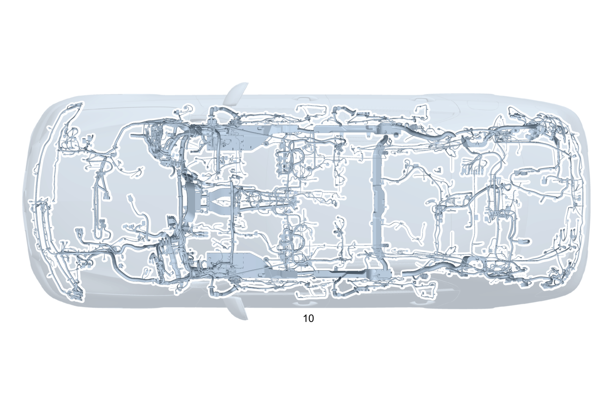

| № | Артикул | Название | Кол. | Примечание | Ограничение |
|---|---|---|---|---|---|
| 10 | A 206 540 60 53 | Электрический жгут (ELECTRICAL WIRING HARNESS) | 1 | Основной жгут электропроводки системы рамы и пола [-] При заказе указать идент. номер [-] В жгуте проводов предусмотрена возможность подключения соответствующих дополнительных опций согласно производственному номеру а/м | |
| 10 | A 206 540 55 61 | Электрический жгут (ELECTRICAL WIRING HARNESS) | 1 | Основной жгут электропроводки системы рамы и пола [-] При заказе указать идент. номер [-] В жгуте проводов предусмотрена возможность подключения соответствующих дополнительных опций согласно производственному номеру а/м | 165 |
| 20 | Q 000000000002 | - Возможен заказ только отдельных компонентов жгута проводов | 1 | Провод электропитания ESP® Рулевое управление: Влево | |
| 20 | Q 000000000002 | - Возможен заказ только отдельных компонентов жгута проводов | 1 | Провод электропитания ESP® Рулевое управление: Вправо | |
| 20 | Q 000000000002 | - Возможен заказ только отдельных компонентов жгута проводов | 1 | Датчик ESP Рулевое управление: Влево | ME10/B01 |
| 20 | Q 000000000002 | - Возможен заказ только отдельных компонентов жгута проводов | 1 | Датчик ESP Рулевое управление: Влево | B01 |
| 20 | Q 000000000002 | - Возможен заказ только отдельных компонентов жгута проводов | 1 | Датчик ESP Рулевое управление: Вправо | ME10/B01 |
| 20 | Q 000000000002 | - Возможен заказ только отдельных компонентов жгута проводов | 1 | Датчик ESP Рулевое управление: Вправо | B01 |
| 20 | Q 000000000002 | - Возможен заказ только отдельных компонентов жгута проводов | 1 | Амортизаторы с регулируемой жёсткостью и датчики уровня а/м Рулевое управление: Влево | 459 |
| 20 | Q 000000000002 | - Возможен заказ только отдельных компонентов жгута проводов | 1 | Амортизаторы с регулируемой жёсткостью и датчики уровня а/м Рулевое управление: Влево | (803+053)+459 |
| 20 | Q 000000000002 | - Возможен заказ только отдельных компонентов жгута проводов | 1 | Амортизаторы с регулируемой жёсткостью и датчики уровня а/м Рулевое управление: Влево | 459 |
| 20 | Q 000000000002 | - Возможен заказ только отдельных компонентов жгута проводов | 1 | Амортизаторы с регулируемой жёсткостью и датчики уровня а/м Рулевое управление: Вправо | 459 |
| 20 | Q 000000000002 | - Возможен заказ только отдельных компонентов жгута проводов | 1 | Амортизаторы с регулируемой жёсткостью и датчики уровня а/м Рулевое управление: Вправо | (803+053)+459 |
| 20 | Q 000000000002 | - Возможен заказ только отдельных компонентов жгута проводов | 1 | Амортизаторы с регулируемой жёсткостью и датчики уровня а/м Рулевое управление: Вправо | 459 |
| 20 | Q 000000000002 | - Возможен заказ только отдельных компонентов жгута проводов | 1 | Амортизаторы с регулируемой жёсткостью и датчики уровня а/м Рулевое управление: Влево | (804/804+054)+459 |
| 20 | Q 000000000002 | - Возможен заказ только отдельных компонентов жгута проводов | 1 | Амортизаторы с регулируемой жёсткостью и датчики уровня а/м Рулевое управление: Влево | (804/804+054/805/806)+459 |
| 20 | Q 000000000002 | - Возможен заказ только отдельных компонентов жгута проводов | 1 | Амортизаторы с регулируемой жёсткостью и датчики уровня а/м Рулевое управление: Влево | 459 |
| 20 | Q 000000000002 | - Возможен заказ только отдельных компонентов жгута проводов | 1 | Амортизаторы с регулируемой жёсткостью и датчики уровня а/м Рулевое управление: Вправо | (804/804+054)+459 |
| 20 | Q 000000000002 | - Возможен заказ только отдельных компонентов жгута проводов | 1 | Амортизаторы с регулируемой жёсткостью и датчики уровня а/м Рулевое управление: Вправо | (804/804+054/805/806)+459 |
| 20 | Q 000000000002 | - Возможен заказ только отдельных компонентов жгута проводов | 1 | Амортизаторы с регулируемой жёсткостью и датчики уровня а/м Рулевое управление: Вправо | 459 |
| 20 | Q 000000000002 | - Возможен заказ только отдельных компонентов жгута проводов | 1 | Регулировка уровня кузова Рулевое управление: Влево | 480 |
| 20 | Q 000000000002 | - Возможен заказ только отдельных компонентов жгута проводов | 1 | Регулировка уровня кузова Рулевое управление: Влево | 480 |
| 20 | Q 000000000002 | - Возможен заказ только отдельных компонентов жгута проводов | 1 | Регулировка уровня кузова Рулевое управление: Вправо | 480 |
| 20 | Q 000000000002 | - Возможен заказ только отдельных компонентов жгута проводов | 1 | Регулировка уровня кузова Рулевое управление: Вправо | 480 |
| 20 | Q 000000000002 | - Возможен заказ только отдельных компонентов жгута проводов | 1 | Натяжитель ремня безопасности Рулевое управление: Влево | |
| 20 | Q 000000000002 | - Возможен заказ только отдельных компонентов жгута проводов | 1 | Натяжитель ремня безопасности Рулевое управление: Влево | |
| 20 | Q 000000000002 | - Возможен заказ только отдельных компонентов жгута проводов | 1 | Натяжитель ремня безопасности Рулевое управление: Вправо | |
| 20 | Q 000000000002 | - Возможен заказ только отдельных компонентов жгута проводов | 1 | Натяжитель ремня безопасности Рулевое управление: Вправо | |
| 20 | Q 000000000002 | - Возможен заказ только отдельных компонентов жгута проводов | 1 | Натяжитель ремня безопасности Рулевое управление: Влево | 299 |
| 20 | Q 000000000002 | - Возможен заказ только отдельных компонентов жгута проводов | 1 | Натяжитель ремня безопасности Рулевое управление: Влево | (803+053/804)+299 |
| 20 | Q 000000000002 | - Возможен заказ только отдельных компонентов жгута проводов | 1 | Натяжитель ремня безопасности Рулевое управление: Влево | 299 |
| 20 | Q 000000000002 | - Возможен заказ только отдельных компонентов жгута проводов | 1 | Натяжитель ремня безопасности Рулевое управление: Вправо | 299 |
| 20 | Q 000000000002 | - Возможен заказ только отдельных компонентов жгута проводов | 1 | Натяжитель ремня безопасности Рулевое управление: Вправо | (803+053/804)+299 |
| 20 | Q 000000000002 | - Возможен заказ только отдельных компонентов жгута проводов | 1 | Натяжитель ремня безопасности Рулевое управление: Вправо | 299 |
| 20 | Q 000000000002 | - Возможен заказ только отдельных компонентов жгута проводов | 1 | Натяжитель ремня безопасности Рулевое управление: Влево | 299+(494/460) |
| 20 | Q 000000000002 | - Возможен заказ только отдельных компонентов жгута проводов | 1 | Натяжитель ремня безопасности Рулевое управление: Влево | 299+(494/460) |
| 20 | Q 000000000002 | - Возможен заказ только отдельных компонентов жгута проводов | 1 | Натяжитель ремня безопасности Рулевое управление: Влево | (494/460)/299+(494/460) |
| 20 | Q 000000000002 | - Возможен заказ только отдельных компонентов жгута проводов | 1 | Натяжитель ремня безопасности Рулевое управление: Влево | (803+053/804)+((494/460)/299+(494/460)) |
| 20 | Q 000000000002 | - Возможен заказ только отдельных компонентов жгута проводов | 1 | Натяжитель ремня безопасности Рулевое управление: Влево | (494/460)/299+(494/460) |
| 20 | Q 000000000002 | - Возможен заказ только отдельных компонентов жгута проводов | 1 | Подушка безопасности переднего пассажира Рулевое управление: Влево | 498/835 |
| 20 | Q 000000000002 | - Возможен заказ только отдельных компонентов жгута проводов | 1 | Подушка безопасности переднего пассажира Рулевое управление: Влево | 460/494/498/835 |
| 20 | Q 000000000002 | - Возможен заказ только отдельных компонентов жгута проводов | 1 | Подушка безопасности переднего пассажира Рулевое управление: Влево | 460/494/498/835 |
| 20 | Q 000000000002 | - Возможен заказ только отдельных компонентов жгута проводов | 1 | Подушка безопасности переднего пассажира Рулевое управление: Вправо | 498/835 |
| 20 | Q 000000000002 | - Возможен заказ только отдельных компонентов жгута проводов | 1 | Подушка безопасности переднего пассажира Рулевое управление: Вправо | 498/835 |
| 20 | Q 000000000002 | - Возможен заказ только отдельных компонентов жгута проводов | 1 | Подушка безопасности / аварийный натяжитель ремня безопасности на крепёжном наконечнике ремня Рулевое управление: Влево | 51B |
| 20 | Q 000000000002 | - Возможен заказ только отдельных компонентов жгута проводов | 1 | Подушка безопасности / аварийный натяжитель ремня безопасности на крепёжном наконечнике ремня Рулевое управление: Влево | 50B/51B/3B0 |
| 20 | Q 000000000002 | - Возможен заказ только отдельных компонентов жгута проводов | 1 | Подушка безопасности / аварийный натяжитель ремня безопасности на крепёжном наконечнике ремня Рулевое управление: Вправо | 51B |
| 20 | Q 000000000002 | - Возможен заказ только отдельных компонентов жгута проводов | 1 | Подушка безопасности / аварийный натяжитель ремня безопасности на крепёжном наконечнике ремня Рулевое управление: Вправо | 50B/51B/3B0 |
| 20 | Q 000000000002 | - Возможен заказ только отдельных компонентов жгута проводов | 1 | Аварийный натяжитель ремня безопасности в задней части салона Рулевое управление: Влево | |
| 20 | Q 000000000002 | - Возможен заказ только отдельных компонентов жгута проводов | 1 | Аварийный натяжитель ремня безопасности в задней части салона Рулевое управление: Вправо | |
| 20 | Q 000000000002 | - Возможен заказ только отдельных компонентов жгута проводов | 1 | Сирена сигнализации EDW Рулевое управление: Влево | (807/808/29X)+882 |
| 20 | Q 000000000002 | - Возможен заказ только отдельных компонентов жгута проводов | 1 | Сирена сигнализации EDW Рулевое управление: Вправо | (807/808/29X)+882 |
| 20 | Q 000000000002 | - Возможен заказ только отдельных компонентов жгута проводов | 1 | Сирена сигнализации EDW Рулевое управление: Влево | (807/808/29X)+882+(228/ME10) |
| 20 | Q 000000000002 | - Возможен заказ только отдельных компонентов жгута проводов | 1 | Сирена сигнализации EDW Рулевое управление: Вправо | (807/808/29X)+882+(228/ME10) |
| 20 | Q 000000000002 | - Возможен заказ только отдельных компонентов жгута проводов | 1 | Боковая подушка безопасности (задняя) Рулевое управление: Влево | 293 |
| 20 | Q 000000000002 | - Возможен заказ только отдельных компонентов жгута проводов | 1 | Боковая подушка безопасности (задняя) Рулевое управление: Влево | (803+053/804)+293 |
| 20 | Q 000000000002 | - Возможен заказ только отдельных компонентов жгута проводов | 1 | Боковая подушка безопасности (задняя) Рулевое управление: Влево | 293 |
| 20 | Q 000000000002 | - Возможен заказ только отдельных компонентов жгута проводов | 1 | Боковая подушка безопасности (задняя) Рулевое управление: Вправо | 293 |
| 20 | Q 000000000002 | - Возможен заказ только отдельных компонентов жгута проводов | 1 | Боковая подушка безопасности (задняя) Рулевое управление: Вправо | (803+053/804)+293 |
| 20 | Q 000000000002 | - Возможен заказ только отдельных компонентов жгута проводов | 1 | Боковая подушка безопасности (задняя) Рулевое управление: Вправо | 293 |
| 20 | Q 000000000002 | - Возможен заказ только отдельных компонентов жгута проводов | 1 | Подушка безопасности в сиденье водителя Рулевое управление: Влево | 292/221/275 |
| 20 | Q 000000000002 | - Возможен заказ только отдельных компонентов жгута проводов | 1 | Подушка безопасности в сиденье водителя Рулевое управление: Вправо | 292/222/275 |
| 20 | Q 000000000002 | - Возможен заказ только отдельных компонентов жгута проводов | 1 | Подушка безопасности в сиденье водителя Рулевое управление: Влево | (804/805/806)+(292/275) |
| 20 | Q 000000000002 | - Возможен заказ только отдельных компонентов жгута проводов | 1 | Подушка безопасности в сиденье водителя Рулевое управление: Влево | (292/275) |
| 20 | Q 000000000002 | - Возможен заказ только отдельных компонентов жгута проводов | 1 | Подушка безопасности в сиденье водителя Рулевое управление: Вправо | (804/805/806)+(292/275) |
| 20 | Q 000000000002 | - Возможен заказ только отдельных компонентов жгута проводов | 1 | Подушка безопасности в сиденье водителя Рулевое управление: Вправо | (292/275) |
| 20 | Q 000000000002 | - Возможен заказ только отдельных компонентов жгута проводов | 1 | Подушка безопасности в сиденье переднего пассажира Рулевое управление: Влево | 292/221/275 |
| 20 | Q 000000000002 | - Возможен заказ только отдельных компонентов жгута проводов | 1 | Подушка безопасности в сиденье переднего пассажира Рулевое управление: Влево | 292/222/275 |
| 20 | Q 000000000002 | - Возможен заказ только отдельных компонентов жгута проводов | 1 | Подушка безопасности в сиденье переднего пассажира Рулевое управление: Вправо | 292/222/275 |
| 20 | Q 000000000002 | - Возможен заказ только отдельных компонентов жгута проводов | 1 | Подушка безопасности в сиденье переднего пассажира Рулевое управление: Вправо | 292/222/275 |
| 20 | Q 000000000002 | - Возможен заказ только отдельных компонентов жгута проводов | 1 | Система контроля давления в шинах (RDK) Рулевое управление: Влево | 475 |
| 20 | Q 000000000002 | - Возможен заказ только отдельных компонентов жгута проводов | 1 | Система контроля давления в шинах (RDK) Рулевое управление: Влево | (803+053/804)+475 |
| 20 | Q 000000000002 | - Возможен заказ только отдельных компонентов жгута проводов | 1 | Система контроля давления в шинах (RDK) Рулевое управление: Влево | 475 |
| 20 | Q 000000000002 | - Возможен заказ только отдельных компонентов жгута проводов | 1 | Система контроля давления в шинах (RDK) Рулевое управление: Вправо | 475 |
| 20 | Q 000000000002 | - Возможен заказ только отдельных компонентов жгута проводов | 1 | Система контроля давления в шинах (RDK) Рулевое управление: Вправо | (803+053/804)+475 |
| 20 | Q 000000000002 | - Возможен заказ только отдельных компонентов жгута проводов | 1 | Система контроля давления в шинах (RDK) Рулевое управление: Вправо | 475 |
| 20 | Q 000000000002 | - Возможен заказ только отдельных компонентов жгута проводов | 1 | Система контроля давления в шинах (RDK) Рулевое управление: Влево | (807/808/29X)+475 |
| 20 | Q 000000000002 | - Возможен заказ только отдельных компонентов жгута проводов | 1 | Система контроля давления в шинах (RDK) Рулевое управление: Вправо | (807/808/29X)+475 |
| 20 | Q 000000000002 | - Возможен заказ только отдельных компонентов жгута проводов | 1 | Защита пешеходов Рулевое управление: Влево | U60 |
| 20 | Q 000000000002 | - Возможен заказ только отдельных компонентов жгута проводов | 1 | Защита пешеходов Рулевое управление: Влево | U60 |
| 20 | Q 000000000002 | - Возможен заказ только отдельных компонентов жгута проводов | 1 | Защита пешеходов Рулевое управление: Влево | U60/(804/804+054)+U60 |
| 20 | Q 000000000002 | - Возможен заказ только отдельных компонентов жгута проводов | 1 | Защита пешеходов Рулевое управление: Влево | U60/(804/804+054/805/806)+U60 |
| 20 | Q 000000000002 | - Возможен заказ только отдельных компонентов жгута проводов | 1 | Защита пешеходов Рулевое управление: Влево | U60 |
| 20 | Q 000000000002 | - Возможен заказ только отдельных компонентов жгута проводов | 1 | Защита пешеходов Рулевое управление: Вправо | U60 |
| 20 | Q 000000000002 | - Возможен заказ только отдельных компонентов жгута проводов | 1 | Защита пешеходов Рулевое управление: Вправо | U60 |
| 20 | Q 000000000002 | - Возможен заказ только отдельных компонентов жгута проводов | 1 | Защита пешеходов Рулевое управление: Вправо | U60/(804/804+054)+U60 |
| 20 | Q 000000000002 | - Возможен заказ только отдельных компонентов жгута проводов | 1 | Защита пешеходов Рулевое управление: Вправо | U60/(804/804+054/805/806)+U60 |
| 20 | Q 000000000002 | - Возможен заказ только отдельных компонентов жгута проводов | 1 | Защита пешеходов Рулевое управление: Вправо | U60 |
| 20 | Q 000000000002 | - Возможен заказ только отдельных компонентов жгута проводов | 1 | Защита пешеходов Рулевое управление: Влево | (807/808)+U60 |
| 20 | Q 000000000002 | - Возможен заказ только отдельных компонентов жгута проводов | 1 | Защита пешеходов Рулевое управление: Вправо | (807/808)+U60 |
| 20 | Q 000000000002 | - Возможен заказ только отдельных компонентов жгута проводов | 1 | Зарядное устройство для аккумуляторной батареи Рулевое управление: Влево | 80B/81B/82B |
| 20 | Q 000000000002 | - Возможен заказ только отдельных компонентов жгута проводов | 1 | Зарядное устройство для аккумуляторной батареи Рулевое управление: Вправо | 80B/81B/82B |
| 20 | Q 000000000002 | - Возможен заказ только отдельных компонентов жгута проводов | 1 | Зарядное устройство для аккумуляторной батареи Рулевое управление: Влево | 803+(80B/81B/82B) |
| 20 | Q 000000000002 | - Возможен заказ только отдельных компонентов жгута проводов | 1 | Зарядное устройство для аккумуляторной батареи Рулевое управление: Влево | (80B/81B/82B) |
| 20 | Q 000000000002 | - Возможен заказ только отдельных компонентов жгута проводов | 1 | Зарядное устройство для аккумуляторной батареи Рулевое управление: Влево | (803+053/804)+(80B/81B/82B) |
| 20 | Q 000000000002 | - Возможен заказ только отдельных компонентов жгута проводов | 1 | Зарядное устройство для аккумуляторной батареи Рулевое управление: Влево | (80B/81B/82B) |
| 20 | Q 000000000002 | - Возможен заказ только отдельных компонентов жгута проводов | 1 | Зарядное устройство для аккумуляторной батареи Рулевое управление: Вправо | 803+(80B/81B/82B) |
| 20 | Q 000000000002 | - Возможен заказ только отдельных компонентов жгута проводов | 1 | Зарядное устройство для аккумуляторной батареи Рулевое управление: Вправо | (80B/81B/82B) |
| 20 | Q 000000000002 | - Возможен заказ только отдельных компонентов жгута проводов | 1 | Зарядное устройство для аккумуляторной батареи Рулевое управление: Вправо | (803+053/804)+(80B/81B/82B) |
| 20 | Q 000000000002 | - Возможен заказ только отдельных компонентов жгута проводов | 1 | Зарядное устройство для аккумуляторной батареи Рулевое управление: Вправо | (80B/81B/82B) |
| 20 | Q 000000000002 | - Возможен заказ только отдельных компонентов жгута проводов | 1 | Зарядное устройство для аккумуляторной батареи | 83B+(80B/81B/82B) |
| 20 | Q 000000000002 | - Возможен заказ только отдельных компонентов жгута проводов | 1 | Зарядное устройство для аккумуляторной батареи | 803+83B+(80B/81B/82B) |
| 20 | Q 000000000002 | - Возможен заказ только отдельных компонентов жгута проводов | 1 | Зарядное устройство для аккумуляторной батареи | 83B+(80B/81B/82B) |
| 20 | Q 000000000002 | - Возможен заказ только отдельных компонентов жгута проводов | 1 | Зарядное устройство для аккумуляторной батареи | (803+053/804)+83B+(80B/81B/82B) |
| 20 | Q 000000000002 | - Возможен заказ только отдельных компонентов жгута проводов | 1 | Зарядное устройство для аккумуляторной батареи | 83B+(80B/81B/82B) |
| 20 | Q 000000000002 | - Возможен заказ только отдельных компонентов жгута проводов | 1 | Прикуриватель Рулевое управление: Влево | |
| 20 | Q 000000000002 | - Возможен заказ только отдельных компонентов жгута проводов | 1 | Прикуриватель Рулевое управление: Вправо | |
| 20 | Q 000000000002 | - Возможен заказ только отдельных компонентов жгута проводов | 1 | Адаптивная система амортизации правая | |
| 20 | Q 000000000002 | - Возможен заказ только отдельных компонентов жгута проводов | 1 | Адаптивная система амортизации правая | 459 |
| 20 | Q 000000000002 | - Возможен заказ только отдельных компонентов жгута проводов | 1 | Адаптивная система амортизации правая | 804/804+054 |
| 20 | Q 000000000002 | - Возможен заказ только отдельных компонентов жгута проводов | 1 | Адаптивная система амортизации правая | 804/804+054/805/806 |
| 20 | Q 000000000002 | - Возможен заказ только отдельных компонентов жгута проводов | 1 | Адаптивная система амортизации правая | |
| 20 | Q 000000000002 | - Возможен заказ только отдельных компонентов жгута проводов | 1 | Система центральной блокировки замков Рулевое управление: Влево | |
| 20 | Q 000000000002 | - Возможен заказ только отдельных компонентов жгута проводов | 1 | Система центральной блокировки замков Рулевое управление: Влево | 803+053 |
| 20 | Q 000000000002 | - Возможен заказ только отдельных компонентов жгута проводов | 1 | Система центральной блокировки замков Рулевое управление: Влево | (803+053/804) |
| 20 | Q 000000000002 | - Возможен заказ только отдельных компонентов жгута проводов | 1 | Система центральной блокировки замков Рулевое управление: Влево | |
| 20 | Q 000000000002 | - Возможен заказ только отдельных компонентов жгута проводов | 1 | Система центральной блокировки замков Рулевое управление: Вправо | |
| 20 | Q 000000000002 | - Возможен заказ только отдельных компонентов жгута проводов | 1 | Система центральной блокировки замков Рулевое управление: Вправо | (803+053/804) |
| 20 | Q 000000000002 | - Возможен заказ только отдельных компонентов жгута проводов | 1 | Система центральной блокировки замков Рулевое управление: Вправо | |
| 20 | Q 000000000002 | - Возможен заказ только отдельных компонентов жгута проводов | 1 | Система центральной блокировки замков Рулевое управление: Влево | 494/460 |
| 20 | Q 000000000002 | - Возможен заказ только отдельных компонентов жгута проводов | 1 | Система центральной блокировки замка задней двери | |
| 20 | Q 000000000002 | - Возможен заказ только отдельных компонентов жгута проводов | 1 | Блок управления SAM спереди Рулевое управление: Влево | 873/401 |
| 20 | Q 000000000002 | - Возможен заказ только отдельных компонентов жгута проводов | 1 | Блок управления SAM спереди Рулевое управление: Вправо | 873/401 |
| 20 | Q 000000000002 | - Возможен заказ только отдельных компонентов жгута проводов | 1 | Шина данных CAN сиденья Рулевое управление: Влево | 399/(872+(873/401))/(221+222)/(275) |
| 20 | Q 000000000002 | - Возможен заказ только отдельных компонентов жгута проводов | 1 | Шина данных CAN сиденья Рулевое управление: Влево | 399/(872+(873/401))/(221+222)/(275) |
| 20 | Q 000000000002 | - Возможен заказ только отдельных компонентов жгута проводов | 1 | Шина данных CAN сиденья Рулевое управление: Влево | 399/(872+(873/401))/(221+222)/(275)/01T |
| 20 | Q 000000000002 | - Возможен заказ только отдельных компонентов жгута проводов | 1 | Шина данных CAN сиденья Рулевое управление: Вправо | 399/(872+(873/401))/(221+222)/(275) |
| 20 | Q 000000000002 | - Возможен заказ только отдельных компонентов жгута проводов | 1 | Шина данных CAN сиденья Рулевое управление: Вправо | 399/(872+(873/401))/275 |
| 20 | Q 000000000002 | - Возможен заказ только отдельных компонентов жгута проводов | 1 | Шина данных CAN сиденья Рулевое управление: Вправо | 399/(872+(873/401))/275/01T |
| 20 | Q 000000000002 | - Возможен заказ только отдельных компонентов жгута проводов | 1 | Шина данных CAN сиденья Рулевое управление: Влево | 409 |
| 20 | Q 000000000002 | - Возможен заказ только отдельных компонентов жгута проводов | 1 | Шина данных CAN сиденья Рулевое управление: Вправо | 409 |
| 20 | Q 000000000002 | - Возможен заказ только отдельных компонентов жгута проводов | 1 | Спинка заднего сиденья Рулевое управление: Влево | 287 |
| 20 | Q 000000000002 | - Возможен заказ только отдельных компонентов жгута проводов | 1 | Спинка заднего сиденья Рулевое управление: Влево | (807/808/29X)+287 |
| 20 | Q 000000000002 | - Возможен заказ только отдельных компонентов жгута проводов | 1 | Спинка заднего сиденья Рулевое управление: Вправо | 287 |
| 20 | Q 000000000002 | - Возможен заказ только отдельных компонентов жгута проводов | 1 | Спинка заднего сиденья Рулевое управление: Вправо | (807/808/29X)+287 |
| 20 | Q 000000000002 | - Возможен заказ только отдельных компонентов жгута проводов | 1 | Замок ремня безопасности впереди справа Рулевое управление: Влево | |
| 20 | Q 000000000002 | - Возможен заказ только отдельных компонентов жгута проводов | 1 | Замок ремня безопасности впереди справа Рулевое управление: Влево | 807/808/29X |
| 20 | Q 000000000002 | - Возможен заказ только отдельных компонентов жгута проводов | 1 | Замок ремня безопасности впереди справа Рулевое управление: Вправо | |
| 20 | Q 000000000002 | - Возможен заказ только отдельных компонентов жгута проводов | 1 | Замок ремня безопасности впереди справа Рулевое управление: Вправо | 807/808/29X |
| 20 | Q 000000000002 | - Возможен заказ только отдельных компонентов жгута проводов | 1 | Замок ремня безопасности впереди справа Рулевое управление: Влево | 242/222 |
| 20 | Q 000000000002 | - Возможен заказ только отдельных компонентов жгута проводов | 1 | Замок ремня безопасности впереди справа Рулевое управление: Влево | |
| 20 | Q 000000000002 | - Возможен заказ только отдельных компонентов жгута проводов | 1 | Замок ремня безопасности впереди справа Рулевое управление: Влево | |
| 20 | Q 000000000002 | - Возможен заказ только отдельных компонентов жгута проводов | 1 | Замок ремня безопасности впереди справа Рулевое управление: Вправо | 242/222 |
| 20 | Q 000000000002 | - Возможен заказ только отдельных компонентов жгута проводов | 1 | Замок ремня безопасности впереди справа Рулевое управление: Вправо | |
| 20 | Q 000000000002 | - Возможен заказ только отдельных компонентов жгута проводов | 1 | Замок ремня безопасности впереди справа Рулевое управление: Вправо | |
| 20 | Q 000000000002 | - Возможен заказ только отдельных компонентов жгута проводов | 1 | Замок ремня безопасности впереди Рулевое управление: Влево | 804/(804+054)/805 |
| 20 | Q 000000000002 | - Возможен заказ только отдельных компонентов жгута проводов | 1 | Замок ремня безопасности впереди Рулевое управление: Влево | |
| 20 | Q 000000000002 | - Возможен заказ только отдельных компонентов жгута проводов | 1 | Замок ремня безопасности впереди Рулевое управление: Вправо | 804/(804+054)/805 |
| 20 | Q 000000000002 | - Возможен заказ только отдельных компонентов жгута проводов | 1 | Замок ремня безопасности впереди Рулевое управление: Вправо | |
| 20 | Q 000000000002 | - Возможен заказ только отдельных компонентов жгута проводов | 1 | Замок ремня безопасности впереди слева Рулевое управление: Влево | |
| 20 | Q 000000000002 | - Возможен заказ только отдельных компонентов жгута проводов | 1 | Замок ремня безопасности впереди слева Рулевое управление: Влево | 241/221 |
| 20 | Q 000000000002 | - Возможен заказ только отдельных компонентов жгута проводов | 1 | Замок ремня безопасности впереди слева Рулевое управление: Влево | |
| 20 | Q 000000000002 | - Возможен заказ только отдельных компонентов жгута проводов | 1 | Замок ремня безопасности впереди слева Рулевое управление: Влево | |
| 20 | Q 000000000002 | - Возможен заказ только отдельных компонентов жгута проводов | 1 | Замок ремня безопасности впереди слева Рулевое управление: Влево | |
| 20 | Q 000000000002 | - Возможен заказ только отдельных компонентов жгута проводов | 1 | Замок ремня безопасности впереди слева Рулевое управление: Влево | |
| 20 | Q 000000000002 | - Возможен заказ только отдельных компонентов жгута проводов | 1 | Замок ремня безопасности впереди слева Рулевое управление: Вправо | 241/221 |
| 20 | Q 000000000002 | - Возможен заказ только отдельных компонентов жгута проводов | 1 | Замок ремня безопасности впереди слева Рулевое управление: Вправо | |
| 20 | Q 000000000002 | - Возможен заказ только отдельных компонентов жгута проводов | 1 | Замок ремня безопасности впереди слева Рулевое управление: Вправо | |
| 20 | Q 000000000002 | - Возможен заказ только отдельных компонентов жгута проводов | 1 | Замок ремня безопасности впереди слева Рулевое управление: Вправо | |
| 20 | Q 000000000002 | - Возможен заказ только отдельных компонентов жгута проводов | 1 | Замок ремня безопасности впереди слева Рулевое управление: Вправо | |
| 20 | Q 000000000002 | - Возможен заказ только отдельных компонентов жгута проводов | 1 | Замок ремня безопасности впереди слева Рулевое управление: Вправо | |
| 20 | Q 000000000002 | - Возможен заказ только отдельных компонентов жгута проводов | 1 | Замок ремня безопасности в задней части салона Рулевое управление: Влево | U01 |
| 20 | Q 000000000002 | - Возможен заказ только отдельных компонентов жгута проводов | 1 | Замок ремня безопасности в задней части салона Рулевое управление: Влево | U01 |
| 20 | Q 000000000002 | - Возможен заказ только отдельных компонентов жгута проводов | 1 | Замок ремня безопасности в задней части салона Рулевое управление: Вправо | U01 |
| 20 | Q 000000000002 | - Возможен заказ только отдельных компонентов жгута проводов | 1 | Замок ремня безопасности в задней части салона Рулевое управление: Вправо | U01 |
| 20 | Q 000000000002 | - Возможен заказ только отдельных компонентов жгута проводов | 1 | Датчик ускорения Рулевое управление: Влево | |
| 20 | Q 000000000002 | - Возможен заказ только отдельных компонентов жгута проводов | 1 | Датчик ускорения Рулевое управление: Вправо | |
| 20 | Q 000000000002 | - Возможен заказ только отдельных компонентов жгута проводов | 1 | Связь по шине данных LIN, подушка безопасности Рулевое управление: Влево | 383/384/U10/01T |
| 20 | Q 000000000002 | - Возможен заказ только отдельных компонентов жгута проводов | 1 | Связь по шине данных LIN, подушка безопасности Рулевое управление: Влево | 382/383/384/U10/01T |
| 20 | Q 000000000002 | - Возможен заказ только отдельных компонентов жгута проводов | 1 | Связь по шине данных LIN, подушка безопасности Рулевое управление: Влево | 382/U10/01T |
| 20 | Q 000000000002 | - Возможен заказ только отдельных компонентов жгута проводов | 1 | Связь по шине данных LIN, подушка безопасности Рулевое управление: Вправо | 383/384/U10/01T |
| 20 | Q 000000000002 | - Возможен заказ только отдельных компонентов жгута проводов | 1 | Связь по шине данных LIN, подушка безопасности Рулевое управление: Вправо | 382/383/384/U10/01T |
| 20 | Q 000000000002 | - Возможен заказ только отдельных компонентов жгута проводов | 1 | Связь по шине данных LIN, подушка безопасности Рулевое управление: Вправо | 382/U10/01T |
| 20 | Q 000000000002 | - Возможен заказ только отдельных компонентов жгута проводов | 1 | Основная область применения шины FlexRay Рулевое управление: Влево | (807/808) |
| 20 | Q 000000000002 | - Возможен заказ только отдельных компонентов жгута проводов | 1 | Основная область применения шины FlexRay Рулевое управление: Вправо | (807/808) |
| 20 | Q 000000000002 | - Возможен заказ только отдельных компонентов жгута проводов | 1 | Интеллектуальное движение Рулевое управление: Влево | (807/808)+B01+4B1 |
| 20 | Q 000000000002 | - Возможен заказ только отдельных компонентов жгута проводов | 1 | Интеллектуальное движение Рулевое управление: Вправо | (807/808)+B01+4B1 |
| 20 | Q 000000000002 | - Возможен заказ только отдельных компонентов жгута проводов | 1 | Система адаптивной амортизации (ADS) Рулевое управление: Влево | (807/808)+459 |
| 20 | Q 000000000002 | - Возможен заказ только отдельных компонентов жгута проводов | 1 | Система адаптивной амортизации (ADS) Рулевое управление: Вправо | (807/808)+459 |
| 20 | Q 000000000002 | - Возможен заказ только отдельных компонентов жгута проводов | 1 | Блок управления электронного замка зажигания (EZS) Рулевое управление: Влево | (807/808)+(459/ME10+480) |
| 20 | Q 000000000002 | - Возможен заказ только отдельных компонентов жгута проводов | 1 | Блок управления электронного замка зажигания (EZS) | (807/808)+(459/ME10+480) |
| 20 | Q 000000000002 | - Возможен заказ только отдельных компонентов жгута проводов | 1 | Шина данных CAN Рулевое управление: Влево | |
| 20 | Q 000000000002 | - Возможен заказ только отдельных компонентов жгута проводов | 1 | Шина данных CAN Рулевое управление: Влево | 803+053 |
| 20 | Q 000000000002 | - Возможен заказ только отдельных компонентов жгута проводов | 1 | Шина данных CAN Рулевое управление: Влево | (803+053/804) |
| 20 | Q 000000000002 | - Возможен заказ только отдельных компонентов жгута проводов | 1 | Шина данных CAN Рулевое управление: Влево | |
| 20 | Q 000000000002 | - Возможен заказ только отдельных компонентов жгута проводов | 1 | Шина данных CAN Рулевое управление: Вправо | |
| 20 | Q 000000000002 | - Возможен заказ только отдельных компонентов жгута проводов | 1 | Шина данных CAN Рулевое управление: Вправо | (803+053/804) |
| 20 | Q 000000000002 | - Возможен заказ только отдельных компонентов жгута проводов | 1 | Шина данных CAN Рулевое управление: Вправо | |
| 20 | Q 000000000002 | - Возможен заказ только отдельных компонентов жгута проводов | 1 | Шина данных CAN Рулевое управление: Влево | (807/808/29X) |
| 20 | Q 000000000002 | - Возможен заказ только отдельных компонентов жгута проводов | 1 | Шина данных CAN Рулевое управление: Вправо | (807/808/29X) |
| 20 | Q 000000000002 | - Возможен заказ только отдельных компонентов жгута проводов | 1 | Базовый объем Ethernet Рулевое управление: Влево | (807/808)+(3B9/316/317/318) |
| 20 | Q 000000000002 | - Возможен заказ только отдельных компонентов жгута проводов | 1 | Базовый объем Ethernet Рулевое управление: Вправо | (807/808)+(3B9/316/317/318) |
| 20 | Q 000000000002 | - Возможен заказ только отдельных компонентов жгута проводов | 1 | Ethernet N73/3 TO N145 Рулевое управление: Влево | 803+(494/460) |
| 20 | Q 000000000002 | - Возможен заказ только отдельных компонентов жгута проводов | 1 | Ethernet N73/3 TO N145 Рулевое управление: Влево | (494/460) |
| 20 | Q 000000000002 | - Возможен заказ только отдельных компонентов жгута проводов | 1 | Шина данных CAN, моторный отсек Рулевое управление: Влево | B01 |
| 20 | Q 000000000002 | - Возможен заказ только отдельных компонентов жгута проводов | 1 | Шина данных CAN, моторный отсек Рулевое управление: Вправо | B01 |
| 20 | Q 000000000002 | - Возможен заказ только отдельных компонентов жгута проводов | 1 | Шина данных CAN, моторный отсек Рулевое управление: Влево | B01+1U2 |
| 20 | Q 000000000002 | - Возможен заказ только отдельных компонентов жгута проводов | 1 | Шина данных CAN, моторный отсек Рулевое управление: Вправо | B01+1U2 |
| 20 | Q 000000000002 | - Возможен заказ только отдельных компонентов жгута проводов | 1 | Несущее основание кузова (базовый объём оборудования) Рулевое управление: Влево | (807/808/29X) |
| 20 | Q 000000000002 | - Возможен заказ только отдельных компонентов жгута проводов | 1 | Несущее основание кузова (базовый объём оборудования) Рулевое управление: Вправо | (807/808/29X) |
| 20 | Q 000000000002 | - Возможен заказ только отдельных компонентов жгута проводов | 1 | Провод электропитания аккумуляторной батареи 48 В Рулевое управление: Влево | (807/808)+B01 |
| 20 | Q 000000000002 | - Возможен заказ только отдельных компонентов жгута проводов | 1 | Провод электропитания аккумуляторной батареи 48 В Рулевое управление: Вправо | (807/808)+B01 |
| 20 | Q 000000000002 | - Возможен заказ только отдельных компонентов жгута проводов | 1 | Пиропредохранитель Рулевое управление: Влево | B01 |
| 20 | Q 000000000002 | - Возможен заказ только отдельных компонентов жгута проводов | 1 | Пиропредохранитель Рулевое управление: Вправо | B01 |
| 20 | Q 000000000002 | - Возможен заказ только отдельных компонентов жгута проводов | 1 | Датчик веса в сиденье Рулевое управление: Влево | U10 |
| 20 | Q 000000000002 | - Возможен заказ только отдельных компонентов жгута проводов | 1 | Датчик веса в сиденье Рулевое управление: Влево | (803+053/804)+U10 |
| 20 | Q 000000000002 | - Возможен заказ только отдельных компонентов жгута проводов | 1 | Датчик веса в сиденье Рулевое управление: Влево | U10 |
| 20 | Q 000000000002 | - Возможен заказ только отдельных компонентов жгута проводов | 1 | Датчик веса в сиденье Рулевое управление: Вправо | U10 |
| 20 | Q 000000000002 | - Возможен заказ только отдельных компонентов жгута проводов | 1 | Датчик веса в сиденье Рулевое управление: Вправо | (803+053/804)+U10 |
| 20 | Q 000000000002 | - Возможен заказ только отдельных компонентов жгута проводов | 1 | Датчик веса в сиденье Рулевое управление: Вправо | U10 |
| 20 | Q 000000000002 | - Возможен заказ только отдельных компонентов жгута проводов | 1 | Датчик веса в сиденье Рулевое управление: Влево | |
| 20 | Q 000000000002 | - Возможен заказ только отдельных компонентов жгута проводов | 1 | Датчик веса в сиденье Рулевое управление: Влево | |
| 20 | Q 000000000002 | - Возможен заказ только отдельных компонентов жгута проводов | 1 | Датчик веса в сиденье Рулевое управление: Вправо | |
| 20 | Q 000000000002 | - Возможен заказ только отдельных компонентов жгута проводов | 1 | Датчик веса в сиденье Рулевое управление: Вправо | |
| 20 | Q 000000000002 | - Возможен заказ только отдельных компонентов жгута проводов | 1 | Шина данных CAN периферийного оборудования Рулевое управление: Влево | |
| 20 | Q 000000000002 | - Возможен заказ только отдельных компонентов жгута проводов | 1 | Шина данных CAN периферийного оборудования Рулевое управление: Влево | |
| 20 | Q 000000000002 | - Возможен заказ только отдельных компонентов жгута проводов | 1 | Шина данных CAN периферийного оборудования Рулевое управление: Вправо | |
| 20 | Q 000000000002 | - Возможен заказ только отдельных компонентов жгута проводов | 1 | Шина данных CAN периферийного оборудования Рулевое управление: Вправо | |
| 20 | Q 000000000002 | - Возможен заказ только отдельных компонентов жгута проводов | 1 | Шина данных CAN периферийного оборудования Рулевое управление: Влево | 475 |
| 20 | Q 000000000002 | - Возможен заказ только отдельных компонентов жгута проводов | 1 | Шина данных CAN периферийного оборудования Рулевое управление: Влево | 475 |
| 20 | Q 000000000002 | - Возможен заказ только отдельных компонентов жгута проводов | 1 | Шина данных CAN периферийного оборудования Рулевое управление: Вправо | 475 |
| 20 | Q 000000000002 | - Возможен заказ только отдельных компонентов жгута проводов | 1 | Шина данных CAN периферийного оборудования Рулевое управление: Вправо | 475 |
| 20 | Q 000000000002 | - Возможен заказ только отдельных компонентов жгута проводов | 1 | Шина данных CAN периферийного оборудования Рулевое управление: Влево | (807/808) |
| 20 | Q 000000000002 | - Возможен заказ только отдельных компонентов жгута проводов | 1 | Шина данных CAN периферийного оборудования Рулевое управление: Вправо | (807/808) |
| 20 | Q 000000000002 | - Возможен заказ только отдельных компонентов жгута проводов | 1 | Шина данных CAN периферийного оборудования Рулевое управление: Влево | (807/808)+475 |
| 20 | Q 000000000002 | - Возможен заказ только отдельных компонентов жгута проводов | 1 | Шина данных CAN периферийного оборудования Рулевое управление: Вправо | (807/808)+475 |
| 20 | Q 000000000002 | - Возможен заказ только отдельных компонентов жгута проводов | 1 | Системы освещения Рулевое управление: Влево | (807/808)+3B9 |
| 20 | Q 000000000002 | - Возможен заказ только отдельных компонентов жгута проводов | 1 | Системы освещения Рулевое управление: Влево | (807/808/29X)+3B9 |
| 20 | Q 000000000002 | - Возможен заказ только отдельных компонентов жгута проводов | 1 | Системы освещения Рулевое управление: Вправо | (807/808)+3B9 |
| 20 | Q 000000000002 | - Возможен заказ только отдельных компонентов жгута проводов | 1 | Системы освещения Рулевое управление: Влево | (807/808)+3B9+24U |
| 20 | Q 000000000002 | - Возможен заказ только отдельных компонентов жгута проводов | 1 | Системы освещения Рулевое управление: Влево | (807/808/29X)+3B9+24U |
| 20 | Q 000000000002 | - Возможен заказ только отдельных компонентов жгута проводов | 1 | Системы освещения Рулевое управление: Вправо | (807/808)+3B9+24U |
| 20 | Q 000000000002 | - Возможен заказ только отдельных компонентов жгута проводов | 1 | Статический светодиодный свет Рулевое управление: Влево | (807/808/29X) |
| 20 | Q 000000000002 | - Возможен заказ только отдельных компонентов жгута проводов | 1 | Статический светодиодный свет Рулевое управление: Вправо | (807/808) |
| 20 | Q 000000000002 | - Возможен заказ только отдельных компонентов жгута проводов | 1 | Статический светодиодный свет Рулевое управление: Вправо | (807/808/29X) |
| 20 | Q 000000000002 | - Возможен заказ только отдельных компонентов жгута проводов | 1 | Динамический светодиодный свет Рулевое управление: Влево | (807/808/29X)+(316/317/318) |
| 20 | Q 000000000002 | - Возможен заказ только отдельных компонентов жгута проводов | 1 | Динамический светодиодный свет Рулевое управление: Вправо | (807/808)+(316/317/318) |
| 20 | Q 000000000002 | - Возможен заказ только отдельных компонентов жгута проводов | 1 | Динамический светодиодный свет Рулевое управление: Вправо | (807/808/29X)+(316/317/318) |
| 20 | Q 000000000002 | - Возможен заказ только отдельных компонентов жгута проводов | 1 | Освещение спереди Рулевое управление: Влево | (807/808/29X)+5B6 |
| 20 | Q 000000000002 | - Возможен заказ только отдельных компонентов жгута проводов | 1 | Освещение спереди Рулевое управление: Вправо | (807/808/29X)+5B6 |
| 20 | Q 000000000002 | - Возможен заказ только отдельных компонентов жгута проводов | 1 | Освещение спереди Рулевое управление: Влево | (807/808/29X)+(316/317/318)+5B6 |
| 20 | Q 000000000002 | - Возможен заказ только отдельных компонентов жгута проводов | 1 | Освещение спереди Рулевое управление: Вправо | (807/808/29X)+(316/317/318)+5B6 |
| 20 | Q 000000000002 | - Возможен заказ только отдельных компонентов жгута проводов | 1 | Задние фонари Рулевое управление: Влево | 803+632 |
| 20 | Q 000000000002 | - Возможен заказ только отдельных компонентов жгута проводов | 1 | Задние фонари Рулевое управление: Влево | 632 |
| 20 | Q 000000000002 | - Возможен заказ только отдельных компонентов жгута проводов | 1 | Задние фонари Рулевое управление: Влево | 803+631 |
| 20 | Q 000000000002 | - Возможен заказ только отдельных компонентов жгута проводов | 1 | Задние фонари Рулевое управление: Влево | 631 |
| 20 | Q 000000000002 | - Возможен заказ только отдельных компонентов жгута проводов | 1 | Задние фонари Рулевое управление: Влево | (804/804+054)+631 |
| 20 | Q 000000000002 | - Возможен заказ только отдельных компонентов жгута проводов | 1 | Задние фонари Рулевое управление: Влево | (804/804+054/805/806)+631 |
| 20 | Q 000000000002 | - Возможен заказ только отдельных компонентов жгута проводов | 1 | Задние фонари Рулевое управление: Влево | 631 |
| 20 | Q 000000000002 | - Возможен заказ только отдельных компонентов жгута проводов | 1 | Задние фонари Рулевое управление: Влево | 803+318 |
| 20 | Q 000000000002 | - Возможен заказ только отдельных компонентов жгута проводов | 1 | Задние фонари Рулевое управление: Влево | 318 |
| 20 | Q 000000000002 | - Возможен заказ только отдельных компонентов жгута проводов | 1 | Задние фонари Рулевое управление: Влево | 803+317 |
| 20 | Q 000000000002 | - Возможен заказ только отдельных компонентов жгута проводов | 1 | Задние фонари Рулевое управление: Влево | 317 |
| 20 | Q 000000000002 | - Возможен заказ только отдельных компонентов жгута проводов | 1 | Задние фонари Рулевое управление: Влево | (804/804+054)+317 |
| 20 | Q 000000000002 | - Возможен заказ только отдельных компонентов жгута проводов | 1 | Задние фонари Рулевое управление: Влево | (804/804+054/805/806)+317 |
| 20 | Q 000000000002 | - Возможен заказ только отдельных компонентов жгута проводов | 1 | Задние фонари Рулевое управление: Влево | 317 |
| 20 | Q 000000000002 | - Возможен заказ только отдельных компонентов жгута проводов | 1 | Задние фонари Рулевое управление: Вправо | 803+631 |
| 20 | Q 000000000002 | - Возможен заказ только отдельных компонентов жгута проводов | 1 | Задние фонари Рулевое управление: Вправо | 631 |
| 20 | Q 000000000002 | - Возможен заказ только отдельных компонентов жгута проводов | 1 | Задние фонари Рулевое управление: Вправо | 803+632 |
| 20 | Q 000000000002 | - Возможен заказ только отдельных компонентов жгута проводов | 1 | Задние фонари Рулевое управление: Вправо | 632 |
| 20 | Q 000000000002 | - Возможен заказ только отдельных компонентов жгута проводов | 1 | Задние фонари Рулевое управление: Вправо | (804/804+054)+632 |
| 20 | Q 000000000002 | - Возможен заказ только отдельных компонентов жгута проводов | 1 | Задние фонари Рулевое управление: Вправо | (804/804+054/805/806)+632 |
| 20 | Q 000000000002 | - Возможен заказ только отдельных компонентов жгута проводов | 1 | Задние фонари Рулевое управление: Вправо | 632 |
| 20 | Q 000000000002 | - Возможен заказ только отдельных компонентов жгута проводов | 1 | Задние фонари Рулевое управление: Вправо | 803+317 |
| 20 | Q 000000000002 | - Возможен заказ только отдельных компонентов жгута проводов | 1 | Задние фонари Рулевое управление: Вправо | 317 |
| 20 | Q 000000000002 | - Возможен заказ только отдельных компонентов жгута проводов | 1 | Задние фонари Рулевое управление: Влево | 803+(460/494)+632 |
| 20 | Q 000000000002 | - Возможен заказ только отдельных компонентов жгута проводов | 1 | Задние фонари Рулевое управление: Влево | (460/494)+632 |
| 20 | Q 000000000002 | - Возможен заказ только отдельных компонентов жгута проводов | 1 | Задние фонари Рулевое управление: Влево | 803+(460/494)+316 |
| 20 | Q 000000000002 | - Возможен заказ только отдельных компонентов жгута проводов | 1 | Задние фонари Рулевое управление: Влево | (460/494)+316 |
| 20 | Q 000000000002 | - Возможен заказ только отдельных компонентов жгута проводов | 1 | Задние фонари Рулевое управление: Вправо | 803+318 |
| 20 | Q 000000000002 | - Возможен заказ только отдельных компонентов жгута проводов | 1 | Задние фонари Рулевое управление: Вправо | 318 |
| 20 | Q 000000000002 | - Возможен заказ только отдельных компонентов жгута проводов | 1 | Задние фонари Рулевое управление: Вправо | (804/804+054)+318 |
| 20 | Q 000000000002 | - Возможен заказ только отдельных компонентов жгута проводов | 1 | Задние фонари Рулевое управление: Вправо | (804/804+054/805/806)+318 |
| 20 | Q 000000000002 | - Возможен заказ только отдельных компонентов жгута проводов | 1 | Задние фонари Рулевое управление: Вправо | 318 |
| 20 | Q 000000000002 | - Возможен заказ только отдельных компонентов жгута проводов | 1 | Переходный провод светодиодных задних фонарей Рулевое управление: Влево | 807+099+631 |
| 20 | Q 000000000002 | - Возможен заказ только отдельных компонентов жгута проводов | 1 | Переходный провод светодиодных задних фонарей Рулевое управление: Влево | 807+099+317 |
| 20 | Q 000000000002 | - Возможен заказ только отдельных компонентов жгута проводов | 1 | Переходный провод светодиодных задних фонарей Рулевое управление: Вправо | 807+099+632 |
| 20 | Q 000000000002 | - Возможен заказ только отдельных компонентов жгута проводов | 1 | Переходный провод светодиодных задних фонарей Рулевое управление: Вправо | 807+099+318 |
| 20 | Q 000000000002 | - Возможен заказ только отдельных компонентов жгута проводов | 1 | Переходный провод светодиодных задних фонарей Рулевое управление: Влево | 807+099+632 |
| 20 | Q 000000000002 | - Возможен заказ только отдельных компонентов жгута проводов | 1 | Переходный провод светодиодных задних фонарей Рулевое управление: Влево | 807+099+318 |
| 20 | Q 000000000002 | - Возможен заказ только отдельных компонентов жгута проводов | 1 | Переходный провод светодиодных задних фонарей Рулевое управление: Вправо | 807+099+631 |
| 20 | Q 000000000002 | - Возможен заказ только отдельных компонентов жгута проводов | 1 | Переходный провод светодиодных задних фонарей Рулевое управление: Вправо | 807+099+317 |
| 20 | Q 000000000002 | - Возможен заказ только отдельных компонентов жгута проводов | 1 | Переходный провод светодиодных задних фонарей Рулевое управление: Влево | 807+099+(460/494)+632 |
| 20 | Q 000000000002 | - Возможен заказ только отдельных компонентов жгута проводов | 1 | Переходный провод светодиодных задних фонарей Рулевое управление: Влево | 807+099+(460/494)+316 |
| 20 | Q 000000000002 | - Возможен заказ только отдельных компонентов жгута проводов | 1 | Задние фонари Рулевое управление: Влево | (804/804+054)+632 |
| 20 | Q 000000000002 | - Возможен заказ только отдельных компонентов жгута проводов | 1 | Задние фонари Рулевое управление: Влево | (804/804+054/805/806)+632 |
| 20 | Q 000000000002 | - Возможен заказ только отдельных компонентов жгута проводов | 1 | Задние фонари Рулевое управление: Влево | 632 |
| 20 | Q 000000000002 | - Возможен заказ только отдельных компонентов жгута проводов | 1 | Задние фонари Рулевое управление: Влево | (804/804+054)+318 |
| 20 | Q 000000000002 | - Возможен заказ только отдельных компонентов жгута проводов | 1 | Задние фонари Рулевое управление: Влево | (804/804+054/805/806)+318 |
| 20 | Q 000000000002 | - Возможен заказ только отдельных компонентов жгута проводов | 1 | Задние фонари Рулевое управление: Влево | 318 |
| 20 | Q 000000000002 | - Возможен заказ только отдельных компонентов жгута проводов | 1 | Задние фонари Рулевое управление: Вправо | (804/804+054)+631 |
| 20 | Q 000000000002 | - Возможен заказ только отдельных компонентов жгута проводов | 1 | Задние фонари Рулевое управление: Вправо | (804/804+054/805/806)+631 |
| 20 | Q 000000000002 | - Возможен заказ только отдельных компонентов жгута проводов | 1 | Задние фонари Рулевое управление: Вправо | 631 |
| 20 | Q 000000000002 | - Возможен заказ только отдельных компонентов жгута проводов | 1 | Задние фонари Рулевое управление: Вправо | (804/804+054)+317 |
| 20 | Q 000000000002 | - Возможен заказ только отдельных компонентов жгута проводов | 1 | Задние фонари Рулевое управление: Вправо | (804/804+054/805/806)+317 |
| 20 | Q 000000000002 | - Возможен заказ только отдельных компонентов жгута проводов | 1 | Задние фонари Рулевое управление: Вправо | 317 |
| 20 | Q 000000000002 | - Возможен заказ только отдельных компонентов жгута проводов | 1 | Задние фонари Рулевое управление: Влево | (804/804+054)+(460/494)+632 |
| 20 | Q 000000000002 | - Возможен заказ только отдельных компонентов жгута проводов | 1 | Задние фонари Рулевое управление: Влево | (804/804+054/805/806)+(460/494)+632 |
| 20 | Q 000000000002 | - Возможен заказ только отдельных компонентов жгута проводов | 1 | Задние фонари Рулевое управление: Влево | (460/494)+632 |
| 20 | Q 000000000002 | - Возможен заказ только отдельных компонентов жгута проводов | 1 | Задние фонари Рулевое управление: Влево | (804/804+054)+(460/494)+316 |
| 20 | Q 000000000002 | - Возможен заказ только отдельных компонентов жгута проводов | 1 | Задние фонари Рулевое управление: Влево | (804/804+054/805/806)+(460/494)+316 |
| 20 | Q 000000000002 | - Возможен заказ только отдельных компонентов жгута проводов | 1 | Задние фонари Рулевое управление: Влево | (460/494)+316 |
| 20 | Q 000000000002 | - Возможен заказ только отдельных компонентов жгута проводов | 1 | Задний противотуманный фонарь | 316/318/632 |
| 20 | Q 000000000002 | - Возможен заказ только отдельных компонентов жгута проводов | 1 | Задний противотуманный фонарь | 317/631 |
| 20 | Q 000000000002 | - Возможен заказ только отдельных компонентов жгута проводов | 1 | Задний противотуманный фонарь | (804/804+054)+(316/318/632) |
| 20 | Q 000000000002 | - Возможен заказ только отдельных компонентов жгута проводов | 1 | Задний противотуманный фонарь | (804/804+054/805/806)+(316/318/632) |
| 20 | Q 000000000002 | - Возможен заказ только отдельных компонентов жгута проводов | 1 | Задний противотуманный фонарь | (316/318/632) |
| 20 | Q 000000000002 | - Возможен заказ только отдельных компонентов жгута проводов | 1 | Задний противотуманный фонарь | (804/804+054)+(317/631) |
| 20 | Q 000000000002 | - Возможен заказ только отдельных компонентов жгута проводов | 1 | Задний противотуманный фонарь | (804/804+054/805/806)+(317/631) |
| 20 | Q 000000000002 | - Возможен заказ только отдельных компонентов жгута проводов | 1 | Задний противотуманный фонарь | (317/631) |
| 20 | Q 000000000002 | - Возможен заказ только отдельных компонентов жгута проводов | 1 | Задний противотуманный фонарь | (316/318/632)+807+099 |
| 20 | Q 000000000002 | - Возможен заказ только отдельных компонентов жгута проводов | 1 | Задний противотуманный фонарь | (317/631)+807+099 |
| 20 | Q 000000000002 | - Возможен заказ только отдельных компонентов жгута проводов | 1 | Выключатель заднего противотуманного фонаря | (807/808)+(316/318/632) |
| 20 | Q 000000000002 | - Возможен заказ только отдельных компонентов жгута проводов | 1 | Выключатель заднего противотуманного фонаря | (807/808)+(317/631) |
| 20 | Q 000000000002 | - Возможен заказ только отдельных компонентов жгута проводов | 1 | Плафон освещения зоны посадки (передний) Рулевое управление: Влево | U25/U45 |
| 20 | Q 000000000002 | - Возможен заказ только отдельных компонентов жгута проводов | 1 | Плафон освещения зоны посадки (передний) Рулевое управление: Влево | U25/U45 |
| 20 | Q 000000000002 | - Возможен заказ только отдельных компонентов жгута проводов | 1 | Плафон освещения зоны посадки (передний) Рулевое управление: Влево | U45 |
| 20 | Q 000000000002 | - Возможен заказ только отдельных компонентов жгута проводов | 1 | Плафон освещения зоны посадки (передний) Рулевое управление: Вправо | U25/U45 |
| 20 | Q 000000000002 | - Возможен заказ только отдельных компонентов жгута проводов | 1 | Плафон освещения зоны посадки (передний) Рулевое управление: Вправо | U25/U45 |
| 20 | Q 000000000002 | - Возможен заказ только отдельных компонентов жгута проводов | 1 | Плафон освещения зоны посадки (передний) Рулевое управление: Вправо | 803+(U25/U45) |
| 20 | Q 000000000002 | - Возможен заказ только отдельных компонентов жгута проводов | 1 | Плафон освещения зоны посадки (передний) Рулевое управление: Вправо | (U25/U45) |
| 20 | Q 000000000002 | - Возможен заказ только отдельных компонентов жгута проводов | 1 | Плафон освещения зоны посадки (передний) Рулевое управление: Вправо | U45 |
| 20 | Q 000000000002 | - Возможен заказ только отдельных компонентов жгута проводов | 1 | Крепление переключающего клапана и трубопроводов системы охлаждения Рулевое управление: Влево | (807/808)+B01 |
| 20 | Q 000000000002 | - Возможен заказ только отдельных компонентов жгута проводов | 1 | Крепление переключающего клапана и трубопроводов системы охлаждения Рулевое управление: Влево | (807/808/29X)+B01 |
| 20 | Q 000000000002 | - Возможен заказ только отдельных компонентов жгута проводов | 1 | Крепление переключающего клапана и трубопроводов системы охлаждения Рулевое управление: Влево | (807/808/29X)+B01 |
| 20 | Q 000000000002 | - Возможен заказ только отдельных компонентов жгута проводов | 1 | Крепление переключающего клапана и трубопроводов системы охлаждения Рулевое управление: Вправо | (807/808)+B01 |
| 20 | Q 000000000002 | - Возможен заказ только отдельных компонентов жгута проводов | 1 | Крепление переключающего клапана и трубопроводов системы охлаждения Рулевое управление: Вправо | (807/808/29X)+B01 |
| 20 | Q 000000000002 | - Возможен заказ только отдельных компонентов жгута проводов | 1 | Панорамная крыша Рулевое управление: Влево | 413 |
| 20 | Q 000000000002 | - Возможен заказ только отдельных компонентов жгута проводов | 1 | Панорамная крыша Рулевое управление: Влево | (803+053/804)+413 |
| 20 | Q 000000000002 | - Возможен заказ только отдельных компонентов жгута проводов | 1 | Панорамная крыша Рулевое управление: Влево | 413 |
| 20 | Q 000000000002 | - Возможен заказ только отдельных компонентов жгута проводов | 1 | Панорамная крыша Рулевое управление: Вправо | 413 |
| 20 | Q 000000000002 | - Возможен заказ только отдельных компонентов жгута проводов | 1 | Панорамная крыша Рулевое управление: Вправо | 413 |
| 20 | Q 000000000002 | - Возможен заказ только отдельных компонентов жгута проводов | 1 | Панорамная крыша Рулевое управление: Вправо | (803+053/804)+413 |
| 20 | Q 000000000002 | - Возможен заказ только отдельных компонентов жгута проводов | 1 | Панорамная крыша Рулевое управление: Вправо | 413 |
| 20 | Q 000000000002 | - Возможен заказ только отдельных компонентов жгута проводов | 1 | Панорамная крыша Рулевое управление: Влево | 414 |
| 20 | Q 000000000002 | - Возможен заказ только отдельных компонентов жгута проводов | 1 | Панорамная крыша Рулевое управление: Вправо | (807/808/29X)+413 |
| 20 | Q 000000000002 | - Возможен заказ только отдельных компонентов жгута проводов | 1 | Панорамная крыша Рулевое управление: Влево | (803+053/804)+414 |
| 20 | Q 000000000002 | - Возможен заказ только отдельных компонентов жгута проводов | 1 | Панорамная крыша Рулевое управление: Влево | 414 |
| 20 | Q 000000000002 | - Возможен заказ только отдельных компонентов жгута проводов | 1 | Панорамная крыша Рулевое управление: Вправо | 414 |
| 20 | Q 000000000002 | - Возможен заказ только отдельных компонентов жгута проводов | 1 | Панорамная крыша Рулевое управление: Вправо | (803+053/804)+414 |
| 20 | Q 000000000002 | - Возможен заказ только отдельных компонентов жгута проводов | 1 | Панорамная крыша Рулевое управление: Вправо | 414 |
| 20 | Q 000000000002 | - Возможен заказ только отдельных компонентов жгута проводов | 1 | Датчик дождя и освещенности Рулевое управление: Влево | 233/266 |
| 20 | Q 000000000002 | - Возможен заказ только отдельных компонентов жгута проводов | 1 | Датчик дождя и освещенности Рулевое управление: Влево | 233/266 |
| 20 | Q 000000000002 | - Возможен заказ только отдельных компонентов жгута проводов | 1 | Датчик дождя и освещенности Рулевое управление: Влево | 233/266 |
| 20 | Q 000000000002 | - Возможен заказ только отдельных компонентов жгута проводов | 1 | Датчик дождя и освещенности Рулевое управление: Вправо | 233/266 |
| 20 | Q 000000000002 | - Возможен заказ только отдельных компонентов жгута проводов | 1 | Датчик дождя и освещенности Рулевое управление: Вправо | 233/266 |
| 20 | Q 000000000002 | - Возможен заказ только отдельных компонентов жгута проводов | 1 | Датчик дождя и освещенности Рулевое управление: Вправо | 233/266 |
| 20 | Q 000000000002 | - Возможен заказ только отдельных компонентов жгута проводов | 1 | Датчик дождя и освещенности Рулевое управление: Вправо | 803+(233/266) |
| 20 | Q 000000000002 | - Возможен заказ только отдельных компонентов жгута проводов | 1 | Датчик дождя и освещенности Рулевое управление: Вправо | (233/266) |
| 20 | Q 000000000002 | - Возможен заказ только отдельных компонентов жгута проводов | 1 | Датчик дождя и освещенности Рулевое управление: Влево | |
| 20 | Q 000000000002 | - Возможен заказ только отдельных компонентов жгута проводов | 1 | Датчик дождя и освещенности Рулевое управление: Влево | |
| 20 | Q 000000000002 | - Возможен заказ только отдельных компонентов жгута проводов | 1 | Датчик дождя и освещенности Рулевое управление: Влево | |
| 20 | Q 000000000002 | - Возможен заказ только отдельных компонентов жгута проводов | 1 | Датчик дождя и освещенности Рулевое управление: Вправо | |
| 20 | Q 000000000002 | - Возможен заказ только отдельных компонентов жгута проводов | 1 | Датчик дождя и освещенности Рулевое управление: Вправо | |
| 20 | Q 000000000002 | - Возможен заказ только отдельных компонентов жгута проводов | 1 | Датчик дождя и освещенности Рулевое управление: Вправо | |
| 20 | Q 000000000002 | - Возможен заказ только отдельных компонентов жгута проводов | 1 | Датчик дождя и освещенности Рулевое управление: Вправо | 803 |
| 20 | Q 000000000002 | - Возможен заказ только отдельных компонентов жгута проводов | 1 | Датчик дождя и освещенности Рулевое управление: Вправо | |
| 20 | Q 000000000002 | - Возможен заказ только отдельных компонентов жгута проводов | 1 | Датчик дождя и освещенности Рулевое управление: Влево | (803+053/804)+(233/266) |
| 20 | Q 000000000002 | - Возможен заказ только отдельных компонентов жгута проводов | 1 | Датчик дождя и освещенности Рулевое управление: Влево | (233/266) |
| 20 | Q 000000000002 | - Возможен заказ только отдельных компонентов жгута проводов | 1 | Датчик дождя и освещенности Рулевое управление: Влево | (807/808/29X)+(233/266) |
| 20 | Q 000000000002 | - Возможен заказ только отдельных компонентов жгута проводов | 1 | Датчик дождя и освещенности Рулевое управление: Вправо | (803+053/804)+(233/266) |
| 20 | Q 000000000002 | - Возможен заказ только отдельных компонентов жгута проводов | 1 | Датчик дождя и освещенности Рулевое управление: Вправо | (233/266) |
| 20 | Q 000000000002 | - Возможен заказ только отдельных компонентов жгута проводов | 1 | Датчик дождя и освещенности Рулевое управление: Влево | 803+053/804 |
| 20 | Q 000000000002 | - Возможен заказ только отдельных компонентов жгута проводов | 1 | Датчик дождя и освещенности Рулевое управление: Влево | 803+053/804 |
| 20 | Q 000000000002 | - Возможен заказ только отдельных компонентов жгута проводов | 1 | Датчик дождя и освещенности Рулевое управление: Влево | |
| 20 | Q 000000000002 | - Возможен заказ только отдельных компонентов жгута проводов | 1 | Датчик дождя и освещенности Рулевое управление: Влево | (807/808/29X) |
| 20 | Q 000000000002 | - Возможен заказ только отдельных компонентов жгута проводов | 1 | Датчик дождя и освещенности Рулевое управление: Вправо | 803+053/804 |
| 20 | Q 000000000002 | - Возможен заказ только отдельных компонентов жгута проводов | 1 | Датчик дождя и освещенности Рулевое управление: Вправо | |
| 20 | Q 000000000002 | - Возможен заказ только отдельных компонентов жгута проводов | 1 | Датчик температуры Рулевое управление: Влево | |
| 20 | Q 000000000002 | - Возможен заказ только отдельных компонентов жгута проводов | 1 | Датчик температуры Рулевое управление: Влево | |
| 20 | Q 000000000002 | - Возможен заказ только отдельных компонентов жгута проводов | 1 | Датчик температуры Рулевое управление: Влево | |
| 20 | Q 000000000002 | - Возможен заказ только отдельных компонентов жгута проводов | 1 | Датчик температуры Рулевое управление: Влево | 804/804+054/805/806 |
| 20 | Q 000000000002 | - Возможен заказ только отдельных компонентов жгута проводов | 1 | Датчик температуры Рулевое управление: Влево | |
| 20 | Q 000000000002 | - Возможен заказ только отдельных компонентов жгута проводов | 1 | Датчик температуры Рулевое управление: Вправо | |
| 20 | Q 000000000002 | - Возможен заказ только отдельных компонентов жгута проводов | 1 | Датчик температуры Рулевое управление: Вправо | |
| 20 | Q 000000000002 | - Возможен заказ только отдельных компонентов жгута проводов | 1 | Датчик температуры Рулевое управление: Вправо | |
| 20 | Q 000000000002 | - Возможен заказ только отдельных компонентов жгута проводов | 1 | Датчик температуры Рулевое управление: Вправо | 804/804+054/805/806 |
| 20 | Q 000000000002 | - Возможен заказ только отдельных компонентов жгута проводов | 1 | Датчик температуры Рулевое управление: Вправо | |
| 20 | Q 000000000002 | - Возможен заказ только отдельных компонентов жгута проводов | 1 | Датчик температуры к бамперу спереди Рулевое управление: Влево | 807/808 |
| 20 | Q 000000000002 | - Возможен заказ только отдельных компонентов жгута проводов | 1 | Датчик температуры к бамперу спереди Рулевое управление: Вправо | 807/808 |
| 20 | Q 000000000002 | - Возможен заказ только отдельных компонентов жгута проводов | 1 | Трансмиссия Рулевое управление: Влево | |
| 20 | Q 000000000002 | - Возможен заказ только отдельных компонентов жгута проводов | 1 | Трансмиссия Рулевое управление: Влево | (803+053/804) |
| 20 | Q 000000000002 | - Возможен заказ только отдельных компонентов жгута проводов | 1 | Трансмиссия Рулевое управление: Влево | (803+053/804) |
| 20 | Q 000000000002 | - Возможен заказ только отдельных компонентов жгута проводов | 1 | Трансмиссия Рулевое управление: Влево | |
| 20 | Q 000000000002 | - Возможен заказ только отдельных компонентов жгута проводов | 1 | Трансмиссия Рулевое управление: Вправо | |
| 20 | Q 000000000002 | - Возможен заказ только отдельных компонентов жгута проводов | 1 | Трансмиссия Рулевое управление: Вправо | (803+053/804) |
| 20 | Q 000000000002 | - Возможен заказ только отдельных компонентов жгута проводов | 1 | Трансмиссия Рулевое управление: Вправо | |
| 20 | Q 000000000002 | - Возможен заказ только отдельных компонентов жгута проводов | 1 | Трансмиссия Рулевое управление: Влево | 1U2 |
| 20 | Q 000000000002 | - Возможен заказ только отдельных компонентов жгута проводов | 1 | Трансмиссия Рулевое управление: Вправо | 1U2 |
| 20 | Q 000000000002 | - Возможен заказ только отдельных компонентов жгута проводов | 1 | Датчик NOx Рулевое управление: Влево | 6U7 |
| 20 | Q 000000000002 | - Возможен заказ только отдельных компонентов жгута проводов | 1 | Датчик NOx Рулевое управление: Влево | 6U7 |
| 20 | Q 000000000002 | - Возможен заказ только отдельных компонентов жгута проводов | 1 | Датчик NOx Рулевое управление: Вправо | 6U7 |
| 20 | Q 000000000002 | - Возможен заказ только отдельных компонентов жгута проводов | 1 | Датчик NOx Рулевое управление: Вправо | 6U7 |
| 20 | Q 000000000002 | - Возможен заказ только отдельных компонентов жгута проводов | 1 | Датчик NOx Рулевое управление: Влево | M654+1U2 |
| 20 | Q 000000000002 | - Возможен заказ только отдельных компонентов жгута проводов | 1 | Датчик NOx Рулевое управление: Вправо | M654+1U2 |
| 20 | Q 000000000002 | - Возможен заказ только отдельных компонентов жгута проводов | 1 | Датчик NOx Рулевое управление: Влево | M654+1U2+925+(998/136)+807 |
| 20 | Q 000000000002 | - Возможен заказ только отдельных компонентов жгута проводов | 1 | Датчик NOx Рулевое управление: Вправо | M654+1U2+925+(998/136)+807 |
| 20 | Q 000000000002 | - Возможен заказ только отдельных компонентов жгута проводов | 1 | Датчик NOx Рулевое управление: Влево | M654+1U2+925+(807/808/29X) |
| 20 | Q 000000000002 | - Возможен заказ только отдельных компонентов жгута проводов | 1 | Датчик NOx Рулевое управление: Влево | M654+1U2+925+(807/808/29X) |
| 20 | Q 000000000002 | - Возможен заказ только отдельных компонентов жгута проводов | 1 | Датчик NOx Рулевое управление: Влево | M654+1U2+(925/927)+(807/808/29X) |
| 20 | Q 000000000002 | - Возможен заказ только отдельных компонентов жгута проводов | 1 | Датчик NOx Рулевое управление: Влево | M654+1U2+(925/941)+(807/808/29X) |
| 20 | Q 000000000002 | - Возможен заказ только отдельных компонентов жгута проводов | 1 | Датчик NOx Рулевое управление: Вправо | M654+1U2+925+(807/808/29X) |
| 20 | Q 000000000002 | - Возможен заказ только отдельных компонентов жгута проводов | 1 | Датчик NOx Рулевое управление: Вправо | M654+1U2+925+(807/808/29X) |
| 20 | Q 000000000002 | - Возможен заказ только отдельных компонентов жгута проводов | 1 | Датчик NOx Рулевое управление: Вправо | M654+1U2+925+(807/808/29X) |
| 20 | Q 000000000002 | - Возможен заказ только отдельных компонентов жгута проводов | 1 | Датчик NOx Рулевое управление: Вправо | M654+1U2+(925/927)+(807/808/29X) |
| 20 | Q 000000000002 | - Возможен заказ только отдельных компонентов жгута проводов | 1 | Датчик NOx Рулевое управление: Вправо | M654+1U2+(925/941)+(807/808/29X) |
| 20 | Q 000000000002 | - Возможен заказ только отдельных компонентов жгута проводов | 1 | Шина данных CAN SCR Рулевое управление: Влево | 6U7 |
| 20 | Q 000000000002 | - Возможен заказ только отдельных компонентов жгута проводов | 1 | Шина данных CAN SCR Рулевое управление: Влево | (803+053/804)+6U7 |
| 20 | Q 000000000002 | - Возможен заказ только отдельных компонентов жгута проводов | 1 | Шина данных CAN SCR Рулевое управление: Влево | 6U7 |
| 20 | Q 000000000002 | - Возможен заказ только отдельных компонентов жгута проводов | 1 | Шина данных CAN SCR Рулевое управление: Вправо | 6U7 |
| 20 | Q 000000000002 | - Возможен заказ только отдельных компонентов жгута проводов | 1 | Шина данных CAN SCR Рулевое управление: Вправо | (803+053/804)+6U7 |
| 20 | Q 000000000002 | - Возможен заказ только отдельных компонентов жгута проводов | 1 | Шина данных CAN SCR Рулевое управление: Вправо | 6U7 |
| 20 | Q 000000000002 | - Возможен заказ только отдельных компонентов жгута проводов | 1 | Шина данных CAN SCR Рулевое управление: Влево | M654+1U2 |
| 20 | Q 000000000002 | - Возможен заказ только отдельных компонентов жгута проводов | 1 | Шина данных CAN SCR Рулевое управление: Вправо | M654+1U2 |
| 20 | Q 000000000002 | - Возможен заказ только отдельных компонентов жгута проводов | 1 | Топливный фильтр Рулевое управление: Влево | M654 |
| 20 | Q 000000000002 | - Возможен заказ только отдельных компонентов жгута проводов | 1 | Топливный фильтр Рулевое управление: Вправо | M654 |
| 20 | Q 000000000002 | - Возможен заказ только отдельных компонентов жгута проводов | 1 | Топливный фильтр Рулевое управление: Влево | 803+M654 |
| 20 | Q 000000000002 | - Возможен заказ только отдельных компонентов жгута проводов | 1 | Топливный фильтр Рулевое управление: Влево | M654 |
| 20 | Q 000000000002 | - Возможен заказ только отдельных компонентов жгута проводов | 1 | Топливный фильтр Рулевое управление: Влево | (807/808/29X)+M654 |
| 20 | Q 000000000002 | - Возможен заказ только отдельных компонентов жгута проводов | 1 | Топливный фильтр Рулевое управление: Вправо | 803+M654 |
| 20 | Q 000000000002 | - Возможен заказ только отдельных компонентов жгута проводов | 1 | Топливный фильтр Рулевое управление: Вправо | M654 |
| 20 | Q 000000000002 | - Возможен заказ только отдельных компонентов жгута проводов | 1 | Топливный фильтр Рулевое управление: Вправо | (807/808/29X)+M654 |
| 20 | Q 000000000002 | - Возможен заказ только отдельных компонентов жгута проводов | 1 | Базовый объем топливной системы Рулевое управление: Влево | |
| 20 | Q 000000000002 | - Возможен заказ только отдельных компонентов жгута проводов | 1 | Базовый объем топливной системы Рулевое управление: Влево | (807/808/29X) |
| 20 | Q 000000000002 | - Возможен заказ только отдельных компонентов жгута проводов | 1 | Базовый объем топливной системы Рулевое управление: Вправо | |
| 20 | Q 000000000002 | - Возможен заказ только отдельных компонентов жгута проводов | 1 | Базовый объем топливной системы Рулевое управление: Вправо | (807/808/29X) |
| 20 | Q 000000000002 | - Возможен заказ только отдельных компонентов жгута проводов | 1 | Шина данных CAN CEPC Рулевое управление: Влево | |
| 20 | Q 000000000002 | - Возможен заказ только отдельных компонентов жгута проводов | 1 | Шина данных CAN CEPC Рулевое управление: Вправо | |
| 20 | Q 000000000002 | - Возможен заказ только отдельных компонентов жгута проводов | 1 | Шина данных CAN CEPC Рулевое управление: Влево | 1U2 |
| 20 | Q 000000000002 | - Возможен заказ только отдельных компонентов жгута проводов | 1 | Шина данных CAN CEPC Рулевое управление: Вправо | 1U2 |
| 20 | Q 000000000002 | - Возможен заказ только отдельных компонентов жгута проводов | 1 | Шина данных CAN CEPC Рулевое управление: Влево | B53/B63/M139/6U0 |
| 20 | Q 000000000002 | - Возможен заказ только отдельных компонентов жгута проводов | 1 | Шина данных CAN CEPC Рулевое управление: Влево | B53/B63/M139/6U0 |
| 20 | Q 000000000002 | - Возможен заказ только отдельных компонентов жгута проводов | 1 | Шина данных CAN CEPC Рулевое управление: Вправо | B53/B63/M139/6U0 |
| 20 | Q 000000000002 | - Возможен заказ только отдельных компонентов жгута проводов | 1 | Шина данных CAN CEPC Рулевое управление: Вправо | B53/B63/M139/6U0 |
| 20 | Q 000000000002 | - Возможен заказ только отдельных компонентов жгута проводов | 1 | Шина данных CAN CEPC Рулевое управление: Влево | (123+805/806/807/808)+(B53/B63/6U0) |
| 20 | Q 000000000002 | - Возможен заказ только отдельных компонентов жгута проводов | 1 | Шина данных CAN CEPC Рулевое управление: Вправо | (123+805/806/807/808)+(B53/B63/6U0) |
| 20 | Q 000000000002 | - Возможен заказ только отдельных компонентов жгута проводов | 1 | Разъем топливного насоса Рулевое управление: Влево | (807/808/29X)+1U2 |
| 20 | Q 000000000002 | - Возможен заказ только отдельных компонентов жгута проводов | 1 | Разъем топливного насоса Рулевое управление: Вправо | (807/808/29X)+1U2 |
| 20 | Q 000000000002 | - Возможен заказ только отдельных компонентов жгута проводов | 1 | Датчик уровня | |
| 20 | Q 000000000002 | - Возможен заказ только отдельных компонентов жгута проводов | 1 | Компрессор кондиционера Рулевое управление: Влево | M654/M254+ME10 |
| 20 | Q 000000000002 | - Возможен заказ только отдельных компонентов жгута проводов | 1 | Компрессор кондиционера Рулевое управление: Вправо | M654/M254+ME10 |
| 20 | Q 000000000002 | - Возможен заказ только отдельных компонентов жгута проводов | 1 | Компрессор кондиционера Рулевое управление: Вправо | M654/M254+ME10 |
| 20 | Q 000000000002 | - Возможен заказ только отдельных компонентов жгута проводов | 1 | Компрессор кондиционера Рулевое управление: Вправо | (803+053/804)+(M654/M254+ME10) |
| 20 | Q 000000000002 | - Возможен заказ только отдельных компонентов жгута проводов | 1 | Высоковольтная АКБ Рулевое управление: Влево | B01 |
| 20 | Q 000000000002 | - Возможен заказ только отдельных компонентов жгута проводов | 1 | Высоковольтная АКБ Рулевое управление: Влево | B01 |
| 20 | Q 000000000002 | - Возможен заказ только отдельных компонентов жгута проводов | 1 | Высоковольтная АКБ Рулевое управление: Влево | (803+053)+B01 |
| 20 | Q 000000000002 | - Возможен заказ только отдельных компонентов жгута проводов | 1 | Высоковольтная АКБ Рулевое управление: Влево | B01 |
| 20 | Q 000000000002 | - Возможен заказ только отдельных компонентов жгута проводов | 1 | Высоковольтная АКБ Рулевое управление: Влево | (803+053/804)+B01+(494/460/835/830) |
| 20 | Q 000000000002 | - Возможен заказ только отдельных компонентов жгута проводов | 1 | Высоковольтная АКБ Рулевое управление: Влево | (803+053/804)+B01+(494/460/835/830) |
| 20 | Q 000000000002 | - Возможен заказ только отдельных компонентов жгута проводов | 1 | Высоковольтная АКБ Рулевое управление: Влево | 804+B01+(494/460/835) |
| 20 | Q 000000000002 | - Возможен заказ только отдельных компонентов жгута проводов | 1 | Высоковольтная АКБ Рулевое управление: Вправо | B01 |
| 20 | Q 000000000002 | - Возможен заказ только отдельных компонентов жгута проводов | 1 | Высоковольтная АКБ Рулевое управление: Вправо | (803+053)+B01 |
| 20 | Q 000000000002 | - Возможен заказ только отдельных компонентов жгута проводов | 1 | Высоковольтная АКБ Рулевое управление: Вправо | B01 |
| 20 | Q 000000000002 | - Возможен заказ только отдельных компонентов жгута проводов | 1 | Высоковольтная АКБ Рулевое управление: Вправо | (803+053/804)+B01 |
| 20 | Q 000000000002 | - Возможен заказ только отдельных компонентов жгута проводов | 1 | Высоковольтная АКБ Рулевое управление: Вправо | (804/6S6)+B01 |
| 20 | Q 000000000002 | - Возможен заказ только отдельных компонентов жгута проводов | 1 | Высоковольтная АКБ Рулевое управление: Вправо | (804+054/805)+B01 |
| 20 | Q 000000000002 | - Возможен заказ только отдельных компонентов жгута проводов | 1 | Высоковольтная АКБ Рулевое управление: Вправо | B01+065 |
| 20 | Q 000000000002 | - Возможен заказ только отдельных компонентов жгута проводов | 1 | Высоковольтная АКБ Рулевое управление: Влево | (803+053/804)+B01 |
| 20 | Q 000000000002 | - Возможен заказ только отдельных компонентов жгута проводов | 1 | Высоковольтная АКБ Рулевое управление: Влево | (803+053/804)+B01 |
| 20 | Q 000000000002 | - Возможен заказ только отдельных компонентов жгута проводов | 1 | Высоковольтная АКБ Рулевое управление: Влево | (804/6S6)+B01 |
| 20 | Q 000000000002 | - Возможен заказ только отдельных компонентов жгута проводов | 1 | Высоковольтная АКБ Рулевое управление: Влево | (804+054/805)+B01 |
| 20 | Q 000000000002 | - Возможен заказ только отдельных компонентов жгута проводов | 1 | Высоковольтная АКБ Рулевое управление: Влево | B01+065 |
| 20 | Q 000000000002 | - Возможен заказ только отдельных компонентов жгута проводов | 1 | Высоковольтная АКБ Рулевое управление: Влево | (804+(494/460/835))+B01 |
| 20 | Q 000000000002 | - Возможен заказ только отдельных компонентов жгута проводов | 1 | Высоковольтная АКБ Рулевое управление: Влево | ((494/460/835))+B01 |
| 20 | Q 000000000002 | - Возможен заказ только отдельных компонентов жгута проводов | 1 | Высоковольтная АКБ Рулевое управление: Вправо | (803+053/804)+B01 |
| 20 | Q 000000000002 | - Возможен заказ только отдельных компонентов жгута проводов | 1 | Высоковольтная АКБ Рулевое управление: Вправо | B01+(805+055/806/807/808) |
| 20 | Q 000000000002 | - Возможен заказ только отдельных компонентов жгута проводов | 1 | Высоковольтная АКБ Рулевое управление: Вправо | B01 |
| 20 | Q 000000000002 | - Возможен заказ только отдельных компонентов жгута проводов | 1 | Высоковольтная АКБ Рулевое управление: Влево | B01+(805+055/806/807/808) |
| 20 | Q 000000000002 | - Возможен заказ только отдельных компонентов жгута проводов | 1 | Высоковольтная АКБ Рулевое управление: Влево | B01 |
| 20 | Q 000000000002 | - Возможен заказ только отдельных компонентов жгута проводов | 1 | Шина данных CAN 48V Рулевое управление: Влево | B01 |
| 20 | Q 000000000002 | - Возможен заказ только отдельных компонентов жгута проводов | 1 | Шина данных CAN 48V Рулевое управление: Влево | (803+053/804)+B01+(494/460/835/830) |
| 20 | Q 000000000002 | - Возможен заказ только отдельных компонентов жгута проводов | 1 | Шина данных CAN 48V Рулевое управление: Влево | 804+B01+(494/460/835) |
| 20 | Q 000000000002 | - Возможен заказ только отдельных компонентов жгута проводов | 1 | Шина данных CAN 48V Рулевое управление: Влево | 804+B01 |
| 20 | Q 000000000002 | - Возможен заказ только отдельных компонентов жгута проводов | 1 | Шина данных CAN 48V Рулевое управление: Влево | B01 |
| 20 | Q 000000000002 | - Возможен заказ только отдельных компонентов жгута проводов | 1 | Шина данных CAN 48V Рулевое управление: Влево | (803+053/804)+B01 |
| 20 | Q 000000000002 | - Возможен заказ только отдельных компонентов жгута проводов | 1 | Шина данных CAN 48V Рулевое управление: Влево | (803+053/804)+B01 |
| 20 | Q 000000000002 | - Возможен заказ только отдельных компонентов жгута проводов | 1 | Шина данных CAN 48V Рулевое управление: Влево | (804/6S6)+B01 |
| 20 | Q 000000000002 | - Возможен заказ только отдельных компонентов жгута проводов | 1 | Шина данных CAN 48V Рулевое управление: Влево | (804+(494/460/835))+B01 |
| 20 | Q 000000000002 | - Возможен заказ только отдельных компонентов жгута проводов | 1 | Шина данных CAN 48V Рулевое управление: Влево | ((494/460/835))+B01 |
| 20 | Q 000000000002 | - Возможен заказ только отдельных компонентов жгута проводов | 1 | Шина данных CAN 48V Рулевое управление: Влево | (804+054/805/806)+B01 |
| 20 | Q 000000000002 | - Возможен заказ только отдельных компонентов жгута проводов | 1 | Шина данных CAN 48V Рулевое управление: Влево | B01+065 |
| 20 | Q 000000000002 | - Возможен заказ только отдельных компонентов жгута проводов | 1 | Шина данных CAN 48V Рулевое управление: Вправо | B01 |
| 20 | Q 000000000002 | - Возможен заказ только отдельных компонентов жгута проводов | 1 | Шина данных CAN 48V Рулевое управление: Вправо | (803+053/804)+B01 |
| 20 | Q 000000000002 | - Возможен заказ только отдельных компонентов жгута проводов | 1 | Шина данных CAN 48V Рулевое управление: Вправо | (804/6S6)+B01 |
| 20 | Q 000000000002 | - Возможен заказ только отдельных компонентов жгута проводов | 1 | Шина данных CAN 48V Рулевое управление: Вправо | (804+054/805)+B01 |
| 20 | Q 000000000002 | - Возможен заказ только отдельных компонентов жгута проводов | 1 | Шина данных CAN 48V Рулевое управление: Вправо | B01+065 |
| 20 | Q 000000000002 | - Возможен заказ только отдельных компонентов жгута проводов | 1 | Шина данных CAN 48V Рулевое управление: Влево | B01+(805+055/806/807/808) |
| 20 | Q 000000000002 | - Возможен заказ только отдельных компонентов жгута проводов | 1 | Шина данных CAN 48V Рулевое управление: Влево | B01 |
| 20 | Q 000000000002 | - Возможен заказ только отдельных компонентов жгута проводов | 1 | Шина данных CAN 48V Рулевое управление: Вправо | B01+(805+055/806/807/808) |
| 20 | Q 000000000002 | - Возможен заказ только отдельных компонентов жгута проводов | 1 | Шина данных CAN 48V Рулевое управление: Вправо | B01 |
| 20 | Q 000000000002 | - Возможен заказ только отдельных компонентов жгута проводов | 1 | Шина данных CAN 48V Рулевое управление: Влево | B01+1U2 |
| 20 | Q 000000000002 | - Возможен заказ только отдельных компонентов жгута проводов | 1 | Шина данных CAN 48V Рулевое управление: Вправо | B01+1U2 |
| 20 | Q 000000000002 | - Возможен заказ только отдельных компонентов жгута проводов | 1 | Интегрированный стартер\-генератор (48 В) Рулевое управление: Влево | B01 |
| 20 | Q 000000000002 | - Возможен заказ только отдельных компонентов жгута проводов | 1 | Интегрированный стартер\-генератор (48 В) Рулевое управление: Влево | 803+053+B01 |
| 20 | Q 000000000002 | - Возможен заказ только отдельных компонентов жгута проводов | 1 | Интегрированный стартер\-генератор (48 В) Рулевое управление: Влево | (803+053/804)+B01 |
| 20 | Q 000000000002 | - Возможен заказ только отдельных компонентов жгута проводов | 1 | Интегрированный стартер\-генератор (48 В) Рулевое управление: Влево | B01 |
| 20 | Q 000000000002 | - Возможен заказ только отдельных компонентов жгута проводов | 1 | Интегрированный стартер\-генератор (48 В) Рулевое управление: Вправо | B01 |
| 20 | Q 000000000002 | - Возможен заказ только отдельных компонентов жгута проводов | 1 | Интегрированный стартер\-генератор (48 В) Рулевое управление: Вправо | 803+B01 |
| 20 | Q 000000000002 | - Возможен заказ только отдельных компонентов жгута проводов | 1 | Интегрированный стартер\-генератор (48 В) Рулевое управление: Вправо | B01 |
| 20 | Q 000000000002 | - Возможен заказ только отдельных компонентов жгута проводов | 1 | Интегрированный стартер\-генератор (48 В) Рулевое управление: Вправо | (803+053/804)+B01 |
| 20 | Q 000000000002 | - Возможен заказ только отдельных компонентов жгута проводов | 1 | Интегрированный стартер\-генератор (48 В) Рулевое управление: Вправо | B01 |
| 20 | Q 000000000002 | - Возможен заказ только отдельных компонентов жгута проводов | 1 | Блок управления интегрированным стартер\-генератором Рулевое управление: Влево | (807/808/29X)+B01 |
| 20 | Q 000000000002 | - Возможен заказ только отдельных компонентов жгута проводов | 1 | Блок управления интегрированным стартер\-генератором Рулевое управление: Вправо | (807/808/29X)+B01 |
| 20 | Q 000000000002 | - Возможен заказ только отдельных компонентов жгута проводов | 1 | Связь по шине данных LIN 48V Рулевое управление: Влево | B01 |
| 20 | Q 000000000002 | - Возможен заказ только отдельных компонентов жгута проводов | 1 | Связь по шине данных LIN 48V Рулевое управление: Влево | (803+053/804)+B01+(494/460/835/830) |
| 20 | Q 000000000002 | - Возможен заказ только отдельных компонентов жгута проводов | 1 | Связь по шине данных LIN 48V Рулевое управление: Влево | 804+B01+(494/460/835) |
| 20 | Q 000000000002 | - Возможен заказ только отдельных компонентов жгута проводов | 1 | Связь по шине данных LIN 48V Рулевое управление: Влево | 804+B01 |
| 20 | Q 000000000002 | - Возможен заказ только отдельных компонентов жгута проводов | 1 | Связь по шине данных LIN 48V Рулевое управление: Влево | B01 |
| 20 | Q 000000000002 | - Возможен заказ только отдельных компонентов жгута проводов | 1 | Связь по шине данных LIN 48V Рулевое управление: Вправо | B01 |
| 20 | Q 000000000002 | - Возможен заказ только отдельных компонентов жгута проводов | 1 | Связь по шине данных LIN 48V Рулевое управление: Вправо | B01/(804+B01) |
| 20 | Q 000000000002 | - Возможен заказ только отдельных компонентов жгута проводов | 1 | Связь по шине данных LIN 48V Рулевое управление: Вправо | B01 |
| 20 | Q 000000000002 | - Возможен заказ только отдельных компонентов жгута проводов | 1 | Пиропредохранитель 48V Рулевое управление: Влево | B01 |
| 20 | Q 000000000002 | - Возможен заказ только отдельных компонентов жгута проводов | 1 | Пиропредохранитель 48V Рулевое управление: Влево | (803+053/804)+B01+(494/460/835/830) |
| 20 | Q 000000000002 | - Возможен заказ только отдельных компонентов жгута проводов | 1 | Пиропредохранитель 48V Рулевое управление: Влево | 804+B01+(494/460/835) |
| 20 | Q 000000000002 | - Возможен заказ только отдельных компонентов жгута проводов | 1 | Пиропредохранитель 48V Рулевое управление: Влево | 804+B01 |
| 20 | Q 000000000002 | - Возможен заказ только отдельных компонентов жгута проводов | 1 | Пиропредохранитель 48V Рулевое управление: Влево | B01 |
| 20 | Q 000000000002 | - Возможен заказ только отдельных компонентов жгута проводов | 1 | Пиропредохранитель 48V Рулевое управление: Влево | (803+053/804)+B01 |
| 20 | Q 000000000002 | - Возможен заказ только отдельных компонентов жгута проводов | 1 | Пиропредохранитель 48V Рулевое управление: Влево | (803+053/804)+B01 |
| 20 | Q 000000000002 | - Возможен заказ только отдельных компонентов жгута проводов | 1 | Пиропредохранитель 48V Рулевое управление: Влево | (804/6S6)+B01 |
| 20 | Q 000000000002 | - Возможен заказ только отдельных компонентов жгута проводов | 1 | Пиропредохранитель 48V Рулевое управление: Влево | (804+(494/460/835))+B01 |
| 20 | Q 000000000002 | - Возможен заказ только отдельных компонентов жгута проводов | 1 | Пиропредохранитель 48V Рулевое управление: Влево | ((494/460/835))+B01 |
| 20 | Q 000000000002 | - Возможен заказ только отдельных компонентов жгута проводов | 1 | Пиропредохранитель 48V Рулевое управление: Влево | (804+054/805/806)+B01 |
| 20 | Q 000000000002 | - Возможен заказ только отдельных компонентов жгута проводов | 1 | Пиропредохранитель 48V Рулевое управление: Влево | B01+065 |
| 20 | Q 000000000002 | - Возможен заказ только отдельных компонентов жгута проводов | 1 | Пиропредохранитель 48V Рулевое управление: Вправо | B01 |
| 20 | Q 000000000002 | - Возможен заказ только отдельных компонентов жгута проводов | 1 | Пиропредохранитель 48V Рулевое управление: Вправо | B01 |
| 20 | Q 000000000002 | - Возможен заказ только отдельных компонентов жгута проводов | 1 | Пиропредохранитель 48V Рулевое управление: Вправо | (803+053/804)+B01 |
| 20 | Q 000000000002 | - Возможен заказ только отдельных компонентов жгута проводов | 1 | Пиропредохранитель 48V Рулевое управление: Вправо | (804/6S6)+B01 |
| 20 | Q 000000000002 | - Возможен заказ только отдельных компонентов жгута проводов | 1 | Пиропредохранитель 48V Рулевое управление: Вправо | (804+054/805)+B01 |
| 20 | Q 000000000002 | - Возможен заказ только отдельных компонентов жгута проводов | 1 | Пиропредохранитель 48V Рулевое управление: Вправо | B01+065 |
| 20 | Q 000000000002 | - Возможен заказ только отдельных компонентов жгута проводов | 1 | Пиропредохранитель 48V Рулевое управление: Влево | B01+(805+055/806) |
| 20 | Q 000000000002 | - Возможен заказ только отдельных компонентов жгута проводов | 1 | Пиропредохранитель 48V Рулевое управление: Влево | B01 |
| 20 | Q 000000000002 | - Возможен заказ только отдельных компонентов жгута проводов | 1 | Пиропредохранитель 48V Рулевое управление: Вправо | B01+(805+055/806) |
| 20 | Q 000000000002 | - Возможен заказ только отдельных компонентов жгута проводов | 1 | Пиропредохранитель 48V Рулевое управление: Вправо | B01 |
| 20 | Q 000000000002 | - Возможен заказ только отдельных компонентов жгута проводов | 1 | Провод электропитания пиропредохранителя Рулевое управление: Влево | B01 |
| 20 | Q 000000000002 | - Возможен заказ только отдельных компонентов жгута проводов | 1 | Провод электропитания пиропредохранителя Рулевое управление: Влево | (803+053/804)+B01+(494/460/835/830) |
| 20 | Q 000000000002 | - Возможен заказ только отдельных компонентов жгута проводов | 1 | Провод электропитания пиропредохранителя Рулевое управление: Влево | 804+B01+(494/460/835) |
| 20 | Q 000000000002 | - Возможен заказ только отдельных компонентов жгута проводов | 1 | Провод электропитания пиропредохранителя Рулевое управление: Влево | 804+B01 |
| 20 | Q 000000000002 | - Возможен заказ только отдельных компонентов жгута проводов | 1 | Провод электропитания пиропредохранителя Рулевое управление: Влево | B01 |
| 20 | Q 000000000002 | - Возможен заказ только отдельных компонентов жгута проводов | 1 | Провод электропитания пиропредохранителя Рулевое управление: Влево | (803+053/804)+B01 |
| 20 | Q 000000000002 | - Возможен заказ только отдельных компонентов жгута проводов | 1 | Провод электропитания пиропредохранителя Рулевое управление: Влево | (803+053/804)+B01 |
| 20 | Q 000000000002 | - Возможен заказ только отдельных компонентов жгута проводов | 1 | Провод электропитания пиропредохранителя Рулевое управление: Влево | (804/6S6)+B01 |
| 20 | Q 000000000002 | - Возможен заказ только отдельных компонентов жгута проводов | 1 | Провод электропитания пиропредохранителя Рулевое управление: Влево | (804+(494/460/835))+B01 |
| 20 | Q 000000000002 | - Возможен заказ только отдельных компонентов жгута проводов | 1 | Провод электропитания пиропредохранителя Рулевое управление: Влево | ((494/460/835))+B01 |
| 20 | Q 000000000002 | - Возможен заказ только отдельных компонентов жгута проводов | 1 | Провод электропитания пиропредохранителя Рулевое управление: Влево | (804+054/805/806)+B01 |
| 20 | Q 000000000002 | - Возможен заказ только отдельных компонентов жгута проводов | 1 | Провод электропитания пиропредохранителя Рулевое управление: Влево | B01+065 |
| 20 | Q 000000000002 | - Возможен заказ только отдельных компонентов жгута проводов | 1 | Провод электропитания пиропредохранителя Рулевое управление: Вправо | B01 |
| 20 | Q 000000000002 | - Возможен заказ только отдельных компонентов жгута проводов | 1 | Провод электропитания пиропредохранителя Рулевое управление: Вправо | B01 |
| 20 | Q 000000000002 | - Возможен заказ только отдельных компонентов жгута проводов | 1 | Провод электропитания пиропредохранителя Рулевое управление: Вправо | (803+053/804)+B01 |
| 20 | Q 000000000002 | - Возможен заказ только отдельных компонентов жгута проводов | 1 | Провод электропитания пиропредохранителя Рулевое управление: Вправо | (804/6S6)+B01 |
| 20 | Q 000000000002 | - Возможен заказ только отдельных компонентов жгута проводов | 1 | Провод электропитания пиропредохранителя Рулевое управление: Вправо | (804+054/805)+B01 |
| 20 | Q 000000000002 | - Возможен заказ только отдельных компонентов жгута проводов | 1 | Провод электропитания пиропредохранителя Рулевое управление: Вправо | B01+065 |
| 20 | Q 000000000002 | - Возможен заказ только отдельных компонентов жгута проводов | 1 | Провод электропитания пиропредохранителя Рулевое управление: Влево | B01+(805+055/806/807/808) |
| 20 | Q 000000000002 | - Возможен заказ только отдельных компонентов жгута проводов | 1 | Провод электропитания пиропредохранителя Рулевое управление: Влево | B01+(805+055/806) |
| 20 | Q 000000000002 | - Возможен заказ только отдельных компонентов жгута проводов | 1 | Провод электропитания пиропредохранителя Рулевое управление: Влево | B01 |
| 20 | Q 000000000002 | - Возможен заказ только отдельных компонентов жгута проводов | 1 | Провод электропитания пиропредохранителя Рулевое управление: Вправо | B01+(805+055/806/807/808) |
| 20 | Q 000000000002 | - Возможен заказ только отдельных компонентов жгута проводов | 1 | Провод электропитания пиропредохранителя Рулевое управление: Вправо | B01+(805+055/806) |
| 20 | Q 000000000002 | - Возможен заказ только отдельных компонентов жгута проводов | 1 | Провод электропитания пиропредохранителя Рулевое управление: Вправо | B01 |
| 20 | Q 000000000002 | - Возможен заказ только отдельных компонентов жгута проводов | 1 | Модуль педали газа Рулевое управление: Влево | |
| 20 | Q 000000000002 | - Возможен заказ только отдельных компонентов жгута проводов | 1 | Модуль педали газа Рулевое управление: Вправо | |
| 20 | Q 000000000002 | - Возможен заказ только отдельных компонентов жгута проводов | 1 | Модуль педали газа Рулевое управление: Влево | 1U2 |
| 20 | Q 000000000002 | - Возможен заказ только отдельных компонентов жгута проводов | 1 | Модуль педали газа Рулевое управление: Вправо | 1U2 |
| 20 | Q 000000000002 | - Возможен заказ только отдельных компонентов жгута проводов | 1 | Диагностика Рулевое управление: Влево | 803+(494/460) |
| 20 | Q 000000000002 | - Возможен заказ только отдельных компонентов жгута проводов | 1 | Диагностика Рулевое управление: Влево | (494/460) |
| 20 | Q 000000000002 | - Возможен заказ только отдельных компонентов жгута проводов | 1 | Диагностика Рулевое управление: Влево | 804+(494/460/830) |
| 20 | Q 000000000002 | - Возможен заказ только отдельных компонентов жгута проводов | 1 | Базовый объем CEPC Рулевое управление: Влево | |
| 20 | Q 000000000002 | - Возможен заказ только отдельных компонентов жгута проводов | 1 | Базовый объем CEPC Рулевое управление: Влево | |
| 20 | Q 000000000002 | - Возможен заказ только отдельных компонентов жгута проводов | 1 | Базовый объем CEPC Рулевое управление: Влево | 803+053/804 |
| 20 | Q 000000000002 | - Возможен заказ только отдельных компонентов жгута проводов | 1 | Базовый объем CEPC Рулевое управление: Влево | 803+053/804 |
| 20 | Q 000000000002 | - Возможен заказ только отдельных компонентов жгута проводов | 1 | Базовый объем CEPC Рулевое управление: Влево | |
| 20 | Q 000000000002 | - Возможен заказ только отдельных компонентов жгута проводов | 1 | Базовый объем CEPC Рулевое управление: Вправо | |
| 20 | Q 000000000002 | - Возможен заказ только отдельных компонентов жгута проводов | 1 | Базовый объем CEPC Рулевое управление: Вправо | |
| 20 | Q 000000000002 | - Возможен заказ только отдельных компонентов жгута проводов | 1 | Базовый объем CEPC Рулевое управление: Вправо | 803+053/804 |
| 20 | Q 000000000002 | - Возможен заказ только отдельных компонентов жгута проводов | 1 | Базовый объем CEPC Рулевое управление: Вправо | |
| 20 | Q 000000000002 | - Возможен заказ только отдельных компонентов жгута проводов | 1 | Базовый объем CEPC Рулевое управление: Влево | 1U2 |
| 20 | Q 000000000002 | - Возможен заказ только отдельных компонентов жгута проводов | 1 | Базовый объем CEPC Рулевое управление: Вправо | 1U2 |
| 20 | Q 000000000002 | - Возможен заказ только отдельных компонентов жгута проводов | 1 | Связь по шине данных LIN CEPC Рулевое управление: Влево | (803+053/804)+(M139/01T) |
| 20 | Q 000000000002 | - Возможен заказ только отдельных компонентов жгута проводов | 1 | Связь по шине данных LIN CEPC Рулевое управление: Влево | (M139/01T) |
| 20 | Q 000000000002 | - Возможен заказ только отдельных компонентов жгута проводов | 1 | Связь по шине данных LIN CEPC Рулевое управление: Вправо | (803+053/804)+(M139/01T) |
| 20 | Q 000000000002 | - Возможен заказ только отдельных компонентов жгута проводов | 1 | Связь по шине данных LIN CEPC Рулевое управление: Вправо | (M139/01T) |
| 20 | Q 000000000002 | - Возможен заказ только отдельных компонентов жгута проводов | 1 | Провод электропитания CEPC Рулевое управление: Влево | |
| 20 | Q 000000000002 | - Возможен заказ только отдельных компонентов жгута проводов | 1 | Провод электропитания CEPC Рулевое управление: Вправо | |
| 20 | Q 000000000002 | - Возможен заказ только отдельных компонентов жгута проводов | 1 | Провод электропитания CEPC Рулевое управление: Влево | ME10/2U1 |
| 20 | Q 000000000002 | - Возможен заказ только отдельных компонентов жгута проводов | 1 | Провод электропитания CEPC Рулевое управление: Влево | ME10/2U1/M139 |
| 20 | Q 000000000002 | - Возможен заказ только отдельных компонентов жгута проводов | 1 | Провод электропитания CEPC Рулевое управление: Вправо | ME10/2U1 |
| 20 | Q 000000000002 | - Возможен заказ только отдельных компонентов жгута проводов | 1 | Провод электропитания CEPC Рулевое управление: Вправо | ME10/2U1/M139 |
| 20 | Q 000000000002 | - Возможен заказ только отдельных компонентов жгута проводов | 1 | Провод электропитания CEPC Рулевое управление: Влево | (ME10/2U1/B01)+1U2 |
| 20 | Q 000000000002 | - Возможен заказ только отдельных компонентов жгута проводов | 1 | Провод электропитания CEPC Рулевое управление: Вправо | (ME10/2U1/B01)+1U2 |
| 20 | Q 000000000002 | - Возможен заказ только отдельных компонентов жгута проводов | 1 | Блок управления трансмиссией Рулевое управление: Влево | |
| 20 | Q 000000000002 | - Возможен заказ только отдельных компонентов жгута проводов | 1 | Блок управления трансмиссией Рулевое управление: Вправо | |
| 20 | Q 000000000002 | - Возможен заказ только отдельных компонентов жгута проводов | 1 | Блок управления трансмиссией Рулевое управление: Влево | 1U2 |
| 20 | Q 000000000002 | - Возможен заказ только отдельных компонентов жгута проводов | 1 | Блок управления трансмиссией Рулевое управление: Вправо | 1U2 |
| 20 | Q 000000000002 | - Возможен заказ только отдельных компонентов жгута проводов | 1 | Расширительный бачок Рулевое управление: Влево | ME10/B01 |
| 20 | Q 000000000002 | - Возможен заказ только отдельных компонентов жгута проводов | 1 | Расширительный бачок Рулевое управление: Вправо | ME10/B01 |
| 20 | Q 000000000002 | - Возможен заказ только отдельных компонентов жгута проводов | 1 | Жалюзи радиатора (верхние) Рулевое управление: Влево | 2U1 |
| 20 | Q 000000000002 | - Возможен заказ только отдельных компонентов жгута проводов | 1 | Жалюзи радиатора (верхние) Рулевое управление: Влево | (803+053/804)+2U1 |
| 20 | Q 000000000002 | - Возможен заказ только отдельных компонентов жгута проводов | 1 | Жалюзи радиатора (верхние) Рулевое управление: Влево | 2U1 |
| 20 | Q 000000000002 | - Возможен заказ только отдельных компонентов жгута проводов | 1 | Жалюзи радиатора (верхние) Рулевое управление: Вправо | 2U1 |
| 20 | Q 000000000002 | - Возможен заказ только отдельных компонентов жгута проводов | 1 | Жалюзи радиатора (верхние) Рулевое управление: Вправо | (803+053/804)+2U1 |
| 20 | Q 000000000002 | - Возможен заказ только отдельных компонентов жгута проводов | 1 | Жалюзи радиатора (верхние) Рулевое управление: Вправо | 2U1 |
| 20 | Q 000000000002 | - Возможен заказ только отдельных компонентов жгута проводов | 1 | Жалюзи радиатора (нижние) Рулевое управление: Влево | 2U1 |
| 20 | Q 000000000002 | - Возможен заказ только отдельных компонентов жгута проводов | 1 | Жалюзи радиатора (нижние) Рулевое управление: Влево | (803+053/804)+2U1 |
| 20 | Q 000000000002 | - Возможен заказ только отдельных компонентов жгута проводов | 1 | Жалюзи радиатора (нижние) Рулевое управление: Влево | 2U1 |
| 20 | Q 000000000002 | - Возможен заказ только отдельных компонентов жгута проводов | 1 | Жалюзи радиатора (нижние) Рулевое управление: Вправо | 2U1 |
| 20 | Q 000000000002 | - Возможен заказ только отдельных компонентов жгута проводов | 1 | Жалюзи радиатора (нижние) Рулевое управление: Вправо | (803+053/804)+2U1 |
| 20 | Q 000000000002 | - Возможен заказ только отдельных компонентов жгута проводов | 1 | Жалюзи радиатора (нижние) Рулевое управление: Вправо | 2U1 |
| 20 | Q 000000000002 | - Возможен заказ только отдельных компонентов жгута проводов | 1 | Выключатель капота Рулевое управление: Влево | |
| 20 | Q 000000000002 | - Возможен заказ только отдельных компонентов жгута проводов | 1 | Выключатель капота Рулевое управление: Влево | 803+053/804 |
| 20 | Q 000000000002 | - Возможен заказ только отдельных компонентов жгута проводов | 1 | Выключатель капота Рулевое управление: Влево | 803+053/804 |
| 20 | Q 000000000002 | - Возможен заказ только отдельных компонентов жгута проводов | 1 | Выключатель капота Рулевое управление: Влево | |
| 20 | Q 000000000002 | - Возможен заказ только отдельных компонентов жгута проводов | 1 | Выключатель капота Рулевое управление: Вправо | |
| 20 | Q 000000000002 | - Возможен заказ только отдельных компонентов жгута проводов | 1 | Выключатель капота Рулевое управление: Вправо | |
| 20 | Q 000000000002 | - Возможен заказ только отдельных компонентов жгута проводов | 1 | Выключатель капота Рулевое управление: Вправо | |
| 20 | Q 000000000002 | - Возможен заказ только отдельных компонентов жгута проводов | 1 | Выключатель капота Рулевое управление: Вправо | 803+053/804 |
| 20 | Q 000000000002 | - Возможен заказ только отдельных компонентов жгута проводов | 1 | Выключатель капота Рулевое управление: Вправо | |
| 20 | Q 000000000002 | - Возможен заказ только отдельных компонентов жгута проводов | 1 | Механизм регулировки угла наклона фары Рулевое управление: Влево | (807/808) |
| 20 | Q 000000000002 | - Возможен заказ только отдельных компонентов жгута проводов | 1 | Механизм регулировки угла наклона фары Рулевое управление: Вправо | (807/808) |
| 20 | Q 000000000002 | - Возможен заказ только отдельных компонентов жгута проводов | 1 | Механизм регулировки угла наклона фары Рулевое управление: Влево | (807/808)+(316/317/318) |
| 20 | Q 000000000002 | - Возможен заказ только отдельных компонентов жгута проводов | 1 | Механизм регулировки угла наклона фары Рулевое управление: Вправо | (807/808)+(316/317/318) |
| 20 | Q 000000000002 | - Возможен заказ только отдельных компонентов жгута проводов | 1 | Датчик температуры охлаждающей жидкости Рулевое управление: Влево | |
| 20 | Q 000000000002 | - Возможен заказ только отдельных компонентов жгута проводов | 1 | Датчик температуры охлаждающей жидкости Рулевое управление: Влево | 803+053/804 |
| 20 | Q 000000000002 | - Возможен заказ только отдельных компонентов жгута проводов | 1 | Датчик температуры охлаждающей жидкости Рулевое управление: Влево | |
| 20 | Q 000000000002 | - Возможен заказ только отдельных компонентов жгута проводов | 1 | Датчик температуры охлаждающей жидкости Рулевое управление: Вправо | |
| 20 | Q 000000000002 | - Возможен заказ только отдельных компонентов жгута проводов | 1 | Датчик температуры охлаждающей жидкости Рулевое управление: Вправо | 803+053/804 |
| 20 | Q 000000000002 | - Возможен заказ только отдельных компонентов жгута проводов | 1 | Датчик температуры охлаждающей жидкости Рулевое управление: Вправо | |
| 20 | Q 000000000002 | - Возможен заказ только отдельных компонентов жгута проводов | 1 | Датчик температуры охлаждающей жидкости Рулевое управление: Влево | 1U2 |
| 20 | Q 000000000002 | - Возможен заказ только отдельных компонентов жгута проводов | 1 | Датчик температуры охлаждающей жидкости Рулевое управление: Вправо | 1U2 |
| 20 | Q 000000000002 | - Возможен заказ только отдельных компонентов жгута проводов | 2 | Датчик температуры охлаждающей жидкости Рулевое управление: Влево | (807/808/29X)+1U2 |
| 20 | Q 000000000002 | - Возможен заказ только отдельных компонентов жгута проводов | 2 | Датчик температуры охлаждающей жидкости Рулевое управление: Вправо | (807/808/29X)+1U2 |
| 20 | Q 000000000002 | - Возможен заказ только отдельных компонентов жгута проводов | 1 | Датчик температуры охлаждающей жидкости 48V Рулевое управление: Влево | B01 |
| 20 | Q 000000000002 | - Возможен заказ только отдельных компонентов жгута проводов | 1 | Датчик температуры охлаждающей жидкости 48V Рулевое управление: Вправо | B01 |
| 20 | Q 000000000002 | - Возможен заказ только отдельных компонентов жгута проводов | 1 | Датчик температуры охлаждающей жидкости Рулевое управление: Влево | (804+054/805)+B01 |
| 20 | Q 000000000002 | - Возможен заказ только отдельных компонентов жгута проводов | 1 | Датчик температуры охлаждающей жидкости Рулевое управление: Влево | (804+054)+B01 |
| 20 | Q 000000000002 | - Возможен заказ только отдельных компонентов жгута проводов | 1 | Датчик температуры охлаждающей жидкости Рулевое управление: Влево | B01 |
| 20 | Q 000000000002 | - Возможен заказ только отдельных компонентов жгута проводов | 1 | Датчик температуры охлаждающей жидкости Рулевое управление: Вправо | (804+054/805)+B01 |
| 20 | Q 000000000002 | - Возможен заказ только отдельных компонентов жгута проводов | 1 | Датчик температуры охлаждающей жидкости Рулевое управление: Вправо | (804+054)+B01 |
| 20 | Q 000000000002 | - Возможен заказ только отдельных компонентов жгута проводов | 1 | Датчик температуры охлаждающей жидкости Рулевое управление: Вправо | B01 |
| 20 | Q 000000000002 | - Возможен заказ только отдельных компонентов жгута проводов | 1 | Датчик температуры охлаждающей жидкости Рулевое управление: Влево | (805/806/807)+B01 |
| 20 | Q 000000000002 | - Возможен заказ только отдельных компонентов жгута проводов | 1 | Датчик температуры охлаждающей жидкости Рулевое управление: Влево | B01 |
| 20 | Q 000000000002 | - Возможен заказ только отдельных компонентов жгута проводов | 1 | Датчик температуры охлаждающей жидкости Рулевое управление: Вправо | (805/806/807)+B01 |
| 20 | Q 000000000002 | - Возможен заказ только отдельных компонентов жгута проводов | 1 | Датчик температуры охлаждающей жидкости Рулевое управление: Вправо | B01 |
| 20 | Q 000000000002 | - Возможен заказ только отдельных компонентов жгута проводов | 1 | Датчик температуры охлаждающей жидкости Рулевое управление: Влево | B01+1U2 |
| 20 | Q 000000000002 | - Возможен заказ только отдельных компонентов жгута проводов | 1 | Датчик температуры охлаждающей жидкости Рулевое управление: Вправо | B01+1U2 |
| 20 | Q 000000000002 | - Возможен заказ только отдельных компонентов жгута проводов | 1 | Датчик температуры охлаждающей жидкости Рулевое управление: Влево | (807/808)+B01+1U2+4B1 |
| 20 | Q 000000000002 | - Возможен заказ только отдельных компонентов жгута проводов | 1 | Датчик температуры охлаждающей жидкости Рулевое управление: Влево | (807/808)+B01+1U2+4B1 |
| 20 | Q 000000000002 | - Возможен заказ только отдельных компонентов жгута проводов | 1 | Датчик температуры охлаждающей жидкости Рулевое управление: Вправо | (807/808)+B01+1U2+4B1 |
| 20 | Q 000000000002 | - Возможен заказ только отдельных компонентов жгута проводов | 1 | Датчик температуры охлаждающей жидкости Рулевое управление: Вправо | (807/808)+B01+1U2+4B1 |
| 20 | Q 000000000002 | - Возможен заказ только отдельных компонентов жгута проводов | 1 | Обогрев ветрового стекла Рулевое управление: Влево | 597 |
| 20 | Q 000000000002 | - Возможен заказ только отдельных компонентов жгута проводов | 1 | Обогрев ветрового стекла Рулевое управление: Влево | 803+053+597 |
| 20 | Q 000000000002 | - Возможен заказ только отдельных компонентов жгута проводов | 1 | Центральная подушка безопасности Рулевое управление: Влево | 325 |
| 20 | Q 000000000002 | - Возможен заказ только отдельных компонентов жгута проводов | 1 | Центральная подушка безопасности Рулевое управление: Вправо | 325 |
| 20 | Q 000000000002 | - Возможен заказ только отдельных компонентов жгута проводов | 1 | Акустический генератор Рулевое управление: Влево | B53 |
| 20 | Q 000000000002 | - Возможен заказ только отдельных компонентов жгута проводов | 1 | Акустический генератор Рулевое управление: Вправо | B53 |
| 20 | Q 000000000002 | - Возможен заказ только отдельных компонентов жгута проводов | 1 | Акустический генератор Рулевое управление: Влево | B53+550 |
| 20 | Q 000000000002 | - Возможен заказ только отдельных компонентов жгута проводов | 1 | Акустический генератор Рулевое управление: Вправо | B53+550 |
| 20 | Q 000000000002 | - Возможен заказ только отдельных компонентов жгута проводов | 1 | Акустический генератор Рулевое управление: Влево | 803+B53 |
| 20 | Q 000000000002 | - Возможен заказ только отдельных компонентов жгута проводов | 1 | Акустический генератор Рулевое управление: Влево | B53 |
| 20 | Q 000000000002 | - Возможен заказ только отдельных компонентов жгута проводов | 1 | Акустический генератор Рулевое управление: Влево | (803+053/804)+B53 |
| 20 | Q 000000000002 | - Возможен заказ только отдельных компонентов жгута проводов | 1 | Акустический генератор Рулевое управление: Влево | B53 |
| 20 | Q 000000000002 | - Возможен заказ только отдельных компонентов жгута проводов | 1 | Акустический генератор Рулевое управление: Вправо | 803+B53 |
| 20 | Q 000000000002 | - Возможен заказ только отдельных компонентов жгута проводов | 1 | Акустический генератор Рулевое управление: Вправо | B53 |
| 20 | Q 000000000002 | - Возможен заказ только отдельных компонентов жгута проводов | 1 | Акустический генератор Рулевое управление: Вправо | (803+053/804)+B53 |
| 20 | Q 000000000002 | - Возможен заказ только отдельных компонентов жгута проводов | 1 | Акустический генератор Рулевое управление: Вправо | B53 |
| 20 | Q 000000000002 | - Возможен заказ только отдельных компонентов жгута проводов | 1 | Акустический генератор Рулевое управление: Влево | 803+B53+550 |
| 20 | Q 000000000002 | - Возможен заказ только отдельных компонентов жгута проводов | 1 | Акустический генератор Рулевое управление: Влево | B53+550 |
| 20 | Q 000000000002 | - Возможен заказ только отдельных компонентов жгута проводов | 1 | Акустический генератор Рулевое управление: Влево | (803+053/804)+B53+550 |
| 20 | Q 000000000002 | - Возможен заказ только отдельных компонентов жгута проводов | 1 | Акустический генератор Рулевое управление: Влево | B53+550 |
| 20 | Q 000000000002 | - Возможен заказ только отдельных компонентов жгута проводов | 1 | Акустический генератор Рулевое управление: Вправо | 803+B53+550 |
| 20 | Q 000000000002 | - Возможен заказ только отдельных компонентов жгута проводов | 1 | Акустический генератор Рулевое управление: Вправо | B53+550 |
| 20 | Q 000000000002 | - Возможен заказ только отдельных компонентов жгута проводов | 1 | Акустический генератор Рулевое управление: Вправо | (803+053/804)+B53+550 |
| 20 | Q 000000000002 | - Возможен заказ только отдельных компонентов жгута проводов | 1 | Акустический генератор Рулевое управление: Вправо | B53+550 |
| 20 | Q 000000000002 | - Возможен заказ только отдельных компонентов жгута проводов | 1 | Блок управления усилителя акустической системы Рулевое управление: Влево | (807/808)+B53 |
| 20 | Q 000000000002 | - Возможен заказ только отдельных компонентов жгута проводов | 1 | Блок управления усилителя акустической системы Рулевое управление: Вправо | (807/808)+B53 |
| 20 | Q 000000000002 | - Возможен заказ только отдельных компонентов жгута проводов | 1 | Блок управления усилителя акустической системы Рулевое управление: Влево | (807/808)+B53+550 |
| 20 | Q 000000000002 | - Возможен заказ только отдельных компонентов жгута проводов | 1 | Блок управления усилителя акустической системы Рулевое управление: Вправо | (807/808)+B53+550 |
| 20 | Q 000000000002 | - Возможен заказ только отдельных компонентов жгута проводов | 1 | Блок управления усилителя акустической системы Рулевое управление: Влево | (807/808)+B53+810 |
| 20 | Q 000000000002 | - Возможен заказ только отдельных компонентов жгута проводов | 1 | Блок управления усилителя акустической системы Рулевое управление: Вправо | (807/808)+B53+810 |
| 20 | Q 000000000002 | - Возможен заказ только отдельных компонентов жгута проводов | 1 | Блок управления усилителя акустической системы Рулевое управление: Влево | (807/808)+B53+810+550 |
| 20 | Q 000000000002 | - Возможен заказ только отдельных компонентов жгута проводов | 1 | Блок управления усилителя акустической системы Рулевое управление: Вправо | (807/808)+B53+810+550 |
| 20 | Q 000000000002 | - Возможен заказ только отдельных компонентов жгута проводов | 1 | Проекция логотипа поверх лонжерона Рулевое управление: Влево | (772/773)+P90+588 |
| 20 | Q 000000000002 | - Возможен заказ только отдельных компонентов жгута проводов | 1 | Проекция логотипа поверх лонжерона Рулевое управление: Вправо | (772/773)+P90+588 |
| 20 | Q 000000000002 | - Возможен заказ только отдельных компонентов жгута проводов | 1 | Коробка передач Рулевое управление: Влево | 421 |
| 20 | Q 000000000002 | - Возможен заказ только отдельных компонентов жгута проводов | 1 | Коробка передач Рулевое управление: Вправо | 421 |
| 20 | Q 000000000002 | - Возможен заказ только отдельных компонентов жгута проводов | 1 | Коробка передач Рулевое управление: Влево | 421+1U2 |
| 20 | Q 000000000002 | - Возможен заказ только отдельных компонентов жгута проводов | 1 | Коробка передач Рулевое управление: Вправо | 421+1U2 |
| 20 | Q 000000000002 | - Возможен заказ только отдельных компонентов жгута проводов | 1 | Акустическая система Рулевое управление: Влево | (807/808)+528 |
| 20 | Q 000000000002 | - Возможен заказ только отдельных компонентов жгута проводов | 1 | Акустическая система Рулевое управление: Влево | (807/808/29X)+528 |
| 20 | Q 000000000002 | - Возможен заказ только отдельных компонентов жгута проводов | 1 | Акустическая система Рулевое управление: Вправо | (807/808)+528 |
| 20 | Q 000000000002 | - Возможен заказ только отдельных компонентов жгута проводов | 1 | Акустическая система Рулевое управление: Вправо | (807/808/29X)+528 |
| 20 | Q 000000000002 | - Возможен заказ только отдельных компонентов жгута проводов | 1 | Акустическая система Рулевое управление: Влево | (807/808)+528+810 |
| 20 | Q 000000000002 | - Возможен заказ только отдельных компонентов жгута проводов | 1 | Акустическая система Рулевое управление: Влево | (807/808/29X)+528+810 |
| 20 | Q 000000000002 | - Возможен заказ только отдельных компонентов жгута проводов | 1 | Акустическая система Рулевое управление: Вправо | (807/808)+528+810 |
| 20 | Q 000000000002 | - Возможен заказ только отдельных компонентов жгута проводов | 1 | Акустическая система Рулевое управление: Вправо | (807/808/29X)+528+810 |
| 20 | Q 000000000002 | - Возможен заказ только отдельных компонентов жгута проводов | 1 | Система экстренного вызова Рулевое управление: Влево | (805/806)+(382/383)+528 |
| 20 | Q 000000000002 | - Возможен заказ только отдельных компонентов жгута проводов | 1 | Система экстренного вызова Рулевое управление: Влево | 382+528 |
| 20 | Q 000000000002 | - Возможен заказ только отдельных компонентов жгута проводов | 1 | Система экстренного вызова Рулевое управление: Вправо | (805/806)+(382/383)+528 |
| 20 | Q 000000000002 | - Возможен заказ только отдельных компонентов жгута проводов | 1 | Система экстренного вызова Рулевое управление: Вправо | 382+528 |
| 20 | Q 000000000002 | - Возможен заказ только отдельных компонентов жгута проводов | 1 | Система экстренного вызова Рулевое управление: Влево | (805/806)+(382/383)+528+810 |
| 20 | Q 000000000002 | - Возможен заказ только отдельных компонентов жгута проводов | 1 | Система экстренного вызова Рулевое управление: Влево | (382/383)+528+810 |
| 20 | Q 000000000002 | - Возможен заказ только отдельных компонентов жгута проводов | 1 | Система экстренного вызова Рулевое управление: Влево | 382+528+810 |
| 20 | Q 000000000002 | - Возможен заказ только отдельных компонентов жгута проводов | 1 | Система экстренного вызова Рулевое управление: Вправо | (805/806)+(382/383)+528+810 |
| 20 | Q 000000000002 | - Возможен заказ только отдельных компонентов жгута проводов | 1 | Система экстренного вызова Рулевое управление: Вправо | 382+528+810 |
| 20 | Q 000000000002 | - Возможен заказ только отдельных компонентов жгута проводов | 1 | Система экстренного вызова E\-Call Рулевое управление: Влево | (807/808)+382+528 |
| 20 | Q 000000000002 | - Возможен заказ только отдельных компонентов жгута проводов | 1 | Система экстренного вызова E\-Call Рулевое управление: Вправо | (807/808)+382+528 |
| 20 | Q 000000000002 | - Возможен заказ только отдельных компонентов жгута проводов | 1 | Система экстренного вызова E\-Call Рулевое управление: Влево | (807/808)+382+528+810 |
| 20 | Q 000000000002 | - Возможен заказ только отдельных компонентов жгута проводов | 1 | Система экстренного вызова E\-Call Рулевое управление: Влево | (807/808)+382+528+(810/M256+M016) |
| 20 | Q 000000000002 | - Возможен заказ только отдельных компонентов жгута проводов | 1 | Система экстренного вызова E\-Call Рулевое управление: Вправо | (807/808)+382+528+810 |
| 20 | Q 000000000002 | - Возможен заказ только отдельных компонентов жгута проводов | 1 | Система экстренного вызова E\-Call Рулевое управление: Вправо | (807/808)+382+528+(810/M256+M016) |
| 20 | Q 000000000002 | - Возможен заказ только отдельных компонентов жгута проводов | 1 | Динамик системы аварийного вызова Рулевое управление: Влево | 383/384 |
| 20 | Q 000000000002 | - Возможен заказ только отдельных компонентов жгута проводов | 1 | Динамик системы аварийного вызова Рулевое управление: Вправо | 383/384 |
| 20 | Q 000000000002 | - Возможен заказ только отдельных компонентов жгута проводов | 1 | Система экстренного вызова Рулевое управление: Влево | (805/806)+(382/383) |
| 20 | Q 000000000002 | - Возможен заказ только отдельных компонентов жгута проводов | 1 | Система экстренного вызова Рулевое управление: Влево | 382 |
| 20 | Q 000000000002 | - Возможен заказ только отдельных компонентов жгута проводов | 1 | Система экстренного вызова Рулевое управление: Вправо | (805/806)+(382/383) |
| 20 | Q 000000000002 | - Возможен заказ только отдельных компонентов жгута проводов | 1 | Система экстренного вызова Рулевое управление: Вправо | 382 |
| 20 | Q 000000000002 | - Возможен заказ только отдельных компонентов жгута проводов | 1 | Сдвижной люк | |
| 20 | Q 000000000002 | - Возможен заказ только отдельных компонентов жгута проводов | 1 | Сдвижной люк | 413/414+494 |
| 20 | Q 000000000002 | - Возможен заказ только отдельных компонентов жгута проводов | 1 | Модуль подключения мультимедийных устройств Рулевое управление: Влево | (807/808)+528+75B |
| 20 | Q 000000000002 | - Возможен заказ только отдельных компонентов жгута проводов | 1 | Модуль подключения мультимедийных устройств Рулевое управление: Вправо | (807/808)+528+75B |
| 20 | Q 000000000002 | - Возможен заказ только отдельных компонентов жгута проводов | 1 | Модуль подключения мультимедийных устройств Рулевое управление: Влево | (807/808)+528+(72B/(72B+21U+830)) |
| 20 | Q 000000000002 | - Возможен заказ только отдельных компонентов жгута проводов | 1 | Модуль подключения мультимедийных устройств Рулевое управление: Вправо | (807/808)+528+72B |
| 20 | Q 000000000002 | - Возможен заказ только отдельных компонентов жгута проводов | 1 | Камера наблюдения за водителем | (538+806) |
| 20 | Q 000000000002 | - Возможен заказ только отдельных компонентов жгута проводов | 1 | Камера наблюдения за водителем | 538 |
| 20 | Q 000000000002 | - Возможен заказ только отдельных компонентов жгута проводов | 1 | Камера наблюдения за водителем | (807/808) |
| 20 | Q 000000000002 | - Возможен заказ только отдельных компонентов жгута проводов | 1 | Шина данных CAN головного устройства Рулевое управление: Влево | 521/525 |
| 20 | Q 000000000002 | - Возможен заказ только отдельных компонентов жгута проводов | 1 | Шина данных CAN головного устройства Рулевое управление: Вправо | 521/525 |
| 20 | Q 000000000002 | - Возможен заказ только отдельных компонентов жгута проводов | 1 | Шина данных CAN головного устройства Рулевое управление: Влево | (805/806)+528 |
| 20 | Q 000000000002 | - Возможен заказ только отдельных компонентов жгута проводов | 1 | Шина данных CAN головного устройства Рулевое управление: Влево | 528 |
| 20 | Q 000000000002 | - Возможен заказ только отдельных компонентов жгута проводов | 1 | Шина данных CAN головного устройства Рулевое управление: Вправо | (805/806)+528 |
| 20 | Q 000000000002 | - Возможен заказ только отдельных компонентов жгута проводов | 1 | Шина данных CAN головного устройства Рулевое управление: Вправо | 528 |
| 20 | Q 000000000002 | - Возможен заказ только отдельных компонентов жгута проводов | 1 | Шина данных CAN головного устройства Рулевое управление: Влево | (807/808)+528 |
| 20 | Q 000000000002 | - Возможен заказ только отдельных компонентов жгута проводов | 1 | Шина данных CAN головного устройства Рулевое управление: Вправо | (807/808)+528 |
| 20 | Q 000000000002 | - Возможен заказ только отдельных компонентов жгута проводов | 1 | Головное устройство Рулевое управление: Влево | 521/525 |
| 20 | Q 000000000002 | - Возможен заказ только отдельных компонентов жгута проводов | 1 | Головное устройство Рулевое управление: Вправо | 521/525 |
| 20 | Q 000000000002 | - Возможен заказ только отдельных компонентов жгута проводов | 1 | Звук работающего двигателя Рулевое управление: Влево | (6U0/B63)+(521/525) |
| 20 | Q 000000000002 | - Возможен заказ только отдельных компонентов жгута проводов | 1 | Звук работающего двигателя Рулевое управление: Вправо | (6U0/B63)+(521/525) |
| 20 | Q 000000000002 | - Возможен заказ только отдельных компонентов жгута проводов | 1 | Звук работающего двигателя Рулевое управление: Влево | (805/806)+(6U0/B63)+528 |
| 20 | Q 000000000002 | - Возможен заказ только отдельных компонентов жгута проводов | 1 | Звук работающего двигателя Рулевое управление: Влево | (6U0/B63)+528 |
| 20 | Q 000000000002 | - Возможен заказ только отдельных компонентов жгута проводов | 1 | Звук работающего двигателя Рулевое управление: Вправо | (805/806)+(6U0/B63)+528 |
| 20 | Q 000000000002 | - Возможен заказ только отдельных компонентов жгута проводов | 1 | Звук работающего двигателя Рулевое управление: Вправо | (6U0/B63)+528 |
| 20 | Q 000000000002 | - Возможен заказ только отдельных компонентов жгута проводов | 1 | Верхняя блок\-панель управления Рулевое управление: Влево | |
| 20 | Q 000000000002 | - Возможен заказ только отдельных компонентов жгута проводов | 1 | Верхняя блок\-панель управления Рулевое управление: Вправо | |
| 20 | Q 000000000002 | - Возможен заказ только отдельных компонентов жгута проводов | 1 | Верхняя блок\-панель управления Рулевое управление: Влево | (804/804+054) |
| 20 | Q 000000000002 | - Возможен заказ только отдельных компонентов жгута проводов | 1 | Верхняя блок\-панель управления Рулевое управление: Влево | |
| 20 | Q 000000000002 | - Возможен заказ только отдельных компонентов жгута проводов | 1 | Верхняя блок\-панель управления Рулевое управление: Вправо | (804/804+054) |
| 20 | Q 000000000002 | - Возможен заказ только отдельных компонентов жгута проводов | 1 | Верхняя блок\-панель управления Рулевое управление: Вправо | |
| 20 | Q 000000000002 | - Возможен заказ только отдельных компонентов жгута проводов | 1 | DISTRONIC Рулевое управление: Влево | 233 |
| 20 | Q 000000000002 | - Возможен заказ только отдельных компонентов жгута проводов | 1 | DISTRONIC Рулевое управление: Влево | (803+053/804)+233 |
| 20 | Q 000000000002 | - Возможен заказ только отдельных компонентов жгута проводов | 1 | DISTRONIC Рулевое управление: Влево | 233 |
| 20 | Q 000000000002 | - Возможен заказ только отдельных компонентов жгута проводов | 1 | DISTRONIC Рулевое управление: Вправо | 233 |
| 20 | Q 000000000002 | - Возможен заказ только отдельных компонентов жгута проводов | 1 | DISTRONIC Рулевое управление: Вправо | (803+053/804)+233 |
| 20 | Q 000000000002 | - Возможен заказ только отдельных компонентов жгута проводов | 1 | DISTRONIC Рулевое управление: Вправо | 233 |
| 20 | Q 000000000002 | - Возможен заказ только отдельных компонентов жгута проводов | 1 | Система помощи при парковке Рулевое управление: Влево | 220/235 |
| 20 | Q 000000000002 | - Возможен заказ только отдельных компонентов жгута проводов | 1 | Система помощи при парковке Рулевое управление: Влево | 235 |
| 20 | Q 000000000002 | - Возможен заказ только отдельных компонентов жгута проводов | 1 | Система помощи при парковке Рулевое управление: Влево | (804/805/806)+235 |
| 20 | Q 000000000002 | - Возможен заказ только отдельных компонентов жгута проводов | 1 | Система помощи при парковке Рулевое управление: Влево | 235 |
| 20 | Q 000000000002 | - Возможен заказ только отдельных компонентов жгута проводов | 1 | Система помощи при парковке Рулевое управление: Вправо | 220/235 |
| 20 | Q 000000000002 | - Возможен заказ только отдельных компонентов жгута проводов | 1 | Система помощи при парковке Рулевое управление: Вправо | 235 |
| 20 | Q 000000000002 | - Возможен заказ только отдельных компонентов жгута проводов | 1 | Система помощи при парковке Рулевое управление: Вправо | (804/805/806)+235 |
| 20 | Q 000000000002 | - Возможен заказ только отдельных компонентов жгута проводов | 1 | Система помощи при парковке Рулевое управление: Вправо | 235 |
| 20 | Q 000000000002 | - Возможен заказ только отдельных компонентов жгута проводов | 1 | Система помощи при парковке Рулевое управление: Влево | (805/806/807)+235 |
| 20 | Q 000000000002 | - Возможен заказ только отдельных компонентов жгута проводов | 1 | Система помощи при парковке Рулевое управление: Влево | 235 |
| 20 | Q 000000000002 | - Возможен заказ только отдельных компонентов жгута проводов | 1 | Система помощи при парковке Рулевое управление: Вправо | (805/806/807)+235 |
| 20 | Q 000000000002 | - Возможен заказ только отдельных компонентов жгута проводов | 1 | Система помощи при парковке Рулевое управление: Вправо | 235 |
| 20 | Q 000000000002 | - Возможен заказ только отдельных компонентов жгута проводов | 1 | Система помощи при парковке спереди Рулевое управление: Влево | (805/806/807)+235 |
| 20 | Q 000000000002 | - Возможен заказ только отдельных компонентов жгута проводов | 1 | Система помощи при парковке спереди Рулевое управление: Влево | 235 |
| 20 | Q 000000000002 | - Возможен заказ только отдельных компонентов жгута проводов | 1 | Система помощи при парковке спереди Рулевое управление: Вправо | (805/806/807)+235 |
| 20 | Q 000000000002 | - Возможен заказ только отдельных компонентов жгута проводов | 1 | Система помощи при парковке спереди Рулевое управление: Вправо | 235 |
| 20 | Q 000000000002 | - Возможен заказ только отдельных компонентов жгута проводов | 1 | Система помощи при парковке сзади Рулевое управление: Влево | (805/806/807)+235 |
| 20 | Q 000000000002 | - Возможен заказ только отдельных компонентов жгута проводов | 1 | Система помощи при парковке сзади Рулевое управление: Влево | 235 |
| 20 | Q 000000000002 | - Возможен заказ только отдельных компонентов жгута проводов | 1 | Система помощи при парковке сзади Рулевое управление: Вправо | (805/806/807)+235 |
| 20 | Q 000000000002 | - Возможен заказ только отдельных компонентов жгута проводов | 1 | Система помощи при парковке сзади Рулевое управление: Вправо | 235 |
| 20 | Q 000000000002 | - Возможен заказ только отдельных компонентов жгута проводов | 1 | Монокамера Рулевое управление: Влево | 243/608/628/513/504/239/258/444 |
| 20 | Q 000000000002 | - Возможен заказ только отдельных компонентов жгута проводов | 1 | Монокамера Рулевое управление: Влево | (803+053/804)+(243/608/628/513/504/239/258/444) |
| 20 | Q 000000000002 | - Возможен заказ только отдельных компонентов жгута проводов | 1 | Монокамера Рулевое управление: Влево | (803+053/804)+(243/608/628/513/504/239/258/444) |
| 20 | Q 000000000002 | - Возможен заказ только отдельных компонентов жгута проводов | 1 | Монокамера Рулевое управление: Влево | 243/608/628/513/504/239/258/444 |
| 20 | Q 000000000002 | - Возможен заказ только отдельных компонентов жгута проводов | 1 | Монокамера Рулевое управление: Вправо | 243/608/628/513/504/239/258/444 |
| 20 | Q 000000000002 | - Возможен заказ только отдельных компонентов жгута проводов | 1 | Монокамера Рулевое управление: Вправо | (803+053/804)+(243/608/628/513/504/239/258/444) |
| 20 | Q 000000000002 | - Возможен заказ только отдельных компонентов жгута проводов | 1 | Монокамера Рулевое управление: Вправо | 243/608/628/513/504/239/258/444 |
| 20 | Q 000000000002 | - Возможен заказ только отдельных компонентов жгута проводов | 1 | Многофункциональная стереокамера Рулевое управление: Влево | 233 |
| 20 | Q 000000000002 | - Возможен заказ только отдельных компонентов жгута проводов | 1 | Многофункциональная стереокамера Рулевое управление: Влево | (803+053/804)+233 |
| 20 | Q 000000000002 | - Возможен заказ только отдельных компонентов жгута проводов | 1 | Многофункциональная стереокамера Рулевое управление: Влево | 233 |
| 20 | Q 000000000002 | - Возможен заказ только отдельных компонентов жгута проводов | 1 | Многофункциональная стереокамера Рулевое управление: Вправо | 233 |
| 20 | Q 000000000002 | - Возможен заказ только отдельных компонентов жгута проводов | 1 | Многофункциональная стереокамера Рулевое управление: Вправо | (803+053/804)+233 |
| 20 | Q 000000000002 | - Возможен заказ только отдельных компонентов жгута проводов | 1 | Многофункциональная стереокамера Рулевое управление: Вправо | 233 |
| 20 | Q 000000000002 | - Возможен заказ только отдельных компонентов жгута проводов | 1 | Блок управления пакетом вспомогательных систем / радарным датчиком | (807/808)+4B1 |
| 20 | Q 000000000002 | - Возможен заказ только отдельных компонентов жгута проводов | 1 | Блок управления пакетом вспомогательных систем / радарным датчиком Рулевое управление: Влево | (807/808)+3B9 |
| 20 | Q 000000000002 | - Возможен заказ только отдельных компонентов жгута проводов | 1 | Блок управления пакетом вспомогательных систем / радарным датчиком Рулевое управление: Вправо | (807/808)+3B9 |
| 20 | Q 000000000002 | - Возможен заказ только отдельных компонентов жгута проводов | 1 | Светодиодная подсветка салона Рулевое управление: Влево | 894+891+876 |
| 20 | Q 000000000002 | - Возможен заказ только отдельных компонентов жгута проводов | 1 | Светодиодная подсветка салона Рулевое управление: Влево | 894+891+876 |
| 20 | Q 000000000002 | - Возможен заказ только отдельных компонентов жгута проводов | 1 | Светодиодная подсветка салона Рулевое управление: Влево | 803+053+894+891+876 |
| 20 | Q 000000000002 | - Возможен заказ только отдельных компонентов жгута проводов | 1 | Светодиодная подсветка салона Рулевое управление: Влево | 894+891+876 |
| 20 | Q 000000000002 | - Возможен заказ только отдельных компонентов жгута проводов | 1 | Светодиодная подсветка салона Рулевое управление: Влево | (804/804+054/805/806)+894+891+876 |
| 20 | Q 000000000002 | - Возможен заказ только отдельных компонентов жгута проводов | 1 | Светодиодная подсветка салона Рулевое управление: Влево | 894+891+876 |
| 20 | Q 000000000002 | - Возможен заказ только отдельных компонентов жгута проводов | 1 | Светодиодная подсветка салона Рулевое управление: Вправо | 894+891+876 |
| 20 | Q 000000000002 | - Возможен заказ только отдельных компонентов жгута проводов | 1 | Светодиодная подсветка салона Рулевое управление: Вправо | 894+891+876 |
| 20 | Q 000000000002 | - Возможен заказ только отдельных компонентов жгута проводов | 1 | Светодиодная подсветка салона Рулевое управление: Влево | 894+891+876+(806/807/808) |
| 20 | Q 000000000002 | - Возможен заказ только отдельных компонентов жгута проводов | 1 | Светодиодная подсветка салона Рулевое управление: Вправо | 803+053+894+891+876 |
| 20 | Q 000000000002 | - Возможен заказ только отдельных компонентов жгута проводов | 1 | Светодиодная подсветка салона Рулевое управление: Вправо | 894+891+876 |
| 20 | Q 000000000002 | - Возможен заказ только отдельных компонентов жгута проводов | 1 | Светодиодная подсветка салона Рулевое управление: Вправо | (804/804+054/805/806)+894+891+876 |
| 20 | Q 000000000002 | - Возможен заказ только отдельных компонентов жгута проводов | 1 | Светодиодная подсветка салона Рулевое управление: Вправо | 894+891+876 |
| 20 | Q 000000000002 | - Возможен заказ только отдельных компонентов жгута проводов | 1 | Светодиодная подсветка салона Рулевое управление: Влево | 891+876 |
| 20 | Q 000000000002 | - Возможен заказ только отдельных компонентов жгута проводов | 1 | Светодиодная подсветка салона Рулевое управление: Влево | 891+876 |
| 20 | Q 000000000002 | - Возможен заказ только отдельных компонентов жгута проводов | 1 | Светодиодная подсветка салона Рулевое управление: Вправо | 894+891+876+(806/807/808) |
| 20 | Q 000000000002 | - Возможен заказ только отдельных компонентов жгута проводов | 1 | Светодиодная подсветка салона Рулевое управление: Влево | 803+053+891+876 |
| 20 | Q 000000000002 | - Возможен заказ только отдельных компонентов жгута проводов | 1 | Светодиодная подсветка салона Рулевое управление: Влево | 891+876 |
| 20 | Q 000000000002 | - Возможен заказ только отдельных компонентов жгута проводов | 1 | Светодиодная подсветка салона Рулевое управление: Влево | (804/804+054/805/806)+891+876 |
| 20 | Q 000000000002 | - Возможен заказ только отдельных компонентов жгута проводов | 1 | Светодиодная подсветка салона Рулевое управление: Влево | 891+876 |
| 20 | Q 000000000002 | - Возможен заказ только отдельных компонентов жгута проводов | 1 | Светодиодная подсветка салона Рулевое управление: Вправо | 891+876 |
| 20 | Q 000000000002 | - Возможен заказ только отдельных компонентов жгута проводов | 1 | Светодиодная подсветка салона Рулевое управление: Вправо | 891+876 |
| 20 | Q 000000000002 | - Возможен заказ только отдельных компонентов жгута проводов | 1 | Светодиодная подсветка салона Рулевое управление: Влево | 891+876+(806/807/808) |
| 20 | Q 000000000002 | - Возможен заказ только отдельных компонентов жгута проводов | 1 | Светодиодная подсветка салона Рулевое управление: Вправо | 803+053+891+876 |
| 20 | Q 000000000002 | - Возможен заказ только отдельных компонентов жгута проводов | 1 | Светодиодная подсветка салона Рулевое управление: Вправо | 891+876 |
| 20 | Q 000000000002 | - Возможен заказ только отдельных компонентов жгута проводов | 1 | Светодиодная подсветка салона Рулевое управление: Вправо | (804/804+054/805/806)+891+876 |
| 20 | Q 000000000002 | - Возможен заказ только отдельных компонентов жгута проводов | 1 | Светодиодная подсветка салона Рулевое управление: Вправо | 891+876 |
| 20 | Q 000000000002 | - Возможен заказ только отдельных компонентов жгута проводов | 1 | Светодиодная подсветка салона Рулевое управление: Влево | 876 |
| 20 | Q 000000000002 | - Возможен заказ только отдельных компонентов жгута проводов | 1 | Светодиодная подсветка салона Рулевое управление: Влево | 876 |
| 20 | Q 000000000002 | - Возможен заказ только отдельных компонентов жгута проводов | 1 | Светодиодная подсветка салона Рулевое управление: Вправо | 891+876+(806/807/808) |
| 20 | Q 000000000002 | - Возможен заказ только отдельных компонентов жгута проводов | 1 | Светодиодная подсветка салона Рулевое управление: Влево | (804/804+054/805/806)+876 |
| 20 | Q 000000000002 | - Возможен заказ только отдельных компонентов жгута проводов | 1 | Светодиодная подсветка салона Рулевое управление: Влево | 876 |
| 20 | Q 000000000002 | - Возможен заказ только отдельных компонентов жгута проводов | 1 | Светодиодная подсветка салона Рулевое управление: Вправо | 876 |
| 20 | Q 000000000002 | - Возможен заказ только отдельных компонентов жгута проводов | 1 | Светодиодная подсветка салона Рулевое управление: Вправо | 876 |
| 20 | Q 000000000002 | - Возможен заказ только отдельных компонентов жгута проводов | 1 | Светодиодная подсветка салона Рулевое управление: Вправо | (804/804+054/805/806)+876 |
| 20 | Q 000000000002 | - Возможен заказ только отдельных компонентов жгута проводов | 1 | Светодиодная подсветка салона Рулевое управление: Вправо | 876 |
| 20 | Q 000000000002 | - Возможен заказ только отдельных компонентов жгута проводов | 1 | Светодиодная подсветка салона Рулевое управление: Влево | 894+891+876+(806/807/808) |
| 20 | Q 000000000002 | - Возможен заказ только отдельных компонентов жгута проводов | 1 | Светодиодная подсветка салона Рулевое управление: Влево | 894+891+876 |
| 20 | Q 000000000002 | - Возможен заказ только отдельных компонентов жгута проводов | 1 | Светодиодная подсветка салона Рулевое управление: Вправо | 894+891+876+(806/807/808) |
| 20 | Q 000000000002 | - Возможен заказ только отдельных компонентов жгута проводов | 1 | Светодиодная подсветка салона Рулевое управление: Вправо | 894+891+876 |
| 20 | Q 000000000002 | - Возможен заказ только отдельных компонентов жгута проводов | 1 | Светодиодная подсветка салона Рулевое управление: Влево | 891+876+(806/807/808) |
| 20 | Q 000000000002 | - Возможен заказ только отдельных компонентов жгута проводов | 1 | Светодиодная подсветка салона Рулевое управление: Влево | 891+876 |
| 20 | Q 000000000002 | - Возможен заказ только отдельных компонентов жгута проводов | 1 | Светодиодная подсветка салона Рулевое управление: Вправо | 891+876+(806/807/808) |
| 20 | Q 000000000002 | - Возможен заказ только отдельных компонентов жгута проводов | 1 | Светодиодная подсветка салона Рулевое управление: Вправо | 891+876 |
| 20 | Q 000000000002 | - Возможен заказ только отдельных компонентов жгута проводов | 1 | Подсветка центральной консоли Рулевое управление: Влево | 876/891/894 |
| 20 | Q 000000000002 | - Возможен заказ только отдельных компонентов жгута проводов | 1 | Подсветка центральной консоли Рулевое управление: Вправо | 876/891/894 |
| 20 | Q 000000000002 | - Возможен заказ только отдельных компонентов жгута проводов | 1 | Регулировка положения сиденья водителя Рулевое управление: Влево | P65 |
| 20 | Q 000000000002 | - Возможен заказ только отдельных компонентов жгута проводов | 1 | Регулировка положения сиденья водителя Рулевое управление: Влево | P65 |
| 20 | Q 000000000002 | - Возможен заказ только отдельных компонентов жгута проводов | 1 | Регулировка положения сиденья водителя Рулевое управление: Влево | (221/241)/(221/241)+(873/401) |
| 20 | Q 000000000002 | - Возможен заказ только отдельных компонентов жгута проводов | 1 | Регулировка положения сиденья водителя Рулевое управление: Влево | (221/241)/(221/241)+(873/401) |
| 20 | Q 000000000002 | - Возможен заказ только отдельных компонентов жгута проводов | 1 | Регулировка положения сиденья водителя Рулевое управление: Вправо | P65 |
| 20 | Q 000000000002 | - Возможен заказ только отдельных компонентов жгута проводов | 1 | Регулировка положения сиденья водителя Рулевое управление: Вправо | P65 |
| 20 | Q 000000000002 | - Возможен заказ только отдельных компонентов жгута проводов | 1 | Регулировка положения сиденья водителя Рулевое управление: Вправо | (222/242)/(222/242)+(873/401) |
| 20 | Q 000000000002 | - Возможен заказ только отдельных компонентов жгута проводов | 1 | Регулировка положения сиденья водителя Рулевое управление: Вправо | 242/242+(873/401) |
| 20 | Q 000000000002 | - Возможен заказ только отдельных компонентов жгута проводов | 1 | Регулировка положения сиденья переднего пассажира Рулевое управление: Влево | P65 |
| 20 | Q 000000000002 | - Возможен заказ только отдельных компонентов жгута проводов | 1 | Регулировка положения сиденья переднего пассажира Рулевое управление: Влево | P65 |
| 20 | Q 000000000002 | - Возможен заказ только отдельных компонентов жгута проводов | 1 | Регулировка положения сиденья переднего пассажира Рулевое управление: Влево | P65 |
| 20 | Q 000000000002 | - Возможен заказ только отдельных компонентов жгута проводов | 1 | Регулировка положения сиденья переднего пассажира Рулевое управление: Влево | (222/242)/(222/242)+(873/401) |
| 20 | Q 000000000002 | - Возможен заказ только отдельных компонентов жгута проводов | 1 | Регулировка положения сиденья переднего пассажира Рулевое управление: Влево | (803+053/804)+((222/242)/(222/242)+(873/401)) |
| 20 | Q 000000000002 | - Возможен заказ только отдельных компонентов жгута проводов | 1 | Регулировка положения сиденья переднего пассажира Рулевое управление: Влево | (222/242)/(222/242)+(873/401) |
| 20 | Q 000000000002 | - Возможен заказ только отдельных компонентов жгута проводов | 1 | Регулировка положения сиденья переднего пассажира Рулевое управление: Влево | (222/242)/(222/242)+(873/401) |
| 20 | Q 000000000002 | - Возможен заказ только отдельных компонентов жгута проводов | 1 | Регулировка положения сиденья переднего пассажира Рулевое управление: Вправо | P65 |
| 20 | Q 000000000002 | - Возможен заказ только отдельных компонентов жгута проводов | 1 | Регулировка положения сиденья переднего пассажира Рулевое управление: Вправо | P65 |
| 20 | Q 000000000002 | - Возможен заказ только отдельных компонентов жгута проводов | 1 | Регулировка положения сиденья переднего пассажира Рулевое управление: Вправо | P65 |
| 20 | Q 000000000002 | - Возможен заказ только отдельных компонентов жгута проводов | 1 | Регулировка положения сиденья переднего пассажира Рулевое управление: Вправо | (221/241)/(221/241)+(873/401) |
| 20 | Q 000000000002 | - Возможен заказ только отдельных компонентов жгута проводов | 1 | Регулировка положения сиденья переднего пассажира Рулевое управление: Вправо | (803+053/804)+((221/241)/(221/241)+(873/401)) |
| 20 | Q 000000000002 | - Возможен заказ только отдельных компонентов жгута проводов | 1 | Регулировка положения сиденья переднего пассажира Рулевое управление: Вправо | (221/241)/(221/241)+(873/401) |
| 20 | Q 000000000002 | - Возможен заказ только отдельных компонентов жгута проводов | 1 | Регулировка положения сиденья переднего пассажира Рулевое управление: Вправо | 241/241+(873/401) |
| 20 | Q 000000000002 | - Возможен заказ только отдельных компонентов жгута проводов | 1 | Выбор настроек рулевого управления Рулевое управление: Влево | 241 |
| 20 | Q 000000000002 | - Возможен заказ только отдельных компонентов жгута проводов | 1 | Выбор настроек рулевого управления Рулевое управление: Вправо | 242 |
| 20 | Q 000000000002 | - Возможен заказ только отдельных компонентов жгута проводов | 1 | Подогрев сиденья водителя Рулевое управление: Влево | (873/401)+(399/872) |
| 20 | Q 000000000002 | - Возможен заказ только отдельных компонентов жгута проводов | 1 | Подогрев сиденья водителя Рулевое управление: Влево | (873/401)+(399/872)/01T |
| 20 | Q 000000000002 | - Возможен заказ только отдельных компонентов жгута проводов | 1 | Подогрев сиденья водителя Рулевое управление: Влево | (873/401)+(409/409+872) |
| 20 | Q 000000000002 | - Возможен заказ только отдельных компонентов жгута проводов | 1 | Подогрев сиденья водителя Рулевое управление: Вправо | (873/401)+(399/872) |
| 20 | Q 000000000002 | - Возможен заказ только отдельных компонентов жгута проводов | 1 | Подогрев сиденья водителя Рулевое управление: Вправо | (873/401)+(399/872)/01T |
| 20 | Q 000000000002 | - Возможен заказ только отдельных компонентов жгута проводов | 1 | Подогрев сиденья водителя Рулевое управление: Вправо | (873/401)+(409/409+872) |
| 20 | Q 000000000002 | - Возможен заказ только отдельных компонентов жгута проводов | 1 | Сиденье слева Рулевое управление: Влево | 873/401 |
| 20 | Q 000000000002 | - Возможен заказ только отдельных компонентов жгута проводов | 1 | Сиденье слева Рулевое управление: Вправо | 873/401 |
| 20 | Q 000000000002 | - Возможен заказ только отдельных компонентов жгута проводов | 1 | Сиденье справа Рулевое управление: Влево | 873/401 |
| 20 | Q 000000000002 | - Возможен заказ только отдельных компонентов жгута проводов | 1 | Сиденье справа Рулевое управление: Вправо | 873/401 |
| 20 | Q 000000000002 | - Возможен заказ только отдельных компонентов жгута проводов | 1 | Вентиляция сидений Рулевое управление: Влево | 401 |
| 20 | Q 000000000002 | - Возможен заказ только отдельных компонентов жгута проводов | 1 | Вентиляция сидений Рулевое управление: Вправо | 401 |
| 20 | Q 000000000002 | - Возможен заказ только отдельных компонентов жгута проводов | 1 | Подогрев сидений в задней части салона Рулевое управление: Влево | 872 |
| 20 | Q 000000000002 | - Возможен заказ только отдельных компонентов жгута проводов | 1 | Подогрев сидений в задней части салона Рулевое управление: Влево | (807/808/29X)+872 |
| 20 | Q 000000000002 | - Возможен заказ только отдельных компонентов жгута проводов | 1 | Подогрев сидений в задней части салона Рулевое управление: Вправо | 872 |
| 20 | Q 000000000002 | - Возможен заказ только отдельных компонентов жгута проводов | 1 | Подогрев сидений в задней части салона Рулевое управление: Вправо | (807/808/29X)+872 |
| 20 | Q 000000000002 | - Возможен заказ только отдельных компонентов жгута проводов | 1 | Подогрев сидений в задней части салона Рулевое управление: Влево | 872+287 |
| 20 | Q 000000000002 | - Возможен заказ только отдельных компонентов жгута проводов | 1 | Подогрев сидений в задней части салона Рулевое управление: Влево | (807/808/29X)+872+287 |
| 20 | Q 000000000002 | - Возможен заказ только отдельных компонентов жгута проводов | 1 | Подогрев сидений в задней части салона Рулевое управление: Вправо | 872+287 |
| 20 | Q 000000000002 | - Возможен заказ только отдельных компонентов жгута проводов | 1 | Подогрев сидений в задней части салона Рулевое управление: Вправо | (807/808/29X)+872+287 |
| 20 | Q 000000000002 | - Возможен заказ только отдельных компонентов жгута проводов | 1 | Климатическая система Рулевое управление: Влево | 581 |
| 20 | Q 000000000002 | - Возможен заказ только отдельных компонентов жгута проводов | 1 | Климатическая система Рулевое управление: Вправо | 581 |
| 20 | Q 000000000002 | - Возможен заказ только отдельных компонентов жгута проводов | 1 | Солнцезащитная шторка Рулевое управление: Влево | 540 |
| 20 | Q 000000000002 | - Возможен заказ только отдельных компонентов жгута проводов | 1 | Солнцезащитная шторка Рулевое управление: Вправо | 540 |
| 20 | Q 000000000002 | - Возможен заказ только отдельных компонентов жгута проводов | 1 | Кондиционер в задней части салона | 581 |
| 20 | Q 000000000002 | - Возможен заказ только отдельных компонентов жгута проводов | 1 | Панель управления климатической системы Рулевое управление: Влево | |
| 20 | Q 000000000002 | - Возможен заказ только отдельных компонентов жгута проводов | 1 | Панель управления климатической системы Рулевое управление: Вправо | |
| 20 | Q 000000000002 | - Возможен заказ только отдельных компонентов жгута проводов | 1 | Вентилятор климатической системы Рулевое управление: Влево | |
| 20 | Q 000000000002 | - Возможен заказ только отдельных компонентов жгута проводов | 1 | Вентилятор климатической системы Рулевое управление: Вправо | |
| 20 | Q 000000000002 | - Возможен заказ только отдельных компонентов жгута проводов | 1 | Распределитель тока (на стороне водителя) Рулевое управление: Влево | P65/U22/221/241 |
| 20 | Q 000000000002 | - Возможен заказ только отдельных компонентов жгута проводов | 1 | Распределитель тока (на стороне водителя) Рулевое управление: Влево | P65/U22/221/241 |
| 20 | Q 000000000002 | - Возможен заказ только отдельных компонентов жгута проводов | 1 | Распределитель тока (на стороне водителя) Рулевое управление: Вправо | P65/U22/222/242 |
| 20 | Q 000000000002 | - Возможен заказ только отдельных компонентов жгута проводов | 1 | Распределитель тока (на стороне водителя) Рулевое управление: Вправо | P65/U22/242 |
| 20 | Q 000000000002 | - Возможен заказ только отдельных компонентов жгута проводов | 1 | Распределитель тока (на стороне пассажира) Рулевое управление: Вправо | P65/U22/221/241 |
| 20 | Q 000000000002 | - Возможен заказ только отдельных компонентов жгута проводов | 1 | Распределитель тока (на стороне пассажира) Рулевое управление: Вправо | (803+053/804)+(P65/U22/221/241) |
| 20 | Q 000000000002 | - Возможен заказ только отдельных компонентов жгута проводов | 1 | Распределитель тока (на стороне пассажира) Рулевое управление: Вправо | P65/U22/221/241 |
| 20 | Q 000000000002 | - Возможен заказ только отдельных компонентов жгута проводов | 1 | Распределитель тока (на стороне пассажира) Рулевое управление: Вправо | P65/U22/241 |
| 20 | Q 000000000002 | - Возможен заказ только отдельных компонентов жгута проводов | 1 | Распределитель тока (на стороне пассажира) Рулевое управление: Влево | P65/U22/222/242 |
| 20 | Q 000000000002 | - Возможен заказ только отдельных компонентов жгута проводов | 1 | Распределитель тока (на стороне пассажира) Рулевое управление: Влево | 803+053+(P65/U22/222/242) |
| 20 | Q 000000000002 | - Возможен заказ только отдельных компонентов жгута проводов | 1 | Распределитель тока (на стороне пассажира) Рулевое управление: Влево | (803+053/804)+(P65/U22/222/242) |
| 20 | Q 000000000002 | - Возможен заказ только отдельных компонентов жгута проводов | 1 | Распределитель тока (на стороне пассажира) Рулевое управление: Влево | P65/U22/222/242 |
| 20 | Q 000000000002 | - Возможен заказ только отдельных компонентов жгута проводов | 1 | Распределитель тока (на стороне пассажира) Рулевое управление: Влево | P65/U22/222/242 |
| 20 | Q 000000000002 | - Возможен заказ только отдельных компонентов жгута проводов | 1 | Центральная консоль (сторона водителя) Рулевое управление: Влево | 399/(221/241)+399 |
| 20 | Q 000000000002 | - Возможен заказ только отдельных компонентов жгута проводов | 1 | Центральная консоль (сторона водителя) Рулевое управление: Влево | 399/(221/241)+399 |
| 20 | Q 000000000002 | - Возможен заказ только отдельных компонентов жгута проводов | 1 | Центральная консоль (сторона водителя) Рулевое управление: Влево | 399/(221/241)+399 |
| 20 | Q 000000000002 | - Возможен заказ только отдельных компонентов жгута проводов | 1 | Центральная консоль (сторона водителя) Рулевое управление: Влево | 409/(221/241)+409 |
| 20 | Q 000000000002 | - Возможен заказ только отдельных компонентов жгута проводов | 1 | Центральная консоль (сторона водителя) Рулевое управление: Влево | 409/241+409 |
| 20 | Q 000000000002 | - Возможен заказ только отдельных компонентов жгута проводов | 1 | Центральная консоль (сторона водителя) Рулевое управление: Вправо | 399/(222/242)+399 |
| 20 | Q 000000000002 | - Возможен заказ только отдельных компонентов жгута проводов | 1 | Центральная консоль (сторона водителя) Рулевое управление: Вправо | 399/(222/242)+399 |
| 20 | Q 000000000002 | - Возможен заказ только отдельных компонентов жгута проводов | 1 | Центральная консоль (сторона водителя) Рулевое управление: Вправо | 399/242+399 |
| 20 | Q 000000000002 | - Возможен заказ только отдельных компонентов жгута проводов | 1 | Центральная консоль (сторона водителя) Рулевое управление: Вправо | 409/(221/241)+409 |
| 20 | Q 000000000002 | - Возможен заказ только отдельных компонентов жгута проводов | 1 | Центральная консоль (сторона водителя) Рулевое управление: Вправо | 409/(222/242)+409 |
| 20 | Q 000000000002 | - Возможен заказ только отдельных компонентов жгута проводов | 1 | Центральная консоль (сторона водителя) Рулевое управление: Вправо | 409/242+409 |
| 20 | Q 000000000002 | - Возможен заказ только отдельных компонентов жгута проводов | 1 | Центральная консоль (сторона переднего пассажира) Рулевое управление: Вправо | 399/(221/241)+399 |
| 20 | Q 000000000002 | - Возможен заказ только отдельных компонентов жгута проводов | 1 | Центральная консоль (сторона переднего пассажира) Рулевое управление: Вправо | 399/(221/241)+399 |
| 20 | Q 000000000002 | - Возможен заказ только отдельных компонентов жгута проводов | 1 | Центральная консоль (сторона переднего пассажира) Рулевое управление: Вправо | (803+053/804)+(399/(221/241)+399) |
| 20 | Q 000000000002 | - Возможен заказ только отдельных компонентов жгута проводов | 1 | Центральная консоль (сторона переднего пассажира) Рулевое управление: Вправо | 399/(221/241)+399 |
| 20 | Q 000000000002 | - Возможен заказ только отдельных компонентов жгута проводов | 1 | Центральная консоль (сторона переднего пассажира) Рулевое управление: Вправо | 399/241+399 |
| 20 | Q 000000000002 | - Возможен заказ только отдельных компонентов жгута проводов | 1 | Центральная консоль (сторона переднего пассажира) Рулевое управление: Вправо | 409/(221/241)+409 |
| 20 | Q 000000000002 | - Возможен заказ только отдельных компонентов жгута проводов | 1 | Центральная консоль (сторона переднего пассажира) Рулевое управление: Вправо | (803+053/804)+(409/(221/241)+409) |
| 20 | Q 000000000002 | - Возможен заказ только отдельных компонентов жгута проводов | 1 | Центральная консоль (сторона переднего пассажира) Рулевое управление: Вправо | 409/(221/241)+409 |
| 20 | Q 000000000002 | - Возможен заказ только отдельных компонентов жгута проводов | 1 | Центральная консоль (сторона переднего пассажира) Рулевое управление: Вправо | 409/241+409 |
| 20 | Q 000000000002 | - Возможен заказ только отдельных компонентов жгута проводов | 1 | Центральная консоль (сторона переднего пассажира) Рулевое управление: Влево | 399/(222/242)+399 |
| 20 | Q 000000000002 | - Возможен заказ только отдельных компонентов жгута проводов | 1 | Центральная консоль (сторона переднего пассажира) Рулевое управление: Влево | 399/(222/242)+399 |
| 20 | Q 000000000002 | - Возможен заказ только отдельных компонентов жгута проводов | 1 | Центральная консоль (сторона переднего пассажира) Рулевое управление: Влево | (803+053/804)+(399/(222/242)+399) |
| 20 | Q 000000000002 | - Возможен заказ только отдельных компонентов жгута проводов | 1 | Центральная консоль (сторона переднего пассажира) Рулевое управление: Влево | 399/(222/242)+399 |
| 20 | Q 000000000002 | - Возможен заказ только отдельных компонентов жгута проводов | 1 | Центральная консоль (сторона переднего пассажира) Рулевое управление: Влево | 399/(222/242)+399 |
| 20 | Q 000000000002 | - Возможен заказ только отдельных компонентов жгута проводов | 1 | Центральная консоль (сторона переднего пассажира) Рулевое управление: Влево | 409/(221/241)+409 |
| 20 | Q 000000000002 | - Возможен заказ только отдельных компонентов жгута проводов | 1 | Центральная консоль (сторона переднего пассажира) Рулевое управление: Влево | 409/(222/242)+409 |
| 20 | Q 000000000002 | - Возможен заказ только отдельных компонентов жгута проводов | 1 | Центральная консоль (сторона переднего пассажира) Рулевое управление: Влево | (803+053/804)+(409/(222/242)+409) |
| 20 | Q 000000000002 | - Возможен заказ только отдельных компонентов жгута проводов | 1 | Центральная консоль (сторона переднего пассажира) Рулевое управление: Влево | 409/(222/242)+409 |
| 20 | Q 000000000002 | - Возможен заказ только отдельных компонентов жгута проводов | 1 | Центральная консоль (сторона переднего пассажира) Рулевое управление: Влево | 409/242+409 |
| 20 | Q 000000000002 | - Возможен заказ только отдельных компонентов жгута проводов | 1 | Функция пуска двигателя системы "Keyless\-Go" Рулевое управление: Влево | |
| 20 | Q 000000000002 | - Возможен заказ только отдельных компонентов жгута проводов | 1 | Функция пуска двигателя системы "Keyless\-Go" Рулевое управление: Влево | 803+053 |
| 20 | Q 000000000002 | - Возможен заказ только отдельных компонентов жгута проводов | 1 | Функция пуска двигателя системы "Keyless\-Go" Рулевое управление: Влево | (803+053/804) |
| 20 | Q 000000000002 | - Возможен заказ только отдельных компонентов жгута проводов | 1 | Функция пуска двигателя системы "Keyless\-Go" Рулевое управление: Влево | |
| 20 | Q 000000000002 | - Возможен заказ только отдельных компонентов жгута проводов | 1 | Функция пуска двигателя системы "Keyless\-Go" Рулевое управление: Вправо | |
| 20 | Q 000000000002 | - Возможен заказ только отдельных компонентов жгута проводов | 1 | Функция пуска двигателя системы "Keyless\-Go" Рулевое управление: Вправо | (803+053/804) |
| 20 | Q 000000000002 | - Возможен заказ только отдельных компонентов жгута проводов | 1 | Функция пуска двигателя системы "Keyless\-Go" Рулевое управление: Вправо | |
| 20 | Q 000000000002 | - Возможен заказ только отдельных компонентов жгута проводов | 1 | Функция пуска двигателя системы "Keyless\-Go" Рулевое управление: Влево | 1U2 |
| 20 | Q 000000000002 | - Возможен заказ только отдельных компонентов жгута проводов | 1 | Функция пуска двигателя системы "Keyless\-Go" Рулевое управление: Вправо | 1U2 |
| 20 | Q 000000000002 | - Возможен заказ только отдельных компонентов жгута проводов | 1 | Функция пуска двигателя системы "Keyless\-Go" Рулевое управление: Влево | (807/808)+1U2 |
| 20 | Q 000000000002 | - Возможен заказ только отдельных компонентов жгута проводов | 1 | Функция пуска двигателя системы "Keyless\-Go" Рулевое управление: Вправо | (807/808)+1U2 |
| 20 | Q 000000000002 | - Возможен заказ только отдельных компонентов жгута проводов | 1 | Система KEYLESS\-GO Рулевое управление: Влево | 889 |
| 20 | Q 000000000002 | - Возможен заказ только отдельных компонентов жгута проводов | 1 | Система KEYLESS\-GO Рулевое управление: Вправо | 889 |
| 20 | Q 000000000002 | - Возможен заказ только отдельных компонентов жгута проводов | 1 | Защита от кражи Рулевое управление: Влево | (804/804+054)+896 |
| 20 | Q 000000000002 | - Возможен заказ только отдельных компонентов жгута проводов | 1 | Защита от кражи Рулевое управление: Влево | (804/(804+054)/805)+896 |
| 20 | Q 000000000002 | - Возможен заказ только отдельных компонентов жгута проводов | 1 | Защита от кражи Рулевое управление: Влево | 896 |
| 20 | Q 000000000002 | - Возможен заказ только отдельных компонентов жгута проводов | 1 | Защита от кражи Рулевое управление: Вправо | (804/804+054)+896 |
| 20 | Q 000000000002 | - Возможен заказ только отдельных компонентов жгута проводов | 1 | Защита от кражи Рулевое управление: Вправо | (804/(804+054)/805)+896 |
| 20 | Q 000000000002 | - Возможен заказ только отдельных компонентов жгута проводов | 1 | Защита от кражи Рулевое управление: Вправо | 896 |
| 20 | Q 000000000002 | - Возможен заказ только отдельных компонентов жгута проводов | 1 | Система KEYLESS\-GO Рулевое управление: Влево | 803+889 |
| 20 | Q 000000000002 | - Возможен заказ только отдельных компонентов жгута проводов | 1 | Система KEYLESS\-GO Рулевое управление: Влево | 889 |
| 20 | Q 000000000002 | - Возможен заказ только отдельных компонентов жгута проводов | 1 | Система KEYLESS\-GO Рулевое управление: Вправо | 803+889 |
| 20 | Q 000000000002 | - Возможен заказ только отдельных компонентов жгута проводов | 1 | Система KEYLESS\-GO Рулевое управление: Вправо | 889 |
| 20 | Q 000000000002 | - Возможен заказ только отдельных компонентов жгута проводов | 1 | KEYLESS Entry Рулевое управление: Влево | (807/808/29X)+896 |
| 20 | Q 000000000002 | - Возможен заказ только отдельных компонентов жгута проводов | 1 | KEYLESS Entry Рулевое управление: Вправо | (807/808/29X)+896 |
| 20 | Q 000000000002 | - Возможен заказ только отдельных компонентов жгута проводов | 1 | KEYLESS Entry Рулевое управление: Влево | (807/808/29X)+889 |
| 20 | Q 000000000002 | - Возможен заказ только отдельных компонентов жгута проводов | 1 | KEYLESS Entry Рулевое управление: Вправо | (807/808/29X)+889 |
| 20 | Q 000000000002 | - Возможен заказ только отдельных компонентов жгута проводов | 1 | Система KEYLESS\-GO Рулевое управление: Влево | (804/804+054)+896 |
| 20 | Q 000000000002 | - Возможен заказ только отдельных компонентов жгута проводов | 1 | Система KEYLESS\-GO Рулевое управление: Влево | (804/(804+054)/805)+896 |
| 20 | Q 000000000002 | - Возможен заказ только отдельных компонентов жгута проводов | 1 | Система KEYLESS\-GO Рулевое управление: Влево | 896 |
| 20 | Q 000000000002 | - Возможен заказ только отдельных компонентов жгута проводов | 1 | Система KEYLESS\-GO Рулевое управление: Вправо | (804/804+054)+896 |
| 20 | Q 000000000002 | - Возможен заказ только отдельных компонентов жгута проводов | 1 | Система KEYLESS\-GO Рулевое управление: Вправо | (804/(804+054)/805)+896 |
| 20 | Q 000000000002 | - Возможен заказ только отдельных компонентов жгута проводов | 1 | Система KEYLESS\-GO Рулевое управление: Вправо | 896 |
| 20 | Q 000000000002 | - Возможен заказ только отдельных компонентов жгута проводов | 1 | Система KEYLESS\-GO Рулевое управление: Вправо | 896 |
| 20 | Q 000000000002 | - Возможен заказ только отдельных компонентов жгута проводов | 1 | Модуль бесключевого открытия крышки багажника под задним бампером | 871+235 |
| 20 | Q 000000000002 | - Возможен заказ только отдельных компонентов жгута проводов | 1 | Дистанционное закрывание крышки багажника | 881 |
| 20 | Q 000000000002 | - Возможен заказ только отдельных компонентов жгута проводов | 1 | Дистанционное закрывание крышки багажника | (807/808)+881 |
| 20 | Q 000000000002 | - Возможен заказ только отдельных компонентов жгута проводов | 1 | Дистанционное закрывание крышки багажника | (807/808)+881+871 |
| 20 | Q 000000000002 | - Возможен заказ только отдельных компонентов жгута проводов | 1 | Проектор для ветрового стекла [402] БОЛЬШЕ НЕ ПОСТАВЛЯЕТСЯ | 444 |
| 20 | Q 000000000002 | - Возможен заказ только отдельных компонентов жгута проводов | 1 | Проектор для ветрового стекла | (805+055/806/807)+444 |
| 20 | Q 000000000002 | - Возможен заказ только отдельных компонентов жгута проводов | 1 | Проектор для ветрового стекла | 444 |
| 20 | Q 000000000002 | - Возможен заказ только отдельных компонентов жгута проводов | 1 | Система ароматизации [402] БОЛЬШЕ НЕ ПОСТАВЛЯЕТСЯ | P21 |
| 20 | Q 000000000002 | - Возможен заказ только отдельных компонентов жгута проводов | 1 | Комбинация приборов [402] БОЛЬШЕ НЕ ПОСТАВЛЯЕТСЯ | 521/525 |
| 20 | Q 000000000002 | - Возможен заказ только отдельных компонентов жгута проводов | 1 | Блок подрулевых переключателей [402] БОЛЬШЕ НЕ ПОСТАВЛЯЕТСЯ | |
| 20 | Q 000000000002 | - Возможен заказ только отдельных компонентов жгута проводов | 1 | Блок подрулевых переключателей [402] БОЛЬШЕ НЕ ПОСТАВЛЯЕТСЯ | 443 |
| 30 | A 206 540 89 07 | - Электрический жгут (ELECTRICAL WIRING HARNESS) | 1 | Салон, базовый объем Рулевое управление: Влево | |
| 30 | A 206 540 26 54 | - Электрический жгут (ELECTRICAL WIRING HARNESS) | 1 | Салон, базовый объем Рулевое управление: Влево | |
| 30 | A 206 540 11 57 | - Электрический жгут (ELECTRICAL WIRING HARNESS) | 1 | Салон, базовый объем Рулевое управление: Влево | |
| 30 | A 206 540 03 61 | - Электрический жгут (ELECTRICAL WIRING HARNESS) | 1 | Салон, базовый объем Рулевое управление: Влево | 803 |
| 30 | A 206 540 03 61 | - Электрический жгут (ELECTRICAL WIRING HARNESS) | 1 | Салон, базовый объем Рулевое управление: Влево | |
| 30 | A 206 540 00 65 | - Электрический жгут (ELECTRICAL WIRING HARNESS) | 1 | Салон, базовый объем Рулевое управление: Влево | 803+053 |
| 30 | A 206 540 00 65 | - Электрический жгут (ELECTRICAL WIRING HARNESS) | 1 | Салон, базовый объем Рулевое управление: Влево | |
| 30 | A 206 540 26 71 | - Электрический жгут (ELECTRICAL WIRING HARNESS) | 1 | Салон, базовый объем Рулевое управление: Влево | (804/804+054) |
| 30 | A 206 540 26 71 | - Электрический жгут (ELECTRICAL WIRING HARNESS) | 1 | Салон, базовый объем Рулевое управление: Влево | (804/804+054/805/806) |
| 30 | A 206 540 26 71 | - Электрический жгут (ELECTRICAL WIRING HARNESS) | 1 | Салон, базовый объем Рулевое управление: Влево | |
| 30 | A 206 540 90 07 | - Электрический жгут | 1 | Салон, базовый объем Рулевое управление: Вправо | |
| 30 | A 206 540 28 54 | - Электрический жгут (ELECTRICAL WIRING HARNESS) | 1 | Салон, базовый объем Рулевое управление: Вправо | |
| 30 | A 206 540 12 57 | - Электрический жгут (ELECTRICAL WIRING HARNESS) | 1 | Салон, базовый объем Рулевое управление: Вправо | |
| 30 | A 206 540 04 61 | - Электрический жгут (ELECTRICAL WIRING HARNESS) | 1 | Салон, базовый объем Рулевое управление: Вправо | 803 |
| 30 | A 206 540 51 64 | - Электрический жгут (ELECTRICAL WIRING HARNESS) | 1 | Салон, базовый объем Рулевое управление: Вправо | 803 |
| 30 | A 206 540 51 64 | - Электрический жгут (ELECTRICAL WIRING HARNESS) | 1 | Салон, базовый объем Рулевое управление: Вправо | 803 |
| 30 | A 206 540 51 64 | - Электрический жгут (ELECTRICAL WIRING HARNESS) | 1 | Салон, базовый объем Рулевое управление: Вправо | |
| 30 | A 206 540 01 65 | - Электрический жгут | 1 | Салон, базовый объем Рулевое управление: Вправо | 803+053 |
| 30 | A 206 540 01 65 | - Электрический жгут | 1 | Салон, базовый объем Рулевое управление: Вправо | |
| 30 | A 206 540 27 71 | - Электрический жгут (ELECTRICAL WIRING HARNESS) | 1 | Салон, базовый объем Рулевое управление: Вправо | (804/804+054) |
| 30 | A 206 540 27 71 | - Электрический жгут (ELECTRICAL WIRING HARNESS) | 1 | Салон, базовый объем Рулевое управление: Вправо | (804/804+054/805/806) |
| 30 | A 206 540 27 71 | - Электрический жгут (ELECTRICAL WIRING HARNESS) | 1 | Салон, базовый объем Рулевое управление: Вправо | |
| 30 | A 206 540 64 91 | - Электрический жгут | 1 | Салон, базовый объем Рулевое управление: Влево | 807/808/29X |
| 30 | A 206 540 64 91 | - Электрический жгут | 1 | Салон, базовый объем Рулевое управление: Влево | 807 |
| 30 | A 206 540 99 94 | - Электрический жгут | 1 | Салон, базовый объем Рулевое управление: Влево | 807/808/29X |
| 30 | A 206 540 65 91 | - Электрический жгут | 1 | Салон, базовый объем Рулевое управление: Вправо | 807/808/29X |
| 30 | A 206 540 65 91 | - Электрический жгут | 1 | Салон, базовый объем Рулевое управление: Вправо | 807 |
| 30 | A 206 540 00 95 | - Электрический жгут | 1 | Салон, базовый объем Рулевое управление: Вправо | 807/808/29X |
| 40 | A 206 540 48 07 | - Электрический жгут (ELECTRICAL WIRING HARNESS) | 1 | Базовый объём (а/м с гибридной силовой установкой) Рулевое управление: Влево | B01 |
| 40 | A 206 540 48 07 | - Электрический жгут (ELECTRICAL WIRING HARNESS) | 1 | Базовый объём (а/м с гибридной силовой установкой) Рулевое управление: Влево | B01 |
| 40 | A 206 540 75 07 | - Электрический жгут (ELECTRICAL WIRING HARNESS) | 1 | Базовый объём (а/м с гибридной силовой установкой) Рулевое управление: Вправо | B01 |
| 40 | A 206 540 75 07 | - Электрический жгут (ELECTRICAL WIRING HARNESS) | 1 | Базовый объём (а/м с гибридной силовой установкой) Рулевое управление: Вправо | B01 |
| 40 | A 206 540 48 07 | - Электрический жгут (ELECTRICAL WIRING HARNESS) | 1 | Базовый объём (а/м с гибридной силовой установкой) Рулевое управление: Влево | (805/806)+B01 |
| 40 | A 206 540 48 07 | - Электрический жгут (ELECTRICAL WIRING HARNESS) | 1 | Базовый объём (а/м с гибридной силовой установкой) Рулевое управление: Влево | B01 |
| 40 | A 206 540 23 95 | - Электрический жгут (ELECTRICAL WIRING HARNESS) | 1 | Базовый объём (а/м с гибридной силовой установкой) Рулевое управление: Влево | (807/808/29X)+B01 |
| 40 | A 206 540 75 07 | - Электрический жгут (ELECTRICAL WIRING HARNESS) | 1 | Базовый объём (а/м с гибридной силовой установкой) Рулевое управление: Вправо | (805/806)+B01 |
| 40 | A 206 540 75 07 | - Электрический жгут (ELECTRICAL WIRING HARNESS) | 1 | Базовый объём (а/м с гибридной силовой установкой) Рулевое управление: Вправо | B01 |
| 40 | A 206 540 29 95 | - Электрический жгут (ELECTRICAL WIRING HARNESS) | 1 | Базовый объём (а/м с гибридной силовой установкой) Рулевое управление: Вправо | (807/808/29X)+B01 |
| 50 | A 206 540 76 02 | - Электрический жгут (ELECTRICAL WIRING HARNESS) | 1 | Электронная система стабилизации движения "ESP®" Рулевое управление: Влево | |
| 50 | A 206 540 56 03 | - Электрический жгут (ELECTRICAL WIRING HARNESS) | 1 | Электронная система стабилизации движения "ESP®" Рулевое управление: Вправо | |
| 50 | A 206 540 22 61 | - Электрический жгут (ELECTRICAL WIRING HARNESS) | 1 | Электронная система стабилизации движения "ESP®" Рулевое управление: Влево | 803 |
| 50 | A 206 540 22 61 | - Электрический жгут (ELECTRICAL WIRING HARNESS) | 1 | Электронная система стабилизации движения "ESP®" Рулевое управление: Влево | |
| 50 | A 206 540 82 69 | - Электрический жгут (ELECTRICAL WIRING HARNESS) | 1 | Электронная система стабилизации движения "ESP®" Рулевое управление: Влево | 803+053/804 |
| 50 | A 206 540 82 69 | - Электрический жгут (ELECTRICAL WIRING HARNESS) | 1 | Электронная система стабилизации движения "ESP®" Рулевое управление: Влево | 803+053/804 |
| 50 | A 206 540 82 69 | - Электрический жгут (ELECTRICAL WIRING HARNESS) | 1 | Электронная система стабилизации движения "ESP®" Рулевое управление: Влево | |
| 50 | A 206 540 23 61 | - Электрический жгут (ELECTRICAL WIRING HARNESS) | 1 | Электронная система стабилизации движения "ESP®" Рулевое управление: Вправо | 803 |
| 50 | A 206 540 23 61 | - Электрический жгут (ELECTRICAL WIRING HARNESS) | 1 | Электронная система стабилизации движения "ESP®" Рулевое управление: Вправо | |
| 50 | A 206 540 83 69 | - Электрический жгут (ELECTRICAL WIRING HARNESS) | 1 | Электронная система стабилизации движения "ESP®" Рулевое управление: Вправо | 803+053/804 |
| 50 | A 206 540 83 69 | - Электрический жгут (ELECTRICAL WIRING HARNESS) | 1 | Электронная система стабилизации движения "ESP®" Рулевое управление: Вправо | |
| 50 | A 206 540 08 77 | - Электрический жгут | 1 | Электронная система стабилизации движения "ESP®" Рулевое управление: Влево | (805/806) |
| 50 | A 206 540 08 77 | - Электрический жгут | 1 | Электронная система стабилизации движения "ESP®" Рулевое управление: Влево | |
| 50 | A 206 540 10 77 | - Электрический жгут (ELECTRICAL WIRING HARNESS) | 1 | Электронная система стабилизации движения "ESP®" Рулевое управление: Вправо | (805/806) |
| 50 | A 206 540 10 77 | - Электрический жгут (ELECTRICAL WIRING HARNESS) | 1 | Электронная система стабилизации движения "ESP®" Рулевое управление: Вправо | |
| 50 | A 206 540 66 94 | - Электрический жгут (ELECTRICAL WIRING HARNESS) | 1 | Электронная система стабилизации движения "ESP®" Рулевое управление: Влево | (807/808/29X) |
| 50 | A 206 540 68 90 | - Электрический жгут (ELECTRICAL WIRING HARNESS) | 1 | Электронная система стабилизации движения "ESP®" Рулевое управление: Вправо | (807/808) |
| 50 | A 206 540 67 94 | - Электрический жгут (ELECTRICAL WIRING HARNESS) | 1 | Электронная система стабилизации движения "ESP®" Рулевое управление: Вправо | (807/808/29X) |
| 205 | Q 000000000002 | - Возможен заказ только отдельных компонентов жгута проводов | 1 | Датчик ускорения Рулевое управление: Влево | |
| 205 | A 206 540 01 70 | - Электрический жгут (ELECTRICAL WIRING HARNESS) | 1 | Датчик ускорения Рулевое управление: Влево | 803+053 |
| 205 | A 206 540 01 70 | - Электрический жгут (ELECTRICAL WIRING HARNESS) | 1 | Датчик ускорения Рулевое управление: Влево | |
| 205 | Q 000000000002 | - Возможен заказ только отдельных компонентов жгута проводов | 1 | Датчик ускорения Рулевое управление: Вправо | |
| 205 | A 206 540 02 70 | - Электрический жгут | 1 | Датчик ускорения Рулевое управление: Вправо | 803+053 |
| 205 | A 206 540 02 70 | - Электрический жгут | 1 | Датчик ускорения Рулевое управление: Вправо | |
| 300 | A 206 540 53 12 | - Электрический жгут (ELECTRICAL WIRING HARNESS) | 1 | Базовый объём телекоммуникационного оборудования Рулевое управление: Влево | 521/525 |
| 300 | A 206 540 64 66 | - Электрический жгут (ELECTRICAL WIRING HARNESS) | 1 | Базовый объём телекоммуникационного оборудования Рулевое управление: Влево | 803+053+(521/525) |
| 300 | A 206 540 64 66 | - Электрический жгут (ELECTRICAL WIRING HARNESS) | 1 | Базовый объём телекоммуникационного оборудования Рулевое управление: Влево | (803+053/804)+(521/525) |
| 300 | A 206 540 64 66 | - Электрический жгут (ELECTRICAL WIRING HARNESS) | 1 | Базовый объём телекоммуникационного оборудования Рулевое управление: Влево | (521/525) |
| 300 | A 206 540 54 12 | - Электрический жгут (ELECTRICAL WIRING HARNESS) | 1 | Базовый объём телекоммуникационного оборудования Рулевое управление: Вправо | 521/525 |
| 300 | A 206 540 37 67 | - Электрический жгут (ELECTRICAL WIRING HARNESS) | 1 | Базовый объём телекоммуникационного оборудования Рулевое управление: Вправо | (803+053/804)+(521/525) |
| 300 | A 206 540 37 67 | - Электрический жгут (ELECTRICAL WIRING HARNESS) | 1 | Базовый объём телекоммуникационного оборудования Рулевое управление: Вправо | (521/525) |
| 300 | A 206 540 60 76 | - Электрический жгут (ELECTRICAL WIRING HARNESS) | 1 | Базовый объём телекоммуникационного оборудования Рулевое управление: Влево | (805/806)+528 |
| 300 | A 206 540 60 76 | - Электрический жгут (ELECTRICAL WIRING HARNESS) | 1 | Базовый объём телекоммуникационного оборудования Рулевое управление: Влево | 528 |
| 300 | A 206 540 61 76 | - Электрический жгут | 1 | Базовый объём телекоммуникационного оборудования Рулевое управление: Вправо | (805/806)+528 |
| 300 | A 206 540 61 76 | - Электрический жгут | 1 | Базовый объём телекоммуникационного оборудования Рулевое управление: Вправо | 528 |
| 300 | A 206 540 51 85 | - Электрический жгут (ELECTRICAL WIRING HARNESS) | 1 | Базовый объём телекоммуникационного оборудования Рулевое управление: Влево | (807/808)+528 |
| 300 | A 206 540 52 85 | - Электрический жгут (ELECTRICAL WIRING HARNESS) | 1 | Базовый объём телекоммуникационного оборудования Рулевое управление: Вправо | (807/808)+528 |
| 320 | A 206 540 56 71 | - Электрический жгут (ELECTRICAL WIRING HARNESS) | 1 | Система экстренного вызова Рулевое управление: Влево | (805/806/807)+(383/382)+528 |
| 320 | A 206 540 56 71 | - Электрический жгут (ELECTRICAL WIRING HARNESS) | 1 | Система экстренного вызова Рулевое управление: Влево | (805/806)+(383/382)+528 |
| 320 | A 206 540 56 71 | - Электрический жгут (ELECTRICAL WIRING HARNESS) | 1 | Система экстренного вызова Рулевое управление: Влево | 382+528 |
| 320 | A 206 540 57 71 | - Электрический жгут | 1 | Система экстренного вызова Рулевое управление: Вправо | (805/806/807)+(383/382)+528 |
| 320 | A 206 540 57 71 | - Электрический жгут | 1 | Система экстренного вызова Рулевое управление: Вправо | (805/806)+(383/382)+528 |
| 320 | A 206 540 57 71 | - Электрический жгут | 1 | Система экстренного вызова Рулевое управление: Вправо | 382+528 |
| 320 | A 206 540 59 85 | - Электрический жгут (ELECTRICAL WIRING HARNESS) | 1 | Базовый объём телекоммуникационного оборудования Рулевое управление: Влево | (807/808)+382+528 |
| 320 | A 206 540 59 85 | - Электрический жгут (ELECTRICAL WIRING HARNESS) | 1 | Базовый объём телекоммуникационного оборудования Рулевое управление: Влево | 807+382+528 |
| 320 | A 206 540 22 94 | - Электрический жгут (ELECTRICAL WIRING HARNESS) | 1 | Базовый объём телекоммуникационного оборудования Рулевое управление: Влево | (807/808/29X)+382+528 |
| 320 | A 206 540 60 85 | - Электрический жгут (ELECTRICAL WIRING HARNESS) | 1 | Базовый объём телекоммуникационного оборудования Рулевое управление: Вправо | (807/808)+382+528 |
| 320 | A 206 540 60 85 | - Электрический жгут (ELECTRICAL WIRING HARNESS) | 1 | Базовый объём телекоммуникационного оборудования Рулевое управление: Вправо | 807+382+528 |
| 320 | A 206 540 23 94 | - Электрический жгут (ELECTRICAL WIRING HARNESS) | 1 | Базовый объём телекоммуникационного оборудования Рулевое управление: Вправо | (807/808/29X)+382+528 |
| 320 | Q 000000000002 | - Возможен заказ только отдельных компонентов жгута проводов | 1 | Система экстренного вызова Рулевое управление: Влево | (383/384)+(521/525) |
| 320 | Q 000000000002 | - Возможен заказ только отдельных компонентов жгута проводов | 1 | Система экстренного вызова Рулевое управление: Влево | (383/384)+(521/525) |
| 320 | Q 000000000002 | - Возможен заказ только отдельных компонентов жгута проводов | 1 | Система экстренного вызова Рулевое управление: Вправо [402] БОЛЬШЕ НЕ ПОСТАВЛЯЕТСЯ | (383/384)+(521/525) |
| 320 | A 206 540 88 58 | - Электрический жгут | 1 | Система экстренного вызова Рулевое управление: Влево | (383/384)+(521/525)+810/(383/384)+(521/525)+810+M139 |
| 320 | A 206 540 90 58 | - Электрический жгут (ELECTRICAL WIRING HARNESS) | 1 | Система экстренного вызова Рулевое управление: Вправо | (383/384)+(521/525)+810/(383/384)+(521/525)+810+M139 |
| 330 | A 206 540 12 72 | - Электрический жгут (ELECTRICAL WIRING HARNESS) | 1 | Антенна системы экстренного вызова A2/93 to N112/2 | (805/806/807)+(382/383) |
| 330 | A 206 540 12 72 | - Электрический жгут (ELECTRICAL WIRING HARNESS) | 1 | Антенна системы экстренного вызова A2/93 to N112/2 | 382 |
| 330 | A 206 540 12 35 | - Электрический жгут (ELECTRICAL WIRING HARNESS) | 1 | Антенна системы экстренного вызова A2/93 to N112/2 | 383/384 |
| 340 | A 206 540 61 35 | - Электрический жгут (ELECTRICAL WIRING HARNESS) | 1 | Ethernet; ETHERNET A26/17\-N112/2 | 383/384 |
| 340 | A 206 540 61 35 | - Электрический жгут (ELECTRICAL WIRING HARNESS) | 1 | Ethernet; ETHERNET A26/17\-N112/2 | 383/384 |
| 340 | A 206 540 61 35 | - Электрический жгут (ELECTRICAL WIRING HARNESS) | 1 | Ethernet; ETHERNET A26/17\-N112/2 Рулевое управление: Влево | 803+(383/384) |
| 340 | A 206 540 61 35 | - Электрический жгут (ELECTRICAL WIRING HARNESS) | 1 | Ethernet; ETHERNET A26/17\-N112/2 Рулевое управление: Влево | (383/384) |
| 340 | A 206 540 38 57 | - Электрический жгут (ELECTRICAL WIRING HARNESS) | 1 | Ethernet A26/17 to N112/2 Рулевое управление: Вправо | 803+(383/384) |
| 340 | A 206 540 38 57 | - Электрический жгут (ELECTRICAL WIRING HARNESS) | 1 | Ethernet A26/17 to N112/2 Рулевое управление: Вправо | (383/384) |
| 340 | A 206 540 61 35 | - Электрический жгут (ELECTRICAL WIRING HARNESS) | 1 | Ethernet; ETHERNET A26/17\-N112/2 Рулевое управление: Влево | (383/384)+(804/(804+054)) |
| 340 | A 206 540 61 35 | - Электрический жгут (ELECTRICAL WIRING HARNESS) | 1 | Ethernet; ETHERNET A26/17\-N112/2 Рулевое управление: Влево | (383/384) |
| 340 | A 206 540 38 57 | - Электрический жгут (ELECTRICAL WIRING HARNESS) | 1 | Ethernet A26/17 to N112/2 Рулевое управление: Вправо | (383/384)+(804/(804+054)) |
| 340 | A 206 540 38 57 | - Электрический жгут (ELECTRICAL WIRING HARNESS) | 1 | Ethernet A26/17 to N112/2 Рулевое управление: Вправо | (383/384) |
| 340 | A 206 540 84 71 | - Электрический жгут (ELECTRICAL WIRING HARNESS) | 1 | Ethernet Рулевое управление: Влево | (805/806/807)+(382/383)+528 |
| 340 | A 206 540 84 71 | - Электрический жгут (ELECTRICAL WIRING HARNESS) | 1 | Ethernet Рулевое управление: Влево | (805/806)+(382/383)+528 |
| 340 | A 206 540 84 71 | - Электрический жгут (ELECTRICAL WIRING HARNESS) | 1 | Ethernet Рулевое управление: Влево | 382+528 |
| 340 | A 206 540 85 71 | - Электрический жгут (ELECTRICAL WIRING HARNESS) | 1 | Ethernet Рулевое управление: Вправо | (805/806/807)+(382/383)+528 |
| 340 | A 206 540 85 71 | - Электрический жгут (ELECTRICAL WIRING HARNESS) | 1 | Ethernet Рулевое управление: Вправо | (805/806)+(382/383)+528 |
| 340 | A 206 540 85 71 | - Электрический жгут (ELECTRICAL WIRING HARNESS) | 1 | Ethernet Рулевое управление: Вправо | 382+528 |
| 340 | A 206 540 83 82 | - Электрический жгут (ELECTRICAL WIRING HARNESS) | 1 | Система экстренного вызова Рулевое управление: Влево | (807/808)+382+528 |
| 340 | A 206 540 84 82 | - Электрический жгут (ELECTRICAL WIRING HARNESS) | 1 | Система экстренного вызова Рулевое управление: Вправо | (807/808)+382+528 |
| 350 | A 206 540 80 12 | - Электрический жгут (ELECTRICAL WIRING HARNESS) | 1 | Антенна AM, FM, TV Рулевое управление: Влево | 521/525 |
| 350 | A 206 540 81 12 | - Электрический жгут (ELECTRICAL WIRING HARNESS) | 1 | Антенна AM, FM, TV Рулевое управление: Вправо | 521/525 |
| 350 | A 206 540 68 76 | - Электрический жгут (ELECTRICAL WIRING HARNESS) | 1 | Антенна AM, FM, TV Рулевое управление: Влево | (805/806)+528 |
| 350 | A 206 540 68 76 | - Электрический жгут (ELECTRICAL WIRING HARNESS) | 1 | Антенна AM, FM, TV Рулевое управление: Влево | 528 |
| 350 | A 206 540 69 76 | - Электрический жгут | 1 | Антенна AM, FM, TV Рулевое управление: Вправо | (805/806)+528 |
| 350 | A 206 540 69 76 | - Электрический жгут | 1 | Антенна AM, FM, TV Рулевое управление: Вправо | 528 |
| 350 | A 206 540 67 85 | - Электрический жгут (ELECTRICAL WIRING HARNESS) | 1 | Антенна AM, FM, TV Рулевое управление: Влево | (807/808)+528 |
| 350 | A 206 540 68 85 | - Электрический жгут (ELECTRICAL WIRING HARNESS) | 1 | Антенна AM, FM, TV Рулевое управление: Вправо | (807/808)+528 |
| 350 | A 206 540 82 12 | - Электрический жгут (ELECTRICAL WIRING HARNESS) | 1 | Антенный усилитель ТВ\-сигнала Рулевое управление: Влево | 865 |
| 350 | A 206 540 83 12 | - Электрический жгут (ELECTRICAL WIRING HARNESS) | 1 | Антенный усилитель ТВ\-сигнала Рулевое управление: Вправо | 865 |
| 350 | A 206 540 83 85 | - Электрический жгут (ELECTRICAL WIRING HARNESS) | 1 | Антенный усилитель ТВ\-сигнала Рулевое управление: Влево | (807/808)+865 |
| 350 | A 206 540 84 85 | - Электрический жгут (ELECTRICAL WIRING HARNESS) | 1 | Антенный усилитель ТВ\-сигнала Рулевое управление: Вправо | (807/808)+865 |
| 360 | A 206 540 04 13 | - Электрический жгут (ELECTRICAL WIRING HARNESS) | 1 | SDARS Рулевое управление: Влево | 536 |
| 360 | A 206 540 87 85 | - Электрический жгут (ELECTRICAL WIRING HARNESS) | 1 | Рулевое управление: Влево | (807/808)+536 |
| 370 | A 206 540 10 13 | - Электрический жгут (ELECTRICAL WIRING HARNESS) | 1 | GPS (глобальная система позиционирования) Рулевое управление: Влево | 521/525 |
| 370 | A 206 540 11 13 | - Электрический жгут (ELECTRICAL WIRING HARNESS) | 1 | GPS (глобальная система позиционирования) Рулевое управление: Вправо | 521/525 |
| 370 | A 206 540 78 34 | - Электрический жгут (ELECTRICAL WIRING HARNESS) | 1 | GPS (глобальная система позиционирования) Рулевое управление: Влево | (521/525)+(383/384) |
| 370 | A 206 540 79 34 | - Электрический жгут (ELECTRICAL WIRING HARNESS) | 1 | GPS (глобальная система позиционирования) Рулевое управление: Вправо | (521/525)+(383/384) |
| 370 | A 206 540 21 72 | - Электрический жгут (ELECTRICAL WIRING HARNESS) | 1 | GPS (глобальная система позиционирования) Рулевое управление: Влево | (805/806)+528+(382/383) |
| 370 | A 206 540 21 72 | - Электрический жгут (ELECTRICAL WIRING HARNESS) | 1 | GPS (глобальная система позиционирования) Рулевое управление: Влево | 528+382 |
| 370 | A 206 540 22 72 | - Электрический жгут | 1 | GPS (глобальная система позиционирования) Рулевое управление: Вправо | (805/806)+528+(382/383) |
| 370 | A 206 540 22 72 | - Электрический жгут | 1 | GPS (глобальная система позиционирования) Рулевое управление: Вправо | 528+382 |
| 370 | A 206 540 10 13 | - Электрический жгут (ELECTRICAL WIRING HARNESS) | 1 | GPS (глобальная система позиционирования) Рулевое управление: Влево | (805/806)+528 |
| 370 | A 206 540 10 13 | - Электрический жгут (ELECTRICAL WIRING HARNESS) | 1 | GPS (глобальная система позиционирования) Рулевое управление: Влево | 528 |
| 370 | A 206 540 11 13 | - Электрический жгут (ELECTRICAL WIRING HARNESS) | 1 | GPS (глобальная система позиционирования) Рулевое управление: Вправо | (805/806)+528 |
| 370 | A 206 540 11 13 | - Электрический жгут (ELECTRICAL WIRING HARNESS) | 1 | GPS (глобальная система позиционирования) Рулевое управление: Вправо | 528 |
| 370 | A 206 540 89 85 | - Электрический жгут (ELECTRICAL WIRING HARNESS) | 1 | GPS (глобальная система позиционирования) Рулевое управление: Влево | (807/808)+528+382 |
| 370 | A 206 540 90 85 | - Электрический жгут (ELECTRICAL WIRING HARNESS) | 1 | GPS (глобальная система позиционирования) Рулевое управление: Вправо | (807/808)+528+382 |
| 370 | A 206 540 96 85 | - Электрический жгут (ELECTRICAL WIRING HARNESS) | 1 | GPS (глобальная система позиционирования) Рулевое управление: Влево | (807/808)+528 |
| 370 | A 206 540 99 85 | - Электрический жгут (ELECTRICAL WIRING HARNESS) | 1 | GPS (глобальная система позиционирования) Рулевое управление: Вправо | (807/808)+528 |
| 380 | A 206 540 14 13 | - Электрический жгут (ELECTRICAL WIRING HARNESS) | 1 | USB\-разъем Рулевое управление: Влево | 521/525 |
| 380 | A 206 540 50 66 | - Электрический жгут (ELECTRICAL WIRING HARNESS) | 1 | USB\-разъем Рулевое управление: Влево | (803+053/804)+(521/525) |
| 380 | A 206 540 50 66 | - Электрический жгут (ELECTRICAL WIRING HARNESS) | 1 | USB\-разъем Рулевое управление: Влево | 521/525 |
| 380 | A 206 540 15 13 | - Электрический жгут (ELECTRICAL WIRING HARNESS) | 1 | USB\-разъем Рулевое управление: Вправо | 521/525 |
| 380 | A 206 540 23 67 | - Электрический жгут (ELECTRICAL WIRING HARNESS) | 1 | USB\-разъем Рулевое управление: Вправо | (803+053/804)+(521/525) |
| 380 | A 206 540 23 67 | - Электрический жгут (ELECTRICAL WIRING HARNESS) | 1 | USB\-разъем Рулевое управление: Вправо | 521/525 |
| 380 | A 206 540 36 49 | - Электрический жгут (ELECTRICAL WIRING HARNESS) | 1 | USB\-разъем Рулевое управление: Влево | (521/525)+75B |
| 380 | A 206 540 59 66 | - Электрический жгут (ELECTRICAL WIRING HARNESS) | 1 | USB\-разъем Рулевое управление: Влево | 803+053+(521/525)+75B |
| 380 | A 206 540 59 66 | - Электрический жгут (ELECTRICAL WIRING HARNESS) | 1 | USB\-разъем Рулевое управление: Влево | (521/525)+75B |
| 380 | A 206 540 93 72 | - Электрический жгут (ELECTRICAL WIRING HARNESS) | 1 | USB\-разъем Рулевое управление: Влево | (804/804+054)+(521/525)+75B |
| 380 | A 206 540 37 49 | - Электрический жгут (ELECTRICAL WIRING HARNESS) | 1 | USB\-разъем Рулевое управление: Вправо | (521/525)+75B |
| 380 | A 206 540 31 67 | - Электрический жгут (ELECTRICAL WIRING HARNESS) | 1 | USB\-разъем Рулевое управление: Вправо | 803+053+(521/525)+75B |
| 380 | A 206 540 31 67 | - Электрический жгут (ELECTRICAL WIRING HARNESS) | 1 | USB\-разъем Рулевое управление: Вправо | (521/525)+75B |
| 380 | A 206 540 94 72 | - Электрический жгут (ELECTRICAL WIRING HARNESS) | 1 | USB\-разъем Рулевое управление: Вправо | (804/804+054)+(521/525)+75B |
| 380 | A 206 540 20 13 | - Электрический жгут (ELECTRICAL WIRING HARNESS) | 1 | USB\-разъем Рулевое управление: Влево | (521/525)+72B |
| 380 | A 206 540 20 13 | - Электрический жгут (ELECTRICAL WIRING HARNESS) | 1 | USB\-разъем Рулевое управление: Влево | (521/525)+(72B/(72B+21U+830)) |
| 380 | A 206 540 53 66 | - Электрический жгут (ELECTRICAL WIRING HARNESS) | 1 | USB\-разъем Рулевое управление: Влево | 803+053+(521/525)+(72B/(72B+21U+830)) |
| 380 | A 206 540 53 66 | - Электрический жгут (ELECTRICAL WIRING HARNESS) | 1 | USB\-разъем Рулевое управление: Влево | (521/525)+(72B/(72B+21U+830)) |
| 380 | A 206 540 82 71 | - Электрический жгут | 1 | USB\-разъем Рулевое управление: Влево | (804/804+054)+(521/525)+(72B/(72B+21U+830)) |
| 380 | A 206 540 21 13 | - Электрический жгут (ELECTRICAL WIRING HARNESS) | 1 | USB\-разъем Рулевое управление: Вправо | (521/525)+72B |
| 380 | Q 000000000002 | - Возможен заказ только отдельных компонентов жгута проводов | 1 | USB\-разъем Рулевое управление: Вправо [402] БОЛЬШЕ НЕ ПОСТАВЛЯЕТСЯ | 803+053+(521/525)+72B |
| 380 | Q 000000000002 | - Возможен заказ только отдельных компонентов жгута проводов | 1 | USB\-разъем Рулевое управление: Вправо [402] БОЛЬШЕ НЕ ПОСТАВЛЯЕТСЯ | (521/525)+72B |
| 380 | A 206 540 83 71 | - Электрический жгут (ELECTRICAL WIRING HARNESS) | 1 | USB\-разъем Рулевое управление: Вправо | (804/804+054)+(521/525)+72B |
| 380 | A 206 540 81 34 | - Электрический жгут (ELECTRICAL WIRING HARNESS) | 1 | USB\-разъем Рулевое управление: Влево | (521/525)+72B+(383/384) |
| 380 | A 206 540 81 34 | - Электрический жгут (ELECTRICAL WIRING HARNESS) | 1 | USB\-разъем Рулевое управление: Влево | (521/525)+(72B/(72B+21U+830))+(383/384) |
| 380 | A 206 540 72 66 | - Электрический жгут (ELECTRICAL WIRING HARNESS) | 1 | USB\-разъем Рулевое управление: Влево | (803+053/804)+(521/525)+(72B/(72B+21U+830))+(383/384) |
| 380 | A 206 540 72 66 | - Электрический жгут (ELECTRICAL WIRING HARNESS) | 1 | USB\-разъем Рулевое управление: Влево | (803+053)+(521/525)+(72B/(72B+21U+830))+(383/384) |
| 380 | A 206 540 72 66 | - Электрический жгут (ELECTRICAL WIRING HARNESS) | 1 | USB\-разъем Рулевое управление: Влево | (521/525)+(72B/(72B+21U+830))+(383/384) |
| 380 | A 206 540 82 34 | - Электрический жгут (ELECTRICAL WIRING HARNESS) | 1 | USB\-разъем Рулевое управление: Вправо | (521/525)+72B+(383/384) |
| 380 | A 206 540 49 67 | - Электрический жгут (ELECTRICAL WIRING HARNESS) | 1 | USB\-разъем Рулевое управление: Вправо | (803+053/804)+(521/525)+72B+(383/384) |
| 380 | A 206 540 49 67 | - Электрический жгут (ELECTRICAL WIRING HARNESS) | 1 | USB\-разъем Рулевое управление: Вправо | (803+053)+(521/525)+72B+(383/384) |
| 380 | A 206 540 49 67 | - Электрический жгут (ELECTRICAL WIRING HARNESS) | 1 | USB\-разъем Рулевое управление: Вправо | (521/525)+72B+(383/384) |
| 380 | A 206 540 82 53 | - Электрический жгут | 1 | USB\-разъем Рулевое управление: Влево | (521/525)+830 |
| 380 | A 206 540 05 65 | - Электрический жгут | 1 | USB\-разъем Рулевое управление: Влево | (803+053)+(521/525)+830 |
| 380 | A 206 540 05 65 | - Электрический жгут | 1 | USB\-разъем Рулевое управление: Влево | (521/525)+830 |
| 380 | A 206 540 83 53 | - Электрический жгут | 1 | USB\-разъем Рулевое управление: Влево | (521/525)+830+21U |
| 380 | A 206 540 06 65 | - Электрический жгут | 1 | USB\-разъем Рулевое управление: Влево | (803+053)+(521/525)+830+21U |
| 380 | A 206 540 06 65 | - Электрический жгут | 1 | USB\-разъем Рулевое управление: Влево | (521/525)+830+21U |
| 380 | A 206 540 50 66 | - Электрический жгут (ELECTRICAL WIRING HARNESS) | 1 | USB\-разъем Рулевое управление: Влево | (804/804+054)+(521/525) |
| 380 | A 206 540 50 66 | - Электрический жгут (ELECTRICAL WIRING HARNESS) | 1 | USB\-разъем Рулевое управление: Влево | (521/525) |
| 380 | A 206 540 23 67 | - Электрический жгут (ELECTRICAL WIRING HARNESS) | 1 | USB\-разъем Рулевое управление: Вправо | (804/804+054)+(521/525) |
| 380 | A 206 540 23 67 | - Электрический жгут (ELECTRICAL WIRING HARNESS) | 1 | USB\-разъем Рулевое управление: Вправо | (521/525) |
| 380 | A 206 540 93 72 | - Электрический жгут (ELECTRICAL WIRING HARNESS) | 1 | USB\-разъем Рулевое управление: Влево | (804/804+054)+((521/525)+75B) |
| 380 | A 206 540 93 72 | - Электрический жгут (ELECTRICAL WIRING HARNESS) | 1 | USB\-разъем Рулевое управление: Влево | (521/525)+75B |
| 380 | A 206 540 94 72 | - Электрический жгут (ELECTRICAL WIRING HARNESS) | 1 | USB\-разъем Рулевое управление: Вправо | (804/804+054)+((521/525)+75B) |
| 380 | A 206 540 94 72 | - Электрический жгут (ELECTRICAL WIRING HARNESS) | 1 | USB\-разъем Рулевое управление: Вправо | (521/525)+75B |
| 380 | A 206 540 82 71 | - Электрический жгут | 1 | USB\-разъем Рулевое управление: Влево | (804/804+054)+((521/525)+(72B/(72B+21U+830))) |
| 380 | A 206 540 82 71 | - Электрический жгут | 1 | USB\-разъем Рулевое управление: Влево | (521/525)+(72B/(72B+21U+830)) |
| 380 | A 206 540 83 71 | - Электрический жгут (ELECTRICAL WIRING HARNESS) | 1 | USB\-разъем Рулевое управление: Вправо | (804/804+054)+((521/525)+72B) |
| 380 | A 206 540 83 71 | - Электрический жгут (ELECTRICAL WIRING HARNESS) | 1 | USB\-разъем Рулевое управление: Вправо | (521/525)+72B |
| 380 | A 206 540 05 65 | - Электрический жгут | 1 | USB\-разъем Рулевое управление: Влево | (804/804+054)+((521/525)+830) |
| 380 | A 206 540 05 65 | - Электрический жгут | 1 | USB\-разъем Рулевое управление: Влево | (521/525)+830 |
| 380 | A 206 540 06 65 | - Электрический жгут | 1 | USB\-разъем Рулевое управление: Влево | (804/804+054)+((521/525)+830+21U) |
| 380 | A 206 540 05 73 | - Электрический жгут (ELECTRICAL WIRING HARNESS) | 1 | USB\-разъем Рулевое управление: Влево | (804/804+054)+(521/525)+830+21U |
| 380 | A 206 540 05 73 | - Электрический жгут (ELECTRICAL WIRING HARNESS) | 1 | USB\-разъем Рулевое управление: Влево | (521/525)+830+21U |
| 380 | A 206 540 93 72 | - Электрический жгут (ELECTRICAL WIRING HARNESS) | 1 | USB\-разъем Рулевое управление: Влево | (805/806/807)+528+75B |
| 380 | A 206 540 63 78 | - Электрический жгут (ELECTRICAL WIRING HARNESS) | 1 | USB\-разъем Рулевое управление: Влево | (805/806)+528+75B |
| 380 | A 206 540 63 78 | - Электрический жгут (ELECTRICAL WIRING HARNESS) | 1 | USB\-разъем Рулевое управление: Влево | 528+75B |
| 380 | A 206 540 94 72 | - Электрический жгут (ELECTRICAL WIRING HARNESS) | 1 | USB\-разъем Рулевое управление: Вправо | (805/806/807)+528+75B |
| 380 | A 206 540 64 78 | - Электрический жгут | 1 | USB\-разъем Рулевое управление: Вправо | (805/806)+528+75B |
| 380 | A 206 540 64 78 | - Электрический жгут | 1 | USB\-разъем Рулевое управление: Вправо | 528+75B |
| 380 | A 206 540 82 71 | - Электрический жгут | 1 | USB\-разъем Рулевое управление: Влево | (805/806)+528+(72B/(72B+21U+830)) |
| 380 | A 206 540 82 71 | - Электрический жгут | 1 | USB\-разъем Рулевое управление: Влево | 528+(72B/(72B+21U+830)) |
| 380 | A 206 540 83 71 | - Электрический жгут (ELECTRICAL WIRING HARNESS) | 1 | USB\-разъем Рулевое управление: Вправо | (805/806)+528+72B |
| 380 | A 206 540 83 71 | - Электрический жгут (ELECTRICAL WIRING HARNESS) | 1 | USB\-разъем Рулевое управление: Вправо | 528+72B |
| 380 | Q 000000000002 | - Возможен заказ только отдельных компонентов жгута проводов | 1 | USB\-разъем Рулевое управление: Влево | (805/806)+528+830 |
| 380 | Q 000000000002 | - Возможен заказ только отдельных компонентов жгута проводов | 1 | USB\-разъем Рулевое управление: Влево | 528+830 |
| 380 | Q 000000000002 | - Возможен заказ только отдельных компонентов жгута проводов | 1 | USB\-разъем Рулевое управление: Влево | (805/806)+528+830+21U |
| 380 | Q 000000000002 | - Возможен заказ только отдельных компонентов жгута проводов | 1 | USB\-разъем Рулевое управление: Влево | 528+830+21U |
| 380 | Q 000000000002 | - Возможен заказ только отдельных компонентов жгута проводов | 1 | USB\-разъем Рулевое управление: Влево | (805/806)+528 |
| 380 | Q 000000000002 | - Возможен заказ только отдельных компонентов жгута проводов | 1 | USB\-разъем Рулевое управление: Влево | 528 |
| 380 | Q 000000000002 | - Возможен заказ только отдельных компонентов жгута проводов | 1 | USB\-разъем Рулевое управление: Вправо | (805/806)+528 |
| 380 | Q 000000000002 | - Возможен заказ только отдельных компонентов жгута проводов | 1 | USB\-разъем Рулевое управление: Вправо | 528 |
| 390 | A 206 540 41 13 | - Электрический жгут (ELECTRICAL WIRING HARNESS) | 1 | Система взимания дорожных сборов | 943 |
| 390 | A 206 540 41 13 | - Электрический жгут (ELECTRICAL WIRING HARNESS) | 1 | Система взимания дорожных сборов | (807/808/29X)+(943/918) |
| 400 | A 206 540 37 13 | - Электрический жгут (ELECTRICAL WIRING HARNESS) | 1 | Телефон Рулевое управление: Влево | 897 |
| 400 | Q 000000000002 | - Возможен заказ только отдельных компонентов жгута проводов | 1 | Телефон Рулевое управление: Влево | 803+053+897 |
| 400 | Q 000000000002 | - Возможен заказ только отдельных компонентов жгута проводов | 1 | Телефон Рулевое управление: Влево | (803+053/804)+897 |
| 400 | Q 000000000002 | - Возможен заказ только отдельных компонентов жгута проводов | 1 | Телефон Рулевое управление: Влево | 897 |
| 400 | A 206 540 38 13 | - Электрический жгут (ELECTRICAL WIRING HARNESS) | 1 | Телефон Рулевое управление: Вправо | 897 |
| 400 | Q 000000000002 | - Возможен заказ только отдельных компонентов жгута проводов | 1 | Телефон Рулевое управление: Вправо | (803+053/804)+897 |
| 400 | Q 000000000002 | - Возможен заказ только отдельных компонентов жгута проводов | 1 | Телефон Рулевое управление: Вправо | 897 |
| 400 | A 206 540 95 52 | - Электрический жгут (ELECTRICAL WIRING HARNESS) | 1 | Телефон Рулевое управление: Влево | 899 |
| 400 | A 206 540 44 53 | - Электрический жгут | 1 | Телефон Рулевое управление: Вправо | 899 |
| 400 | Q 000000000002 | - Возможен заказ только отдельных компонентов жгута проводов | 1 | Телефон Рулевое управление: Вправо [402] БОЛЬШЕ НЕ ПОСТАВЛЯЕТСЯ | (803+053/804)+899 |
| 400 | Q 000000000002 | - Возможен заказ только отдельных компонентов жгута проводов | 1 | Телефон Рулевое управление: Вправо [402] БОЛЬШЕ НЕ ПОСТАВЛЯЕТСЯ | 899 |
| 400 | A 206 540 82 66 | - Электрический жгут (ELECTRICAL WIRING HARNESS) | 1 | Телефон Рулевое управление: Влево | (803+053/804)+899 |
| 400 | A 206 540 82 66 | - Электрический жгут (ELECTRICAL WIRING HARNESS) | 1 | Телефон Рулевое управление: Влево | 899 |
| 400 | Q 000000000002 | - Возможен заказ только отдельных компонентов жгута проводов | 1 | Телефон Рулевое управление: Влево | (805/806/807)+897 |
| 400 | Q 000000000002 | - Возможен заказ только отдельных компонентов жгута проводов | 1 | Телефон Рулевое управление: Влево | 897 |
| 400 | Q 000000000002 | - Возможен заказ только отдельных компонентов жгута проводов | 1 | Телефон Рулевое управление: Вправо | (805/806/807)+897 |
| 400 | Q 000000000002 | - Возможен заказ только отдельных компонентов жгута проводов | 1 | Телефон Рулевое управление: Вправо | 897 |
| 420 | Q 000000000002 | - Возможен заказ только отдельных компонентов жгута проводов | 1 | Система PARKTRONIC (PTS) Рулевое управление: Влево [402] БОЛЬШЕ НЕ ПОСТАВЛЯЕТСЯ | 220 |
| 420 | Q 000000000002 | - Возможен заказ только отдельных компонентов жгута проводов | 1 | Система PARKTRONIC (PTS) Рулевое управление: Вправо [402] БОЛЬШЕ НЕ ПОСТАВЛЯЕТСЯ | 220 |
| 420 | A 206 540 25 17 | - Электрический жгут (ELECTRICAL WIRING HARNESS) | 1 | Система PARKTRONIC (PTS) Рулевое управление: Влево | 235+218 |
| 420 | A 206 540 35 64 | - Электрический жгут (ELECTRICAL WIRING HARNESS) | 1 | Система PARKTRONIC (PTS) Рулевое управление: Влево | 235+218+803 |
| 420 | A 206 540 35 64 | - Электрический жгут (ELECTRICAL WIRING HARNESS) | 1 | Система PARKTRONIC (PTS) Рулевое управление: Влево | 235+218 |
| 420 | A 206 540 34 35 | - Электрический жгут (ELECTRICAL WIRING HARNESS) | 1 | Система PARKTRONIC (PTS) Рулевое управление: Вправо | 235+218 |
| 420 | A 206 540 36 64 | - Электрический жгут (ELECTRICAL WIRING HARNESS) | 1 | Система PARKTRONIC (PTS) Рулевое управление: Вправо | 235+218+803 |
| 420 | A 206 540 36 64 | - Электрический жгут (ELECTRICAL WIRING HARNESS) | 1 | Система PARKTRONIC (PTS) Рулевое управление: Вправо | 235+218 |
| 420 | A 206 540 62 18 | - Электрический жгут (ELECTRICAL WIRING HARNESS) | 1 | Система PARKTRONIC (PTS) Рулевое управление: Влево | 235+501 |
| 420 | A 206 540 45 54 | - Электрический жгут (ELECTRICAL WIRING HARNESS) | 1 | Система PARKTRONIC (PTS) Рулевое управление: Влево | 235+501 |
| 420 | A 206 540 19 67 | - Электрический жгут (ELECTRICAL WIRING HARNESS) | 1 | Система PARKTRONIC (PTS) Рулевое управление: Влево | (803+053/804)+235+501 |
| 420 | A 206 540 19 67 | - Электрический жгут (ELECTRICAL WIRING HARNESS) | 1 | Система PARKTRONIC (PTS) Рулевое управление: Влево | 235+501 |
| 420 | A 206 540 63 18 | - Электрический жгут (ELECTRICAL WIRING HARNESS) | 1 | Система PARKTRONIC (PTS) Рулевое управление: Вправо | 235+501 |
| 420 | A 206 540 50 54 | - Электрический жгут (ELECTRICAL WIRING HARNESS) | 1 | Система PARKTRONIC (PTS) Рулевое управление: Вправо | 235+501 |
| 420 | A 206 540 70 57 | - Электрический жгут (ELECTRICAL WIRING HARNESS) | 1 | Система PARKTRONIC (PTS) Рулевое управление: Вправо | 235+501 |
| 420 | A 206 540 72 67 | - Электрический жгут (ELECTRICAL WIRING HARNESS) | 1 | Система PARKTRONIC (PTS) Рулевое управление: Вправо | (803+053/804)+235+501 |
| 420 | A 206 540 72 67 | - Электрический жгут (ELECTRICAL WIRING HARNESS) | 1 | Система PARKTRONIC (PTS) Рулевое управление: Вправо | 235+501 |
| 420 | A 206 540 32 35 | - Электрический жгут (ELECTRICAL WIRING HARNESS) | 1 | Система PARKTRONIC (PTS) Рулевое управление: Влево | 218 |
| 420 | A 206 540 32 35 | - Электрический жгут (ELECTRICAL WIRING HARNESS) | 1 | Система PARKTRONIC (PTS) Рулевое управление: Влево | 218 |
| 420 | A 206 540 33 35 | - Электрический жгут (ELECTRICAL WIRING HARNESS) | 1 | Система PARKTRONIC (PTS) Рулевое управление: Вправо | 218 |
| 420 | A 206 540 33 35 | - Электрический жгут (ELECTRICAL WIRING HARNESS) | 1 | Система PARKTRONIC (PTS) Рулевое управление: Вправо | 218 |
| 430 | A 206 540 33 17 | - Электрический жгут (ELECTRICAL WIRING HARNESS) | 1 | Дополненная реальность B84/14 to N62/3 Рулевое управление: Влево | U19/21U |
| 430 | A 206 540 04 21 | - Электрический жгут (ELECTRICAL WIRING HARNESS) | 1 | Дополненная реальность B84/14 to N62/3 Рулевое управление: Вправо | U19/21U |
| 430 | A 206 540 30 31 | - Электрический жгут (ELECTRICAL WIRING HARNESS) | 1 | Дополненная реальность B84/14 to N62/3 Рулевое управление: Влево | (U19/21U)+233 |
| 430 | A 206 540 31 31 | - Электрический жгут (ELECTRICAL WIRING HARNESS) | 1 | Дополненная реальность B84/14 to N62/3 Рулевое управление: Вправо | (U19/21U)+233 |
| 440 | A 206 540 35 17 | - Электрический жгут (ELECTRICAL WIRING HARNESS) | 1 | Защита задней камеры от грязи | 218/235/(235+218) |
| 450 | A 206 540 26 07 | - Электрический жгут (ELECTRICAL WIRING HARNESS) | 1 | "Flexray"; FLEXRAY N2/5 \- N73/3 Рулевое управление: Влево | |
| 450 | A 206 540 51 07 | - Электрический жгут (ELECTRICAL WIRING HARNESS) | 1 | "Flexray"; FLEXRAY N2/5 \- N73/3 Рулевое управление: Вправо | |
| 460 | A 206 540 27 07 | - Электрический жгут (ELECTRICAL WIRING HARNESS) | 1 | "Flexray"; FLEXRAY Рулевое управление: Влево | |
| 460 | A 206 540 92 61 | - Электрический жгут (ELECTRICAL WIRING HARNESS) | 1 | "Flexray" Рулевое управление: Влево | 803 |
| 460 | A 206 540 92 61 | - Электрический жгут (ELECTRICAL WIRING HARNESS) | 1 | "Flexray" Рулевое управление: Влево | |
| 460 | A 206 540 56 07 | - Электрический жгут (ELECTRICAL WIRING HARNESS) | 1 | "Flexray" Рулевое управление: Вправо | |
| 460 | A 206 540 93 61 | - Электрический жгут (ELECTRICAL WIRING HARNESS) | 1 | "Flexray" Рулевое управление: Вправо | 803 |
| 460 | A 206 540 93 61 | - Электрический жгут (ELECTRICAL WIRING HARNESS) | 1 | "Flexray" Рулевое управление: Вправо | |
| 460 | A 206 540 87 75 | - Электрический жгут (ELECTRICAL WIRING HARNESS) | 1 | "Flexray" Рулевое управление: Влево | 1U2 |
| 460 | A 206 540 88 75 | - Электрический жгут (ELECTRICAL WIRING HARNESS) | 1 | "Flexray" Рулевое управление: Вправо | 1U2 |
| 470 | A 206 540 13 62 | - Электрический жгут (ELECTRICAL WIRING HARNESS) | 1 | "FlexRay": электронная система стабилизации движения "ESP®" N30/3 TO N73/3 Рулевое управление: Влево | 803 |
| 470 | A 206 540 13 62 | - Электрический жгут (ELECTRICAL WIRING HARNESS) | 1 | "FlexRay": электронная система стабилизации движения "ESP®" N30/3 TO N73/3 Рулевое управление: Влево | |
| 470 | A 206 540 14 62 | - Электрический жгут (ELECTRICAL WIRING HARNESS) | 1 | "FlexRay": электронная система стабилизации движения "ESP®" N30/3 TO N73/3 Рулевое управление: Вправо | 803 |
| 470 | A 206 540 14 62 | - Электрический жгут (ELECTRICAL WIRING HARNESS) | 1 | "FlexRay": электронная система стабилизации движения "ESP®" N30/3 TO N73/3 Рулевое управление: Вправо | |
| 480 | A 206 540 28 07 | - Электрический жгут (ELECTRICAL WIRING HARNESS) | 1 | "Flexray" N62/3 TO N73/3; FLEXRAY N62/3 \- N73/3 Рулевое управление: Влево | 235/220 |
| 480 | A 206 540 28 07 | - Электрический жгут (ELECTRICAL WIRING HARNESS) | 1 | "Flexray" N62/3 TO N73/3; FLEXRAY N62/3 \- N73/3 Рулевое управление: Влево | 235 |
| 480 | A 206 540 94 61 | - Электрический жгут (ELECTRICAL WIRING HARNESS) | 1 | Шина FlexRay системы помощи при парковке N62/3 TO N73/3 Рулевое управление: Влево | 803+235 |
| 480 | A 206 540 94 61 | - Электрический жгут (ELECTRICAL WIRING HARNESS) | 1 | Шина FlexRay системы помощи при парковке N62/3 TO N73/3 Рулевое управление: Влево | 235 |
| 480 | A 206 540 57 07 | - Электрический жгут (ELECTRICAL WIRING HARNESS) | 1 | "Flexray" N62/3 TO N73/3; FLWEXRAY N62/3 \- N73/3 Рулевое управление: Вправо | 235/220 |
| 480 | A 206 540 57 07 | - Электрический жгут (ELECTRICAL WIRING HARNESS) | 1 | "Flexray" N62/3 TO N73/3; FLWEXRAY N62/3 \- N73/3 Рулевое управление: Вправо | 235 |
| 480 | A 206 540 95 61 | - Электрический жгут (ELECTRICAL WIRING HARNESS) | 1 | Шина FlexRay системы помощи при парковке N62/3 TO N73/3 Рулевое управление: Вправо | 803+235 |
| 480 | A 206 540 95 61 | - Электрический жгут (ELECTRICAL WIRING HARNESS) | 1 | Шина FlexRay системы помощи при парковке N62/3 TO N73/3 Рулевое управление: Вправо | 235 |
| 490 | A 206 540 29 07 | - Электрический жгут (ELECTRICAL WIRING HARNESS) | 1 | "Flexray"; FLEXRAY N62/3 Рулевое управление: Влево | 235/220 |
| 490 | A 206 540 29 07 | - Электрический жгут (ELECTRICAL WIRING HARNESS) | 1 | Шина FlexRay системы помощи при парковке; FLEXRAY N62/3 Рулевое управление: Влево | 235 |
| 490 | A 206 540 58 07 | - Электрический жгут (ELECTRICAL WIRING HARNESS) | 1 | "Flexray"; FLEXRAY N62/3 Рулевое управление: Вправо | 235/220 |
| 490 | A 206 540 58 07 | - Электрический жгут (ELECTRICAL WIRING HARNESS) | 1 | Шина FlexRay системы помощи при парковке; FLEXRAY N62/3 Рулевое управление: Вправо | 235 |
| 490 | A 206 540 25 62 | - Электрический жгут (ELECTRICAL WIRING HARNESS) | 1 | Шина FlexRay системы помощи при парковке | 803+235 |
| 490 | A 206 540 25 62 | - Электрический жгут (ELECTRICAL WIRING HARNESS) | 1 | Шина FlexRay системы помощи при парковке | 235 |
| 490 | A 206 540 25 62 | - Электрический жгут (ELECTRICAL WIRING HARNESS) | 1 | Шина FlexRay системы помощи при парковке | 803+235+233 |
| 490 | A 206 540 25 62 | - Электрический жгут (ELECTRICAL WIRING HARNESS) | 1 | Шина FlexRay системы помощи при парковке | 235+233 |
| 500 | A 206 540 30 07 | - Электрический жгут (ELECTRICAL WIRING HARNESS) | 1 | "Flexray" A40/11 TO N73/3; FLEXRAY A40/11 \- N73/3 Рулевое управление: Влево | 243/608/628/513/504/239/258/444 |
| 500 | A 206 540 59 07 | - Электрический жгут (ELECTRICAL WIRING HARNESS) | 1 | "Flexray" A40/11 TO N73/3; FLEXRAY A40/11 \- N73/3 Рулевое управление: Вправо | 243/608/628/513/504/239/258/444 |
| 500 | A 206 540 28 62 | - Электрический жгут (ELECTRICAL WIRING HARNESS) | 1 | Система шин FlexRay, многофункциональная камера A40/11 TO N73/3 | 803+(243/608/628/513/504/239/258/444) |
| 500 | A 206 540 28 62 | - Электрический жгут (ELECTRICAL WIRING HARNESS) | 1 | Система шин FlexRay, многофункциональная камера A40/11 TO N73/3 | (243/608/628/513/504/239/258/444) |
| 510 | A 206 540 06 53 | - Электрический жгут (ELECTRICAL WIRING HARNESS) | 1 | "Flexray"; FLEXRAY B92/20 \- N73/3 Рулевое управление: Влево | 239/258 |
| 510 | A 206 540 37 62 | - Электрический жгут (ELECTRICAL WIRING HARNESS) | 1 | "Flexray": радарный датчик B92/20 TO N73/3 Рулевое управление: Влево | 803+(239/258) |
| 510 | A 206 540 37 62 | - Электрический жгут (ELECTRICAL WIRING HARNESS) | 1 | "Flexray": радарный датчик B92/20 TO N73/3 Рулевое управление: Влево | (239/258) |
| 510 | A 206 540 07 53 | - Электрический жгут (ELECTRICAL WIRING HARNESS) | 1 | "Flexray"; B92/2 \- N73/3 Рулевое управление: Вправо | 239/258 |
| 510 | A 206 540 38 62 | - Электрический жгут (ELECTRICAL WIRING HARNESS) | 1 | "Flexray": радарный датчик B92/20 TO N73/3 Рулевое управление: Вправо | 803+(239/258) |
| 510 | A 206 540 38 62 | - Электрический жгут (ELECTRICAL WIRING HARNESS) | 1 | "Flexray": радарный датчик B92/20 TO N73/3 Рулевое управление: Вправо | (239/258) |
| 510 | A 206 540 01 62 | - Электрический жгут (ELECTRICAL WIRING HARNESS) | 1 | N51/8 TO B92/20 Шина FlexRay, предупреждение об угрозе столкновения Рулевое управление: Влево | 803+459+(239/258) |
| 510 | A 206 540 01 62 | - Электрический жгут (ELECTRICAL WIRING HARNESS) | 1 | N51/8 TO B92/20 Шина FlexRay, предупреждение об угрозе столкновения Рулевое управление: Влево | 459+(239/258) |
| 510 | A 206 540 02 62 | - Электрический жгут (ELECTRICAL WIRING HARNESS) | 1 | N51/8 TO B92/20 Шина FlexRay, предупреждение об угрозе столкновения Рулевое управление: Вправо | 803+459+(239/258) |
| 510 | A 206 540 02 62 | - Электрический жгут (ELECTRICAL WIRING HARNESS) | 1 | N51/8 TO B92/20 Шина FlexRay, предупреждение об угрозе столкновения Рулевое управление: Вправо | 459+(239/258) |
| 510 | A 206 540 31 62 | - Электрический жгут (ELECTRICAL WIRING HARNESS) | 1 | N51/8 TO B92/20 Шина FlexRay, предупреждение об угрозе столкновения Рулевое управление: Влево | 803+480+(239/258) |
| 510 | A 206 540 31 62 | - Электрический жгут (ELECTRICAL WIRING HARNESS) | 1 | N51/8 TO B92/20 Шина FlexRay, предупреждение об угрозе столкновения Рулевое управление: Влево | 480+(239/258) |
| 510 | A 206 540 32 62 | - Электрический жгут (ELECTRICAL WIRING HARNESS) | 1 | N51/8 TO B92/20 Шина FlexRay, предупреждение об угрозе столкновения Рулевое управление: Вправо | 803+480+(239/258) |
| 510 | A 206 540 32 62 | - Электрический жгут (ELECTRICAL WIRING HARNESS) | 1 | N51/8 TO B92/20 Шина FlexRay, предупреждение об угрозе столкновения Рулевое управление: Вправо | 480+(239/258) |
| 520 | A 206 540 32 07 | - Электрический жгут (ELECTRICAL WIRING HARNESS) | 1 | "Flexray"; FLEXRAY N51/8 \- N73/3 Рулевое управление: Влево | 459 |
| 520 | A 206 540 97 61 | - Электрический жгут (ELECTRICAL WIRING HARNESS) | 1 | Шинная система "FlexRay": регулирование подвески N51/8 TO N73/3 Рулевое управление: Влево | 803+459 |
| 520 | A 206 540 97 61 | - Электрический жгут (ELECTRICAL WIRING HARNESS) | 1 | Шинная система "FlexRay": регулирование подвески N51/8 TO N73/3 Рулевое управление: Влево | 459 |
| 520 | A 206 540 61 07 | - Электрический жгут (ELECTRICAL WIRING HARNESS) | 1 | "Flexray"; FLEXRAY N51/8 \- N73/3 Рулевое управление: Вправо | 459 |
| 520 | A 206 540 98 61 | - Электрический жгут (ELECTRICAL WIRING HARNESS) | 1 | Шинная система "FlexRay": регулирование подвески N51/8 TO N73/3 Рулевое управление: Вправо | 803+459 |
| 520 | A 206 540 98 61 | - Электрический жгут (ELECTRICAL WIRING HARNESS) | 1 | Шинная система "FlexRay": регулирование подвески N51/8 TO N73/3 Рулевое управление: Вправо | 459 |
| 520 | A 206 540 14 04 | - Электрический жгут (ELECTRICAL WIRING HARNESS) | 1 | "Flexray"; FLEXRAY N51/8 \- N73/3 Рулевое управление: Влево | 480 |
| 520 | A 206 540 99 61 | - Электрический жгут (ELECTRICAL WIRING HARNESS) | 1 | Шинная система "FlexRay": регулирование подвески N51/8 TO N73/3 Рулевое управление: Влево | 803+480 |
| 520 | A 206 540 99 61 | - Электрический жгут (ELECTRICAL WIRING HARNESS) | 1 | Шинная система "FlexRay": регулирование подвески N51/8 TO N73/3 Рулевое управление: Влево | 480 |
| 520 | A 206 540 15 04 | - Электрический жгут (ELECTRICAL WIRING HARNESS) | 1 | "Flexray"; FLEXRAY N51/8 \- N73/3 Рулевое управление: Вправо | 480 |
| 520 | A 206 540 00 62 | - Электрический жгут (ELECTRICAL WIRING HARNESS) | 1 | Шинная система "FlexRay": регулирование подвески N51/8 TO N73/3 Рулевое управление: Вправо | 803+480 |
| 520 | A 206 540 00 62 | - Электрический жгут (ELECTRICAL WIRING HARNESS) | 1 | Шинная система "FlexRay": регулирование подвески N51/8 TO N73/3 Рулевое управление: Вправо | 480 |
| 530 | A 206 540 33 07 | - Электрический жгут (ELECTRICAL WIRING HARNESS) | 1 | "Flexray"; FLEXRAY N68/4 \- N73/3 Рулевое управление: Влево | 201 |
| 530 | A 206 540 62 07 | - Электрический жгут (ELECTRICAL WIRING HARNESS) | 1 | "Flexray"; FLEXRAY N68/4 \- N73/3 Рулевое управление: Вправо | 201 |
| 530 | A 206 540 69 91 | - Электрический жгут (ELECTRICAL WIRING HARNESS) | 1 | Шина FlexRay, управление функцией подруливания колес заднего моста Рулевое управление: Влево | (807/808/29X)+201 |
| 530 | A 206 540 70 91 | - Электрический жгут (ELECTRICAL WIRING HARNESS) | 1 | Шина FlexRay, управление функцией подруливания колес заднего моста Рулевое управление: Вправо | (807/808/29X)+201 |
| 540 | A 206 540 38 07 | - Электрический жгут (ELECTRICAL WIRING HARNESS) | 1 | Ethernet; ETHERNETN73/3\-X11/4\-N10/6\-N127\-Z100/7 Рулевое управление: Влево | |
| 540 | A 206 540 65 07 | - Электрический жгут (ELECTRICAL WIRING HARNESS) | 1 | Ethernet; ETHERNETN73/3\-X11/4\-N10/6\-N127\-Z100/7 Рулевое управление: Вправо | |
| 540 | A 206 540 89 75 | - Электрический жгут (ELECTRICAL WIRING HARNESS) | 1 | Ethernet Рулевое управление: Влево | 1U2 |
| 540 | A 206 540 90 75 | - Электрический жгут (ELECTRICAL WIRING HARNESS) | 1 | Ethernet Рулевое управление: Вправо | 1U2 |
| 550 | A 206 540 83 34 | - Электрический жгут (ELECTRICAL WIRING HARNESS) | 1 | Ethernet; ETHERNET N112/2 \- N73/3 Рулевое управление: Влево | 383/384 |
| 550 | A 206 540 84 34 | - Электрический жгут (ELECTRICAL WIRING HARNESS) | 1 | Ethernet; ETHERNET N112/2 \- N73/3 Рулевое управление: Вправо | 383/384 |
| 570 | A 206 540 41 07 | - Электрический жгут (ELECTRICAL WIRING HARNESS) | 1 | Ethernet: головное устройство; ETHERNET A26/17\-N73/3 Рулевое управление: Влево | 521/525 |
| 570 | A 206 540 68 07 | - Электрический жгут (ELECTRICAL WIRING HARNESS) | 1 | Ethernet: головное устройство; ETHERNET A26/17\-N73/3 Рулевое управление: Вправо | 521/525 |
| 570 | A 206 540 77 82 | - Электрический жгут (ELECTRICAL WIRING HARNESS) | 1 | Ethernet: головное устройство Рулевое управление: Влево | (807/808)+528 |
| 570 | A 206 540 78 82 | - Электрический жгут (ELECTRICAL WIRING HARNESS) | 1 | Ethernet: головное устройство Рулевое управление: Вправо | (807/808)+528 |
| 570 | A 206 540 58 76 | - Электрический жгут (ELECTRICAL WIRING HARNESS) | 1 | Ethernet: головное устройство Рулевое управление: Влево | (805/806/807)+528 |
| 570 | A 206 540 58 76 | - Электрический жгут (ELECTRICAL WIRING HARNESS) | 1 | Ethernet: головное устройство Рулевое управление: Влево | 528 |
| 570 | A 206 540 59 76 | - Электрический жгут (ELECTRICAL WIRING HARNESS) | 1 | Ethernet: головное устройство Рулевое управление: Вправо | (805/806/807)+528 |
| 570 | A 206 540 59 76 | - Электрический жгут (ELECTRICAL WIRING HARNESS) | 1 | Ethernet: головное устройство Рулевое управление: Вправо | 528 |
| 580 | A 206 540 44 07 | - Электрический жгут (ELECTRICAL WIRING HARNESS) | 1 | Ethernet; ETHERNET N62/3\-N73/3 Рулевое управление: Влево | 235+501+507 |
| 580 | A 206 540 70 07 | - Электрический жгут (ELECTRICAL WIRING HARNESS) | 1 | Ethernet; ETHERNET N62/3\-N73/3 Рулевое управление: Вправо | 235+501+507 |
| 590 | A 206 540 80 52 | - Электрический жгут (ELECTRICAL WIRING HARNESS) | 1 | Ethernet; ETHERNET A40/13\-N62/4\-N73/3\-A89\-Z100/7 Рулевое управление: Влево | 233 |
| 590 | A 206 540 81 52 | - Электрический жгут (ELECTRICAL WIRING HARNESS) | 1 | Ethernet; N62/4 \- N73/3 Рулевое управление: Вправо | 233 |
| 610 | A 206 540 47 07 | - Электрический жгут (ELECTRICAL WIRING HARNESS) | 1 | Блок силовых предохранителей Рулевое управление: Влево | |
| 610 | A 206 540 74 07 | - Электрический жгут (ELECTRICAL WIRING HARNESS) | 1 | Блок силовых предохранителей Рулевое управление: Вправо | |
| 620 | A 206 540 52 07 | - Электрический жгут (ELECTRICAL WIRING HARNESS) | 1 | Базовый объём (48 В) Рулевое управление: Влево | B01 |
| 620 | A 206 540 66 54 | - Электрический жгут (ELECTRICAL WIRING HARNESS) | 1 | Базовый объём (48 В) Рулевое управление: Влево | B01 |
| 620 | A 206 540 79 60 | - Электрический жгут (ELECTRICAL WIRING HARNESS) | 1 | Базовый объём (48 В) Рулевое управление: Влево | B01 |
| 620 | A 206 540 73 07 | - Электрический жгут | 1 | Базовый объём (48 В) Рулевое управление: Вправо | B01 |
| 620 | A 206 540 67 54 | - Электрический жгут (ELECTRICAL WIRING HARNESS) | 1 | Базовый объём (48 В) Рулевое управление: Вправо | B01 |
| 620 | A 206 540 80 60 | - Электрический жгут (ELECTRICAL WIRING HARNESS) | 1 | Базовый объём (48 В) Рулевое управление: Вправо | B01 |
| 620 | A 206 540 00 58 | - Электрический жгут | 1 | Базовый объём (48 В) Рулевое управление: Влево | 803+B01 |
| 620 | A 206 540 00 58 | - Электрический жгут | 1 | Базовый объём (48 В) Рулевое управление: Влево | B01 |
| 620 | A 206 540 49 66 | - Электрический жгут (ELECTRICAL WIRING HARNESS) | 1 | Базовый объём (48 В) Рулевое управление: Влево | 803+053+B01 |
| 620 | A 206 540 49 66 | - Электрический жгут (ELECTRICAL WIRING HARNESS) | 1 | Базовый объём (48 В) Рулевое управление: Влево | (803+053/804)+B01 |
| 620 | A 206 540 49 66 | - Электрический жгут (ELECTRICAL WIRING HARNESS) | 1 | Базовый объём (48 В) Рулевое управление: Влево | B01 |
| 620 | Q 000000000002 | - Возможен заказ только отдельных компонентов жгута проводов | 1 | Базовый объём (48 В) Рулевое управление: Вправо | 803+B01 |
| 620 | A 206 540 50 64 | - Электрический жгут (ELECTRICAL WIRING HARNESS) | 1 | Базовый объём (48 В) Рулевое управление: Вправо | 803+B01 |
| 620 | A 206 540 50 64 | - Электрический жгут (ELECTRICAL WIRING HARNESS) | 1 | Базовый объём (48 В) Рулевое управление: Вправо | 803+B01 |
| 620 | A 206 540 50 64 | - Электрический жгут (ELECTRICAL WIRING HARNESS) | 1 | Базовый объём (48 В) Рулевое управление: Вправо | B01 |
| 620 | A 206 540 36 67 | - Электрический жгут (ELECTRICAL WIRING HARNESS) | 1 | Базовый объём (48 В) Рулевое управление: Вправо | (803+053/804)+B01 |
| 620 | A 206 540 36 67 | - Электрический жгут (ELECTRICAL WIRING HARNESS) | 1 | Базовый объём (48 В) Рулевое управление: Вправо | B01 |
| 620 | A 206 540 93 73 | - Электрический жгут | 1 | Базовый объём (48 В) Рулевое управление: Вправо | (804+054)+B01 |
| 620 | A 206 540 93 73 | - Электрический жгут | 1 | Базовый объём (48 В) Рулевое управление: Вправо | B01 |
| 620 | A 206 540 97 73 | - Электрический жгут (ELECTRICAL WIRING HARNESS) | 1 | Базовый объём (48 В) Рулевое управление: Влево | (804+054)+B01 |
| 620 | A 206 540 97 73 | - Электрический жгут (ELECTRICAL WIRING HARNESS) | 1 | Базовый объём (48 В) Рулевое управление: Влево | B01 |
| 620 | A 206 540 40 76 | - Электрический жгут | 1 | Базовый объём (48 В) Рулевое управление: Влево | (805/806)+B01 |
| 620 | A 206 540 40 76 | - Электрический жгут | 1 | Базовый объём (48 В) Рулевое управление: Влево | B01 |
| 620 | A 206 540 41 76 | - Электрический жгут | 1 | Базовый объём (48 В) Рулевое управление: Вправо | (805/806)+B01 |
| 620 | A 206 540 41 76 | - Электрический жгут | 1 | Базовый объём (48 В) Рулевое управление: Вправо | B01 |
| 620 | A 206 540 72 94 | - Электрический жгут (ELECTRICAL WIRING HARNESS) | 1 | Базовый объём (48 В) Рулевое управление: Влево | (807/808/29X)+B01 |
| 620 | A 206 540 38 83 | - Электрический жгут (ELECTRICAL WIRING HARNESS) | 1 | Базовый объём (48 В) Рулевое управление: Вправо | (807/808)+B01 |
| 620 | A 206 540 73 94 | - Электрический жгут (ELECTRICAL WIRING HARNESS) | 1 | Базовый объём (48 В) Рулевое управление: Вправо | (807/808/29X)+B01 |
| 630 | A 206 540 46 52 | - Электрический жгут (ELECTRICAL WIRING HARNESS) | 1 | Блок управления двигателя Рулевое управление: Влево | M654 |
| 630 | A 206 540 67 55 | - Электрический жгут (ELECTRICAL WIRING HARNESS) | 1 | Блок управления двигателя Рулевое управление: Влево | M654 |
| 630 | A 206 540 53 56 | - Электрический жгут (ELECTRICAL WIRING HARNESS) | 1 | Блок управления двигателя Рулевое управление: Влево | M654 |
| 630 | A 206 540 95 62 | - Электрический жгут (ELECTRICAL WIRING HARNESS) | 1 | Блок управления двигателя Рулевое управление: Влево | 803+M654 |
| 630 | A 206 540 95 62 | - Электрический жгут (ELECTRICAL WIRING HARNESS) | 1 | Блок управления двигателя Рулевое управление: Влево | M654 |
| 630 | A 206 540 13 66 | - Электрический жгут (ELECTRICAL WIRING HARNESS) | 1 | Блок управления двигателя Рулевое управление: Влево | (803+053/804)+M654 |
| 630 | A 206 540 13 66 | - Электрический жгут (ELECTRICAL WIRING HARNESS) | 1 | Блок управления двигателя Рулевое управление: Влево | M654 |
| 630 | A 206 540 54 52 | - Электрический жгут (ELECTRICAL WIRING HARNESS) | 1 | Блок управления двигателя Рулевое управление: Вправо | M654 |
| 630 | A 206 540 68 55 | - Электрический жгут (ELECTRICAL WIRING HARNESS) | 1 | Блок управления двигателя Рулевое управление: Вправо | M654 |
| 630 | A 206 540 54 56 | - Электрический жгут (ELECTRICAL WIRING HARNESS) | 1 | Блок управления двигателя Рулевое управление: Вправо | M654 |
| 630 | A 206 540 96 62 | - Электрический жгут | 1 | Блок управления двигателя Рулевое управление: Вправо | 803+M654 |
| 630 | A 206 540 96 62 | - Электрический жгут | 1 | Блок управления двигателя Рулевое управление: Вправо | M654 |
| 630 | A 206 540 14 66 | - Электрический жгут (ELECTRICAL WIRING HARNESS) | 1 | Блок управления двигателя Рулевое управление: Вправо | (803+053/804)+M654 |
| 630 | A 206 540 14 66 | - Электрический жгут (ELECTRICAL WIRING HARNESS) | 1 | Блок управления двигателя Рулевое управление: Вправо | M654 |
| 650 | A 206 540 07 62 | - Электрический жгут (ELECTRICAL WIRING HARNESS) | 1 | Шинная система "FlexRay": регулирование подвески | 803+480 |
| 650 | A 206 540 07 62 | - Электрический жгут (ELECTRICAL WIRING HARNESS) | 1 | Шинная система "FlexRay": регулирование подвески | 480 |
| 650 | A 206 540 10 62 | - Электрический жгут (ELECTRICAL WIRING HARNESS) | 1 | Шинная система "FlexRay": регулирование подвески | 803+459 |
| 650 | A 206 540 10 62 | - Электрический жгут (ELECTRICAL WIRING HARNESS) | 1 | Шинная система "FlexRay": регулирование подвески | 459 |
| 660 | A 206 540 46 06 | - Электрический жгут (ELECTRICAL WIRING HARNESS) | 1 | Система нейтрализации ОГ Рулевое управление: Влево | 6U7 |
| 660 | A 206 540 85 69 | - Электрический жгут (ELECTRICAL WIRING HARNESS) | 1 | Система нейтрализации ОГ Рулевое управление: Влево | (803+053/804)+6U7 |
| 660 | A 206 540 85 69 | - Электрический жгут (ELECTRICAL WIRING HARNESS) | 1 | Система нейтрализации ОГ Рулевое управление: Влево | 6U7 |
| 660 | A 206 540 47 06 | - Электрический жгут (ELECTRICAL WIRING HARNESS) | 1 | Система нейтрализации ОГ Рулевое управление: Вправо | 6U7 |
| 660 | A 206 540 86 69 | - Электрический жгут (ELECTRICAL WIRING HARNESS) | 1 | Система нейтрализации ОГ Рулевое управление: Вправо | (803+053/804)+6U7 |
| 660 | A 206 540 86 69 | - Электрический жгут (ELECTRICAL WIRING HARNESS) | 1 | Система нейтрализации ОГ Рулевое управление: Вправо | 6U7 |
| 660 | Q 000000000002 | - Возможен заказ только отдельных компонентов жгута проводов | 1 | Система нейтрализации ОГ Рулевое управление: Влево | M654+1U2 |
| 660 | Q 000000000002 | - Возможен заказ только отдельных компонентов жгута проводов | 1 | Система нейтрализации ОГ Рулевое управление: Вправо | M654+1U2 |
| 670 | A 206 540 79 27 | - Электрический жгут (ELECTRICAL WIRING HARNESS) | 1 | Массовый провод W17 to W33/4 Рулевое управление: Влево | |
| 670 | A 206 540 98 44 | - Электрический жгут (ELECTRICAL WIRING HARNESS) | 1 | Массовый провод W17 to W33/4 Рулевое управление: Влево | |
| 670 | A 206 540 80 27 | - Электрический жгут (ELECTRICAL WIRING HARNESS) | 1 | Массовый провод W17 to W33/4 Рулевое управление: Вправо | |
| 670 | A 206 540 99 44 | - Электрический жгут (ELECTRICAL WIRING HARNESS) | 1 | Массовый провод W17 to W33/4 Рулевое управление: Вправо | |
| 680 | A 206 540 36 06 | - Электрический жгут (ELECTRICAL WIRING HARNESS) | 1 | Рулевое управление заднего моста Рулевое управление: Влево | 201+B01 |
| 680 | A 206 540 37 06 | - Электрический жгут (ELECTRICAL WIRING HARNESS) | 1 | Рулевое управление заднего моста Рулевое управление: Вправо | 201+B01 |
| 680 | A 206 540 71 91 | - Электрический жгут (ELECTRICAL WIRING HARNESS) | 1 | Рулевое управление заднего моста Рулевое управление: Влево | (807/808/29X)+201+B01 |
| 680 | A 206 540 72 91 | - Электрический жгут (ELECTRICAL WIRING HARNESS) | 1 | Рулевое управление заднего моста Рулевое управление: Вправо | (807/808/29X)+201+B01 |
| 680 | A 206 540 66 17 | - Электрический жгут (ELECTRICAL WIRING HARNESS) | 1 | Рулевое управление заднего моста Рулевое управление: Влево | 201 |
| 680 | A 206 540 67 17 | - Электрический жгут (ELECTRICAL WIRING HARNESS) | 1 | Рулевое управление заднего моста Рулевое управление: Вправо [402] БОЛЬШЕ НЕ ПОСТАВЛЯЕТСЯ | 201 |
| 690 | A 206 540 96 07 | - Электрический жгут (ELECTRICAL WIRING HARNESS) | 1 | Тягово\-сцепное устройство Рулевое управление: Влево | 550 |
| 690 | A 206 540 58 97 | - Электрический жгут (ELECTRICAL WIRING HARNESS) | 1 | Тягово\-сцепное устройство Рулевое управление: Влево | (807/808/29X)+550 |
| 690 | A 206 540 97 07 | - Электрический жгут (ELECTRICAL WIRING HARNESS) | 1 | Тягово\-сцепное устройство Рулевое управление: Вправо | 550 |
| 690 | A 206 540 59 97 | - Электрический жгут (ELECTRICAL WIRING HARNESS) | 1 | Тягово\-сцепное устройство Рулевое управление: Вправо | (807/808/29X)+550 |
| 700 | A 206 540 74 41 | - Электрический жгут (ELECTRICAL WIRING HARNESS) | 1 | Коробка передач Рулевое управление: Влево | 421 |
| 700 | A 206 540 66 66 | - Электрический жгут (ELECTRICAL WIRING HARNESS) | 1 | Коробка передач Рулевое управление: Влево | (803+053/804)+421 |
| 700 | A 206 540 66 66 | - Электрический жгут (ELECTRICAL WIRING HARNESS) | 1 | Коробка передач Рулевое управление: Влево | 421 |
| 700 | A 206 540 75 41 | - Электрический жгут (ELECTRICAL WIRING HARNESS) | 1 | Коробка передач Рулевое управление: Вправо | 421 |
| 700 | A 206 540 43 67 | - Электрический жгут (ELECTRICAL WIRING HARNESS) | 1 | Коробка передач Рулевое управление: Вправо | (803+053/804)+421 |
| 700 | A 206 540 43 67 | - Электрический жгут (ELECTRICAL WIRING HARNESS) | 1 | Коробка передач Рулевое управление: Вправо | 421 |
| 700 | A 206 540 66 66 | - Электрический жгут (ELECTRICAL WIRING HARNESS) | 1 | Коробка передач Рулевое управление: Влево | 421+(806/807/808/29X) |
| 700 | A 206 540 66 66 | - Электрический жгут (ELECTRICAL WIRING HARNESS) | 1 | Коробка передач Рулевое управление: Влево | 421+(806) |
| 700 | A 206 540 66 66 | - Электрический жгут (ELECTRICAL WIRING HARNESS) | 1 | Коробка передач Рулевое управление: Влево | 421 |
| 700 | A 206 540 43 67 | - Электрический жгут (ELECTRICAL WIRING HARNESS) | 1 | Коробка передач Рулевое управление: Вправо | 421+(806/807/808/29X) |
| 700 | A 206 540 43 67 | - Электрический жгут (ELECTRICAL WIRING HARNESS) | 1 | Коробка передач Рулевое управление: Вправо | 421+(806) |
| 700 | A 206 540 43 67 | - Электрический жгут (ELECTRICAL WIRING HARNESS) | 1 | Коробка передач Рулевое управление: Вправо | 421 |
| 700 | A 206 540 71 89 | - Электрический жгут | 1 | Коробка передач Рулевое управление: Влево | 421+(M654+1U2) |
| 700 | A 206 540 73 89 | - Электрический жгут | 1 | Коробка передач Рулевое управление: Вправо | 421+(M654+1U2) |
| 705 | A 206 540 91 83 | - Электрический жгут | 1 | Система KEYLESS\-GO Рулевое управление: Влево | (807/808/29X)+896 |
| 705 | A 206 540 74 97 | - Электрический жгут (ELECTRICAL WIRING HARNESS) | 1 | Система KEYLESS\-GO Рулевое управление: Влево | (807/808/29X)+896 |
| 705 | A 206 540 92 83 | - Электрический жгут | 1 | Система KEYLESS\-GO Рулевое управление: Вправо | (807/808/29X)+896 |
| 705 | A 206 540 77 97 | - Электрический жгут (ELECTRICAL WIRING HARNESS) | 1 | Система KEYLESS\-GO Рулевое управление: Вправо | (807/808/29X)+896 |
| 745 | A 206 540 35 17 | - Электрический жгут (ELECTRICAL WIRING HARNESS) | 1 | Модуль обработки сигналов и управления сзади | (807/808)+4B1 |
| 800 | Q 000000000002 | - Возможен заказ только отдельных компонентов жгута проводов | 1 | Блок управления подушки безопасности Рулевое управление: Влево | |
| 800 | Q 000000000002 | - Возможен заказ только отдельных компонентов жгута проводов | 1 | Блок управления подушки безопасности Рулевое управление: Влево | 803 |
| 800 | Q 000000000002 | - Возможен заказ только отдельных компонентов жгута проводов | 1 | Блок управления подушки безопасности Рулевое управление: Влево | |
| 800 | Q 000000000002 | - Возможен заказ только отдельных компонентов жгута проводов | 1 | Блок управления подушки безопасности Рулевое управление: Влево | 803+053 |
| 800 | Q 000000000002 | - Возможен заказ только отдельных компонентов жгута проводов | 1 | Блок управления подушки безопасности Рулевое управление: Влево | |
| 800 | A 206 540 14 71 | - Электрический жгут (ELECTRICAL WIRING HARNESS) | 1 | Блок управления подушки безопасности Рулевое управление: Влево | 804/(804+054)/805 |
| 800 | A 206 540 14 71 | - Электрический жгут (ELECTRICAL WIRING HARNESS) | 1 | Блок управления подушки безопасности Рулевое управление: Влево | |
| 800 | Q 000000000002 | - Возможен заказ только отдельных компонентов жгута проводов | 1 | Блок управления подушки безопасности Рулевое управление: Вправо | |
| 800 | Q 000000000002 | - Возможен заказ только отдельных компонентов жгута проводов | 1 | Блок управления подушки безопасности Рулевое управление: Вправо | 803 |
| 800 | Q 000000000002 | - Возможен заказ только отдельных компонентов жгута проводов | 1 | Блок управления подушки безопасности Рулевое управление: Вправо | |
| 800 | Q 000000000002 | - Возможен заказ только отдельных компонентов жгута проводов | 1 | Блок управления подушки безопасности Рулевое управление: Вправо | 803+053 |
| 800 | Q 000000000002 | - Возможен заказ только отдельных компонентов жгута проводов | 1 | Блок управления подушки безопасности Рулевое управление: Вправо | |
| 800 | A 206 540 15 71 | - Электрический жгут (ELECTRICAL WIRING HARNESS) | 1 | Блок управления подушки безопасности Рулевое управление: Вправо | 804/(804+054)/805 |
| 800 | A 206 540 15 71 | - Электрический жгут (ELECTRICAL WIRING HARNESS) | 1 | Блок управления подушки безопасности Рулевое управление: Вправо | |
| 800 | A 206 540 89 91 | - Электрический жгут (ELECTRICAL WIRING HARNESS) | 1 | Блок управления подушки безопасности Рулевое управление: Влево | 807/808/29X |
| 800 | A 206 540 90 91 | - Электрический жгут (ELECTRICAL WIRING HARNESS) | 1 | Блок управления подушки безопасности Рулевое управление: Вправо | 807/808/29X |
| 810 | A 206 540 85 52 | - Электрический жгут (ELECTRICAL WIRING HARNESS) | 1 | Радар контроля дистанции Рулевое управление: Влево | 258/239 |
| 810 | A 206 540 66 64 | - Электрический жгут (ELECTRICAL WIRING HARNESS) | 1 | Радар контроля дистанции Рулевое управление: Влево | (803+053/804)+(258/239) |
| 810 | A 206 540 66 64 | - Электрический жгут (ELECTRICAL WIRING HARNESS) | 1 | Радар контроля дистанции Рулевое управление: Влево | (803+053/804)+(258/239) |
| 810 | A 206 540 66 64 | - Электрический жгут (ELECTRICAL WIRING HARNESS) | 1 | Радар контроля дистанции Рулевое управление: Влево | (258/239) |
| 810 | A 206 540 89 52 | - Электрический жгут (ELECTRICAL WIRING HARNESS) | 1 | Радар контроля дистанции Рулевое управление: Вправо | 258/239 |
| 810 | A 206 540 67 64 | - Электрический жгут (ELECTRICAL WIRING HARNESS) | 1 | Радар контроля дистанции Рулевое управление: Вправо | (803+053/804)+(258/239) |
| 810 | A 206 540 67 64 | - Электрический жгут (ELECTRICAL WIRING HARNESS) | 1 | Радар контроля дистанции Рулевое управление: Вправо | (258/239) |
| 820 | Q 000000000002 | - Возможен заказ только отдельных компонентов жгута проводов | 1 | Датчик системы помощи при движении Рулевое управление: Влево | 233/272 |
| 820 | Q 000000000002 | - Возможен заказ только отдельных компонентов жгута проводов | 1 | Датчик системы помощи при движении Рулевое управление: Влево | 803+(233/272) |
| 820 | Q 000000000002 | - Возможен заказ только отдельных компонентов жгута проводов | 1 | Датчик системы помощи при движении Рулевое управление: Влево | (233/272) |
| 820 | Q 000000000002 | - Возможен заказ только отдельных компонентов жгута проводов | 1 | Датчик системы помощи при движении Рулевое управление: Влево | (804/805/806)+(233/272) |
| 820 | Q 000000000002 | - Возможен заказ только отдельных компонентов жгута проводов | 1 | Датчик системы помощи при движении Рулевое управление: Влево | (233/272) |
| 820 | Q 000000000002 | - Возможен заказ только отдельных компонентов жгута проводов | 1 | Датчик системы помощи при движении Рулевое управление: Влево | 803+053+(233/272) |
| 820 | Q 000000000002 | - Возможен заказ только отдельных компонентов жгута проводов | 1 | Датчик системы помощи при движении Рулевое управление: Влево | 233/272 |
| 820 | Q 000000000002 | - Возможен заказ только отдельных компонентов жгута проводов | 1 | Датчик системы помощи при движении Рулевое управление: Вправо | 233/272 |
| 820 | Q 000000000002 | - Возможен заказ только отдельных компонентов жгута проводов | 1 | Датчик системы помощи при движении Рулевое управление: Вправо | 803+(233/272) |
| 820 | Q 000000000002 | - Возможен заказ только отдельных компонентов жгута проводов | 1 | Датчик системы помощи при движении Рулевое управление: Вправо | (233/272) |
| 820 | Q 000000000002 | - Возможен заказ только отдельных компонентов жгута проводов | 1 | Датчик системы помощи при движении Рулевое управление: Вправо | 803+053+(233/272) |
| 820 | Q 000000000002 | - Возможен заказ только отдельных компонентов жгута проводов | 1 | Датчик системы помощи при движении Рулевое управление: Вправо | 233/272 |
| 820 | Q 000000000002 | - Возможен заказ только отдельных компонентов жгута проводов | 1 | Датчик системы помощи при движении Рулевое управление: Вправо | (804/805/806)+(233/272) |
| 820 | Q 000000000002 | - Возможен заказ только отдельных компонентов жгута проводов | 1 | Датчик системы помощи при движении Рулевое управление: Вправо | (233/272) |
| 820 | A 206 540 04 15 | - Электрический жгут (ELECTRICAL WIRING HARNESS) | 1 | Датчик системы помощи при движении | 234/262 |
| 820 | A 206 540 04 15 | - Электрический жгут (ELECTRICAL WIRING HARNESS) | 1 | Датчик системы помощи при движении | 234/262/507 |
| 830 | Q 000000000002 | - Возможен заказ только отдельных компонентов жгута проводов | 1 | Шина данных CAN системы помощи при движении Рулевое управление: Влево | 233/272 |
| 830 | Q 000000000002 | - Возможен заказ только отдельных компонентов жгута проводов | 1 | Шина данных CAN системы помощи при движении Рулевое управление: Влево | (803+053)+(233/272) |
| 830 | Q 000000000002 | - Возможен заказ только отдельных компонентов жгута проводов | 1 | Шина данных CAN системы помощи при движении Рулевое управление: Влево | 233/272 |
| 830 | Q 000000000002 | - Возможен заказ только отдельных компонентов жгута проводов | 1 | Шина данных CAN системы помощи при движении Рулевое управление: Влево | (804/805/806)+(233/272) |
| 830 | Q 000000000002 | - Возможен заказ только отдельных компонентов жгута проводов | 1 | Шина данных CAN системы помощи при движении Рулевое управление: Влево | (233/272) |
| 830 | Q 000000000002 | - Возможен заказ только отдельных компонентов жгута проводов | 1 | Шина данных CAN системы помощи при движении Рулевое управление: Вправо | 233/272 |
| 830 | Q 000000000002 | - Возможен заказ только отдельных компонентов жгута проводов | 1 | Шина данных CAN системы помощи при движении Рулевое управление: Вправо | (803+053)+(233/272) |
| 830 | Q 000000000002 | - Возможен заказ только отдельных компонентов жгута проводов | 1 | Шина данных CAN системы помощи при движении Рулевое управление: Вправо | 233/272 |
| 830 | Q 000000000002 | - Возможен заказ только отдельных компонентов жгута проводов | 1 | Шина данных CAN системы помощи при движении Рулевое управление: Вправо | (804/805/806)+(233/272) |
| 830 | Q 000000000002 | - Возможен заказ только отдельных компонентов жгута проводов | 1 | Шина данных CAN системы помощи при движении Рулевое управление: Вправо | (233/272) |
| 830 | A 206 540 23 17 | - Электрический жгут (ELECTRICAL WIRING HARNESS) | 1 | Датчик вспомогательной системы задний Рулевое управление: Влево | 234/262 |
| 830 | A 206 540 23 17 | - Электрический жгут (ELECTRICAL WIRING HARNESS) | 1 | Датчик вспомогательной системы задний Рулевое управление: Влево | 234/262/507 |
| 830 | Q 000000000002 | - Возможен заказ только отдельных компонентов жгута проводов | 1 | Датчик вспомогательной системы задний Рулевое управление: Вправо | 234/262 |
| 830 | Q 000000000002 | - Возможен заказ только отдельных компонентов жгута проводов | 1 | Датчик вспомогательной системы задний Рулевое управление: Вправо | 234/262/507 |
| 840 | A 206 540 92 07 | - Электрический жгут (ELECTRICAL WIRING HARNESS) | 1 | Розетка сзади Рулевое управление: Влево | 72B/830 |
| 840 | Q 000000000002 | - Возможен заказ только отдельных компонентов жгута проводов | 1 | Розетка сзади Рулевое управление: Вправо | 72B |
| 850 | A 206 540 36 16 | - Электрический жгут (ELECTRICAL WIRING HARNESS) | 1 | Подсветка розетки Рулевое управление: Влево | (72B/830)+876 |
| 850 | Q 000000000002 | - Возможен заказ только отдельных компонентов жгута проводов | 1 | Подсветка розетки Рулевое управление: Вправо | 72B+876 |
| 860 | A 206 540 89 76 | - Электрический жгут (ELECTRICAL WIRING HARNESS) | 1 | Датчик регистрации движения находящихся в салоне людей Рулевое управление: Влево | (805/806)+77B |
| 860 | A 206 540 89 76 | - Электрический жгут (ELECTRICAL WIRING HARNESS) | 1 | Датчик регистрации движения находящихся в салоне людей Рулевое управление: Влево | 77B |
| 860 | A 206 540 90 76 | - Электрический жгут | 1 | Датчик регистрации движения находящихся в салоне людей Рулевое управление: Вправо | (805/806)+77B |
| 860 | A 206 540 90 76 | - Электрический жгут | 1 | Датчик регистрации движения находящихся в салоне людей Рулевое управление: Вправо | 77B |
| 880 | Q 000000000002 | - Возможен заказ только отдельных компонентов жгута проводов | 1 | Боковая подушка безопасности впереди слева Рулевое управление: Влево | |
| 880 | Q 000000000002 | - Возможен заказ только отдельных компонентов жгута проводов | 1 | Боковая подушка безопасности впереди слева Рулевое управление: Влево | |
| 880 | A 206 540 32 56 | - Электрический жгут (ELECTRICAL WIRING HARNESS) | 1 | Боковая подушка безопасности впереди слева Рулевое управление: Влево | |
| 880 | A 206 540 32 56 | - Электрический жгут (ELECTRICAL WIRING HARNESS) | 1 | Боковая подушка безопасности впереди слева Рулевое управление: Влево | |
| 880 | Q 000000000002 | - Возможен заказ только отдельных компонентов жгута проводов | 1 | Боковая подушка безопасности впереди слева Рулевое управление: Вправо | |
| 880 | Q 000000000002 | - Возможен заказ только отдельных компонентов жгута проводов | 1 | Боковая подушка безопасности впереди слева Рулевое управление: Вправо | |
| 880 | Q 000000000002 | - Возможен заказ только отдельных компонентов жгута проводов | 1 | Боковая подушка безопасности впереди слева Рулевое управление: Вправо | |
| 880 | Q 000000000002 | - Возможен заказ только отдельных компонентов жгута проводов | 1 | Боковая подушка безопасности впереди слева Рулевое управление: Вправо | |
| 880 | Q 000000000002 | - Возможен заказ только отдельных компонентов жгута проводов | 1 | Боковая подушка безопасности впереди слева Рулевое управление: Влево | 221/275 |
| 880 | Q 000000000002 | - Возможен заказ только отдельных компонентов жгута проводов | 1 | Боковая подушка безопасности впереди слева Рулевое управление: Вправо | 221/241 |
| 890 | Q 000000000002 | - Возможен заказ только отдельных компонентов жгута проводов | 1 | Акустическая система Рулевое управление: Влево | 521/525 |
| 890 | Q 000000000002 | - Возможен заказ только отдельных компонентов жгута проводов | 1 | Акустическая система Рулевое управление: Влево | (803+053/804)+(521/525) |
| 890 | Q 000000000002 | - Возможен заказ только отдельных компонентов жгута проводов | 1 | Акустическая система Рулевое управление: Влево | 521/525 |
| 890 | Q 000000000002 | - Возможен заказ только отдельных компонентов жгута проводов | 1 | Акустическая система Рулевое управление: Вправо | 521/525 |
| 890 | Q 000000000002 | - Возможен заказ только отдельных компонентов жгута проводов | 1 | Акустическая система Рулевое управление: Вправо | 521/525 |
| 890 | Q 000000000002 | - Возможен заказ только отдельных компонентов жгута проводов | 1 | Акустическая система Рулевое управление: Вправо | (803+053/804)+(521/525) |
| 890 | Q 000000000002 | - Возможен заказ только отдельных компонентов жгута проводов | 1 | Акустическая система Рулевое управление: Вправо | 521/525 |
| 890 | Q 000000000002 | - Возможен заказ только отдельных компонентов жгута проводов | 1 | Акустическая система Рулевое управление: Влево | (521/525)+853 |
| 890 | Q 000000000002 | - Возможен заказ только отдельных компонентов жгута проводов | 1 | Акустическая система Рулевое управление: Влево | (803+053/804)+(521/525)+853 |
| 890 | Q 000000000002 | - Возможен заказ только отдельных компонентов жгута проводов | 1 | Акустическая система Рулевое управление: Влево | (521/525)+853 |
| 890 | Q 000000000002 | - Возможен заказ только отдельных компонентов жгута проводов | 1 | Акустическая система Рулевое управление: Вправо | (521/525)+853 |
| 890 | Q 000000000002 | - Возможен заказ только отдельных компонентов жгута проводов | 1 | Акустическая система Рулевое управление: Вправо | (521/525)+853 |
| 890 | Q 000000000002 | - Возможен заказ только отдельных компонентов жгута проводов | 1 | Акустическая система Рулевое управление: Вправо | (803+053/804)+(521/525)+853 |
| 890 | Q 000000000002 | - Возможен заказ только отдельных компонентов жгута проводов | 1 | Акустическая система Рулевое управление: Вправо | (521/525)+853 |
| 890 | A 206 540 03 53 | - Электрический жгут (ELECTRICAL WIRING HARNESS) | 1 | Акустическая система Рулевое управление: Влево | (521/525)+810 |
| 890 | A 206 540 06 67 | - Электрический жгут (ELECTRICAL WIRING HARNESS) | 1 | Акустическая система Рулевое управление: Влево | (803+053/804)+(521/525)+810 |
| 890 | A 206 540 06 67 | - Электрический жгут (ELECTRICAL WIRING HARNESS) | 1 | Акустическая система Рулевое управление: Влево | (521/525)+810 |
| 890 | Q 000000000002 | - Возможен заказ только отдельных компонентов жгута проводов | 1 | Акустическая система Рулевое управление: Вправо | (521/525)+810 |
| 890 | A 206 540 55 57 | - Электрический жгут (ELECTRICAL WIRING HARNESS) | 1 | Акустическая система Рулевое управление: Вправо | (521/525)+810 |
| 890 | Q 000000000002 | - Возможен заказ только отдельных компонентов жгута проводов | 1 | Акустическая система Рулевое управление: Вправо | (803+053/804)+(521/525)+810 |
| 890 | Q 000000000002 | - Возможен заказ только отдельных компонентов жгута проводов | 1 | Акустическая система Рулевое управление: Вправо | (521/525)+810 |
| 890 | A 206 540 06 67 | - Электрический жгут (ELECTRICAL WIRING HARNESS) | 1 | Акустическая система Рулевое управление: Влево | (805/806)+528+810 |
| 890 | A 206 540 06 67 | - Электрический жгут (ELECTRICAL WIRING HARNESS) | 1 | Акустическая система Рулевое управление: Влево | 528+810 |
| 890 | Q 000000000002 | - Возможен заказ только отдельных компонентов жгута проводов | 1 | Акустическая система Рулевое управление: Вправо | (805/806)+528+810 |
| 890 | Q 000000000002 | - Возможен заказ только отдельных компонентов жгута проводов | 1 | Акустическая система Рулевое управление: Вправо | 528+810 |
| 890 | Q 000000000002 | - Возможен заказ только отдельных компонентов жгута проводов | 1 | Акустическая система Рулевое управление: Влево | (805/806)+528 |
| 890 | Q 000000000002 | - Возможен заказ только отдельных компонентов жгута проводов | 1 | Акустическая система Рулевое управление: Влево | 528 |
| 890 | Q 000000000002 | - Возможен заказ только отдельных компонентов жгута проводов | 1 | Акустическая система Рулевое управление: Вправо | (805/806)+528 |
| 890 | Q 000000000002 | - Возможен заказ только отдельных компонентов жгута проводов | 1 | Акустическая система Рулевое управление: Вправо | 528 |
| 890 | Q 000000000002 | - Возможен заказ только отдельных компонентов жгута проводов | 1 | Акустическая система Рулевое управление: Влево | (805/806)+528+853 |
| 890 | Q 000000000002 | - Возможен заказ только отдельных компонентов жгута проводов | 1 | Акустическая система Рулевое управление: Влево | 528+853 |
| 890 | Q 000000000002 | - Возможен заказ только отдельных компонентов жгута проводов | 1 | Акустическая система Рулевое управление: Вправо | (805/806)+528+853 |
| 890 | Q 000000000002 | - Возможен заказ только отдельных компонентов жгута проводов | 1 | Акустическая система Рулевое управление: Вправо | 528+853 |
| 900 | A 206 540 42 64 | - Электрический жгут (ELECTRICAL WIRING HARNESS) | 1 | Система KEYLESS\-GO Рулевое управление: Влево | (803+053/804)+889 |
| 900 | A 206 540 42 64 | - Электрический жгут (ELECTRICAL WIRING HARNESS) | 1 | Система KEYLESS\-GO Рулевое управление: Влево | (803+053/804)+889 |
| 900 | A 206 540 42 64 | - Электрический жгут (ELECTRICAL WIRING HARNESS) | 1 | Система KEYLESS\-GO Рулевое управление: Влево | 889 |
| 900 | A 206 540 43 64 | - Электрический жгут (ELECTRICAL WIRING HARNESS) | 1 | Система KEYLESS\-GO Рулевое управление: Вправо | (803+053/804)+889 |
| 900 | A 206 540 43 64 | - Электрический жгут (ELECTRICAL WIRING HARNESS) | 1 | Система KEYLESS\-GO Рулевое управление: Вправо | 889 |
| 920 | A 206 540 34 06 | - Электрический жгут (ELECTRICAL WIRING HARNESS) | 1 | Датчик уровня кузова Рулевое управление: Влево | |
| 920 | Q 000000000002 | - Возможен заказ только отдельных компонентов жгута проводов | 1 | Датчик уровня кузова Рулевое управление: Вправо | |
| 930 | A 206 540 10 63 | - Электрический жгут (ELECTRICAL WIRING HARNESS) | 1 | "Flexray" N73/3 TO N145 Рулевое управление: Влево | 803+(494/460) |
| 930 | A 206 540 10 63 | - Электрический жгут (ELECTRICAL WIRING HARNESS) | 1 | "Flexray" N73/3 TO N145 Рулевое управление: Влево | (494/460) |
| 940 | Q 000000000002 | - Возможен заказ только отдельных компонентов жгута проводов | 1 | Боковая подушка безопасности впереди справа Рулевое управление: Влево | 222/242 |
| 940 | Q 000000000002 | - Возможен заказ только отдельных компонентов жгута проводов | 1 | Боковая подушка безопасности впереди справа Рулевое управление: Вправо | 222/275 |
| 940 | A 206 540 96 15 | - Электрический жгут (ELECTRICAL WIRING HARNESS) | 1 | Боковая подушка безопасности впереди справа Рулевое управление: Влево | |
| 940 | A 206 540 96 15 | - Электрический жгут (ELECTRICAL WIRING HARNESS) | 1 | Боковая подушка безопасности впереди справа Рулевое управление: Влево | |
| 940 | Q 000000000002 | - Возможен заказ только отдельных компонентов жгута проводов | 1 | Боковая подушка безопасности впереди справа Рулевое управление: Вправо | |
| 940 | Q 000000000002 | - Возможен заказ только отдельных компонентов жгута проводов | 1 | Боковая подушка безопасности впереди справа Рулевое управление: Вправо | |
| 950 | A 206 540 63 48 | - Электрический жгут (ELECTRICAL WIRING HARNESS) | 1 | Предупредительный зуммер | 881+871 |
| 960 | A 206 540 75 14 | - Электрический жгут (ELECTRICAL WIRING HARNESS) | 1 | Электронный замок зажигания Рулевое управление: Влево | (807/808/29X)+551 |
| 960 | Q 000000000002 | - Возможен заказ только отдельных компонентов жгута проводов | 1 | Электронный замок зажигания Рулевое управление: Вправо | (807/808/29X)+551 |
| 960 | Q 000000000002 | - Возможен заказ только отдельных компонентов жгута проводов | 1 | Модуль бесключевого открытия крышки багажника под задним бампером Рулевое управление: Влево | 871 |
| 960 | A 206 540 69 14 | - Электрический жгут (ELECTRICAL WIRING HARNESS) | 1 | Модуль бесключевого открытия крышки багажника под задним бампером Рулевое управление: Вправо | 871 |
| 970 | A 206 540 75 14 | - Электрический жгут (ELECTRICAL WIRING HARNESS) | 1 | Система противоугонной сигнализации (EDW) Рулевое управление: Влево | 551 |
| 970 | A 206 540 75 14 | - Электрический жгут (ELECTRICAL WIRING HARNESS) | 1 | Система противоугонной сигнализации (EDW) Рулевое управление: Влево | 551 |
| 970 | Q 000000000002 | - Возможен заказ только отдельных компонентов жгута проводов | 1 | Система противоугонной сигнализации (EDW) Рулевое управление: Вправо | 551 |
| 970 | Q 000000000002 | - Возможен заказ только отдельных компонентов жгута проводов | 1 | Система противоугонной сигнализации (EDW) Рулевое управление: Вправо | 551 |
| 970 | A 206 540 83 14 | - Электрический жгут | 1 | Система противоугонной сигнализации (EDW) Рулевое управление: Влево | 882+551 |
| 970 | Q 000000000002 | - Возможен заказ только отдельных компонентов жгута проводов | 1 | Система противоугонной сигнализации (EDW) Рулевое управление: Влево | (803+053/804)+882+551 |
| 970 | Q 000000000002 | - Возможен заказ только отдельных компонентов жгута проводов | 1 | Система противоугонной сигнализации (EDW) Рулевое управление: Влево | 882+551 |
| 970 | Q 000000000002 | - Возможен заказ только отдельных компонентов жгута проводов | 1 | Система противоугонной сигнализации (EDW) Рулевое управление: Вправо | 882+551 |
| 970 | Q 000000000002 | - Возможен заказ только отдельных компонентов жгута проводов | 1 | Система противоугонной сигнализации (EDW) Рулевое управление: Вправо | (803+053/804)+882+551 |
| 970 | Q 000000000002 | - Возможен заказ только отдельных компонентов жгута проводов | 1 | Система противоугонной сигнализации (EDW) Рулевое управление: Вправо | 882+551 |
| 970 | Q 000000000002 | - Возможен заказ только отдельных компонентов жгута проводов | 1 | Система противоугонной сигнализации (EDW) Рулевое управление: Влево | 882+551+(228/ME10) |
| 970 | A 206 540 80 66 | - Электрический жгут (ELECTRICAL WIRING HARNESS) | 1 | Система противоугонной сигнализации (EDW) Рулевое управление: Влево | (803+053/804)+882+551+(228/ME10) |
| 970 | A 206 540 80 66 | - Электрический жгут (ELECTRICAL WIRING HARNESS) | 1 | Система противоугонной сигнализации (EDW) Рулевое управление: Влево | 882+551+(228/ME10) |
| 970 | Q 000000000002 | - Возможен заказ только отдельных компонентов жгута проводов | 1 | Система противоугонной сигнализации (EDW) Рулевое управление: Вправо | 882+551+(228/ME10) |
| 970 | Q 000000000002 | - Возможен заказ только отдельных компонентов жгута проводов | 1 | Система противоугонной сигнализации (EDW) Рулевое управление: Вправо | (803+053/804)+882+551+(228/ME10) |
| 970 | Q 000000000002 | - Возможен заказ только отдельных компонентов жгута проводов | 1 | Система противоугонной сигнализации (EDW) Рулевое управление: Вправо | 882+551+(228/ME10) |
| 970 | Q 000000000002 | - Возможен заказ только отдельных компонентов жгута проводов | 1 | Система противоугонной сигнализации (EDW) Рулевое управление: Влево | 882+551 |
| 970 | Q 000000000002 | - Возможен заказ только отдельных компонентов жгута проводов | 1 | Система противоугонной сигнализации (EDW) Рулевое управление: Вправо | 882+551 |
| 970 | A 206 540 80 66 | - Электрический жгут (ELECTRICAL WIRING HARNESS) | 1 | Система противоугонной сигнализации (EDW) Рулевое управление: Влево | 882+551+(228/ME10) |
| 970 | Q 000000000002 | - Возможен заказ только отдельных компонентов жгута проводов | 1 | Система противоугонной сигнализации (EDW) Рулевое управление: Вправо | 882+551+(228/ME10) |
| 980 | Q 000000000002 | - Возможен заказ только отдельных компонентов жгута проводов | 1 | Задние фонари Рулевое управление: Влево | 632 |
| 980 | Q 000000000002 | - Возможен заказ только отдельных компонентов жгута проводов | 1 | Задние фонари Рулевое управление: Влево | 632 |
| 980 | Q 000000000002 | - Возможен заказ только отдельных компонентов жгута проводов | 1 | Задние фонари Рулевое управление: Влево | 318 |
| 980 | Q 000000000002 | - Возможен заказ только отдельных компонентов жгута проводов | 1 | Задние фонари Рулевое управление: Влево | 318 |
| 980 | Q 000000000002 | - Возможен заказ только отдельных компонентов жгута проводов | 1 | Задние фонари Рулевое управление: Вправо | 631 |
| 980 | Q 000000000002 | - Возможен заказ только отдельных компонентов жгута проводов | 1 | Задние фонари Рулевое управление: Вправо | 631 |
| 980 | Q 000000000002 | - Возможен заказ только отдельных компонентов жгута проводов | 1 | Задние фонари Рулевое управление: Вправо | 317 |
| 980 | Q 000000000002 | - Возможен заказ только отдельных компонентов жгута проводов | 1 | Задние фонари Рулевое управление: Вправо | 317 |
| 980 | Q 000000000002 | - Возможен заказ только отдельных компонентов жгута проводов | 1 | Задние фонари Рулевое управление: Влево | (460/494)+632 |
| 980 | Q 000000000002 | - Возможен заказ только отдельных компонентов жгута проводов | 1 | Задние фонари Рулевое управление: Влево | (460/494)+632 |
| 980 | Q 000000000002 | - Возможен заказ только отдельных компонентов жгута проводов | 1 | Задние фонари Рулевое управление: Влево | (460/494)+316 |
| 980 | A 206 540 27 56 | - Электрический жгут | 1 | Задние фонари Рулевое управление: Влево | (460/494)+316 |
| 990 | Q 000000000002 | - Возможен заказ только отдельных компонентов жгута проводов | 1 | Автономный отопитель Рулевое управление: Влево | 228 |
| 990 | A 206 540 98 97 | - Электрический жгут (ELECTRICAL WIRING HARNESS) | 1 | Автономный отопитель Рулевое управление: Влево | (807/808/29X)+228 |
| 990 | A 206 540 52 66 | - Электрический жгут (ELECTRICAL WIRING HARNESS) | 1 | Автономный отопитель Рулевое управление: Влево | (803+053/804)+228 |
| 990 | A 206 540 52 66 | - Электрический жгут (ELECTRICAL WIRING HARNESS) | 1 | Автономный отопитель Рулевое управление: Влево | 228 |
| 1000 | A 206 540 79 94 | - Электрический жгут (ELECTRICAL WIRING HARNESS) | 1 | От электронной системы стабилизации движения (ESP®) к разъёму Рулевое управление: Влево | (807/808/29X) |
| 1000 | A 206 540 80 94 | - Электрический жгут (ELECTRICAL WIRING HARNESS) | 1 | От электронной системы стабилизации движения (ESP®) к разъёму Рулевое управление: Вправо | (807/808/29X) |
| 1010 | A 206 540 66 66 | - Электрический жгут (ELECTRICAL WIRING HARNESS) | 1 | Prefuse box to Fuse and Relay module Рулевое управление: Влево | 421+(807/808/29X) |
| 1010 | A 206 540 66 66 | - Электрический жгут (ELECTRICAL WIRING HARNESS) | 1 | Prefuse box to Fuse and Relay module Рулевое управление: Влево | 421+807 |
| 1010 | A 206 540 89 94 | - Электрический жгут (ELECTRICAL WIRING HARNESS) | 1 | Prefuse box to Fuse and Relay module Рулевое управление: Влево | 421+(807/808/29X) |
| 1010 | A 206 540 43 67 | - Электрический жгут (ELECTRICAL WIRING HARNESS) | 1 | Prefuse box to Fuse and Relay module Рулевое управление: Вправо | 421+(807/808/29X) |
| 1010 | A 206 540 43 67 | - Электрический жгут (ELECTRICAL WIRING HARNESS) | 1 | Prefuse box to Fuse and Relay module Рулевое управление: Вправо | 421+807 |
| 1010 | A 206 540 90 94 | - Электрический жгут (ELECTRICAL WIRING HARNESS) | 1 | Prefuse box to Fuse and Relay module Рулевое управление: Вправо | 421+(807/808/29X) |
| 1010 | A 206 540 71 89 | - Электрический жгут | 1 | Prefuse box to Fuse and Relay module Рулевое управление: Влево | 421+(M654+1U2)+(807/808/29X) |
| 1010 | A 206 540 71 89 | - Электрический жгут | 1 | Prefuse box to Fuse and Relay module Рулевое управление: Влево | 421+(M654+1U2)+807 |
| 1010 | A 206 540 91 94 | - Электрический жгут (ELECTRICAL WIRING HARNESS) | 1 | Prefuse box to Fuse and Relay module Рулевое управление: Влево | 421+(M654+1U2)+(807/808/29X) |
| 1010 | A 206 540 73 89 | - Электрический жгут | 1 | Prefuse box to Fuse and Relay module Рулевое управление: Вправо | 421+(M654+1U2)+(807/808/29X) |
| 1010 | A 206 540 73 89 | - Электрический жгут | 1 | Prefuse box to Fuse and Relay module Рулевое управление: Вправо | 421+(M654+1U2)+807 |
| 1010 | A 206 540 92 94 | - Электрический жгут (ELECTRICAL WIRING HARNESS) | 1 | Prefuse box to Fuse and Relay module Рулевое управление: Вправо | 421+(M654+1U2)+(807/808/29X) |
| 1040 | A 206 540 52 84 | - Электрический жгут | 1 | Вспомогательные системы Рулевое управление: Влево | (807/808)+4B1 |
| 1040 | A 206 540 85 97 | - Электрический жгут (ELECTRICAL WIRING HARNESS) | 1 | Вспомогательные системы Рулевое управление: Влево | (807/808/29X)+4B1 |
| 1040 | A 206 540 53 84 | - Электрический жгут | 1 | Вспомогательные системы Рулевое управление: Вправо | (807/808)+4B1 |
| 1040 | A 206 540 88 97 | - Электрический жгут (ELECTRICAL WIRING HARNESS) | 1 | Вспомогательные системы Рулевое управление: Вправо | (807/808/29X)+4B1 |
| 1050 | A 206 540 62 84 | - Электрический жгут (ELECTRICAL WIRING HARNESS) | 1 | Блок управления вспомогательной системой Рулевое управление: Влево | (807/808)+4B1 |
| 1050 | A 206 540 63 84 | - Электрический жгут (ELECTRICAL WIRING HARNESS) | 1 | Блок управления вспомогательной системой Рулевое управление: Вправо | (807/808)+4B1 |
| 1060 | A 206 540 88 84 | - Электрический жгут (ELECTRICAL WIRING HARNESS) | 1 | Система кругового обзора спереди Рулевое управление: Влево | (807/808)+4B1 |
| 1060 | A 206 540 89 84 | - Электрический жгут (ELECTRICAL WIRING HARNESS) | 1 | Система кругового обзора спереди Рулевое управление: Вправо | (807/808)+4B1 |
| 1070 | A 206 540 98 84 | - Электрический жгут (ELECTRICAL WIRING HARNESS) | 1 | Многофункциональная камера с телеобъективом передняя правая Рулевое управление: Влево | (807/808)+4B1 |
| 1070 | A 206 540 98 84 | - Электрический жгут (ELECTRICAL WIRING HARNESS) | 1 | Многофункциональная камера с телеобъективом передняя правая Рулевое управление: Влево | (807/808/29X)+4B1 |
| 1070 | A 206 540 99 84 | - Электрический жгут (ELECTRICAL WIRING HARNESS) | 1 | Многофункциональная камера с телеобъективом передняя правая Рулевое управление: Вправо | (807/808)+4B1 |
| 1070 | A 206 540 99 84 | - Электрический жгут (ELECTRICAL WIRING HARNESS) | 1 | Многофункциональная камера с телеобъективом передняя правая Рулевое управление: Вправо | (807/808/29X)+4B1 |
| 1090 | A 206 540 59 82 | - Электрический жгут (ELECTRICAL WIRING HARNESS) | 1 | Интеллектуальное движение Рулевое управление: Влево | (807/808)+4B1+B01 |
| 1090 | A 206 540 60 82 | - Электрический жгут (ELECTRICAL WIRING HARNESS) | 1 | Интеллектуальное движение Рулевое управление: Вправо | (807/808)+4B1+B01 |
| 1100 | A 206 540 94 87 | - Электрический жгут (ELECTRICAL WIRING HARNESS) | 1 | Радарный датчик Рулевое управление: Влево | (807/808)+3B9+B01 |
| 1100 | A 206 540 95 87 | - Электрический жгут (ELECTRICAL WIRING HARNESS) | 1 | Радарный датчик Рулевое управление: Вправо | (807/808)+3B9+B01 |
| 1110 | A 206 540 85 89 | - Электрический жгут (ELECTRICAL WIRING HARNESS) | 1 | Ethernet, фара Рулевое управление: Влево | (807/808/29X)+(316/317/318) |
| 1110 | A 206 540 86 89 | - Электрический жгут (ELECTRICAL WIRING HARNESS) | 1 | Ethernet, фара Рулевое управление: Вправо | (807/808/29X)+(316/317/318) |
| 1120 | A 206 540 90 82 | - Электрический жгут (ELECTRICAL WIRING HARNESS) | 1 | Акустическая система | (807/808) |
| 1120 | A 206 540 92 82 | - Электрический жгут (ELECTRICAL WIRING HARNESS) | 1 | Акустическая система | (807/808)+810 |
| 1120 | A 206 540 92 82 | - Электрический жгут (ELECTRICAL WIRING HARNESS) | 1 | Акустическая система | (807/808)+810/M256+M016+528 |
| 1130 | A 206 540 45 85 | - Электрический жгут (ELECTRICAL WIRING HARNESS) | 1 | Шина данных CAN периферийного оборудования Рулевое управление: Влево | (807/808) |
| 1130 | A 206 540 11 84 | - Электрический жгут (ELECTRICAL WIRING HARNESS) | 1 | Шина данных CAN периферийного оборудования Рулевое управление: Вправо | (807/808) |
| 1130 | A 206 540 46 85 | - Электрический жгут (ELECTRICAL WIRING HARNESS) | 1 | Шина данных CAN периферийного оборудования Рулевое управление: Влево | (807/808)+(316/317/318) |
| 1130 | A 206 540 12 84 | - Электрический жгут (ELECTRICAL WIRING HARNESS) | 1 | Шина данных CAN периферийного оборудования Рулевое управление: Вправо | (807/808)+(316/317/318) |
Позиций: 1604 · подписано на схемах: 1604 · колесо — плавный зум в курсор, перетаскивание — пан, двойной клик — зум, клик по артикулу — скопировать · наведите на строку или цифру на схеме — подсветка связки, клик — закрепить.